1. Twd1.7新特性
警告:这个版本仍在草稿阶段.尽管它们应当还管用(但是一些链接和截图需要更新).如果发现bug,问题或者其他请求请通过github来提交: https://github.com/leifos/tango_with_django_book/tree/master/17
在这个版本中,我们加入了以下特性:
- 代码更新适配Django1.7版本
- 数据库交互从
syncdb更新为migratesql和migrate - Render响应从
render_to_response更新为render,所以现在不用为每个view请求内容. url模板标签现在用模板代替,它提供了相对引用而不是绝对引用.- 在模板中载入静态文件现在可以用{% load staticfiles %}
- 用
slugify来创建组织好的URL字符串
- 数据库交互从
- 增加验证一章
- 用Django-Registration-Redux来处理登陆和注册(参见第12章)
- Bootstrap章节更新为Bootstrap 3.2.0(参见第13章)
- 同时讲解一些如何使用Django-Bootstrap-Toolkit的技巧
- 增加使用模板标签一章(参见第14章)
- 增加在Django里使用JQuery一章(参见[第18章][18])
- 关于测试的一章扩展了一些内容-但是仍在修改中(参见[第20章][20])
- 包括如何用
coverage包去检测测试覆盖(参见 http://nedbatchelder.com/code/coverage/ )
- 包括如何用
2. 总览
这本书的旨在通过一些实例教给你如何用Django1.7来开发网站.这本书主要提供给Django的初学者,包括从写出并运行第一个网页应用直到完成网页部署的每一步.
这本书将作为官方教程和其他出色教程的补充.通过把许多东西集合到一起,这本书填补了官方文档的许多空白,而且这本书还提供了许多关于web应用开发方面的其他内容.
2.1 本书特点
这本书将节约你大量的时间.许多时候我看到有些聪明的学生在学习Django和其他web开发方面遇到困难,并且花费了很多时间.这往往是因为没有抓住关键点或是一些东西没有讲清楚.然而这些琐碎的问题将会阻碍你10-15分钟,甚至有些时候你需要花费几个小时来解决.我们在书里尽可能的清除了障碍.这意味着你们可以很轻松的开发你们的应用,而不用坐在那摸不着头脑.
这本书将会降低你的学习曲线.web应用框架可以解决你的许多麻烦并节省一大堆时间.当然,前提是你事先懂得如何去用他们!通常学习曲线非常陡峭.这本书试图让你快速学习.通过向你展示在web应用中的经验及技巧,这本书缩短了学习的曲线.
这本书将会改善你的工作流.用web应用框架进行开发需要你掌握并运行一个特殊的设计模式 - 所以你只能在特定的地方填入特定的东西.在和许多学生一起开发的时候,我们听到许多关于web应用框架的抱怨最多的就是如何摆脱它们的控制(i.e. 反过来控制它们).为了帮助你掌握他们,我们创建了一系列的工作流来ch开发流阐明程,让你重新找到掌握web应用开发的感觉.
这本书不是用来读的.不管怎么样,不要读这本书!这是一个强调动手实践去开发web应用的教程.读和做是不一样的.为了增加这个教程的价值,请亲自动手完成应用的开发.当你码代码的时候,千万别粘贴和复制.要一个个输入,想一想它是什么,我们都会对它一一解释.如果你仍然不明白,那么就去查看Django文档,去StackOverflow或者其他有帮助的网站,用你自己的方法去了解它.如果你觉得很有必要的话,请联系我们来改善这本书-我们已经有许多的贡献者而我们也非常高兴得到你的贡献.
2.2 你将会学到
在这本书里,我们将会通过一个基本的例子来逐渐学习(或者说通过提问的方式).这本书将会展示给你如何设计一个叫做Rango的web应用(参见2.4.1的简要设计).通过这种方式,我们将会展示给你如何完成下面的任务.
- 建立一个开发环境 - 包括如何使用终端,安装Pip,如何使用Git等等.
- 建立一个Django项目,创立一个基本的Django应用.
- 为Django项目设立静态文件和其他文件
- 使用Django的Model-View-Template(MVT)设计模式
- 创建数据库模型,用Django提供的对象关系绑定功能
- 利用数据库模型生成的数据来创建动态生成页面
- 使用Django提供的用户认证服务
- 整合应用的外部服务
- 一个web应用所包括的CSS和JavaScript
- 设计和应用CSS来增加web应用的界面交互
- 使用Django的cookies和sessions
- 在应用中使用像AJAX这样的高级功能
- 用PythonAnywhere部署你的应用到web服务器
在每章的最后,我们设计了许多练习题来检验你们所学的知识.在后面的章节中提供了一些练习并给出了代码和解释.最后,这些代码都在GitHub上: https://github.com/leifos/tango_with_django .
要查看网站的完整版本,你可以访问 How to Tango with Django 在 http://www.tangowithdjango.com/rango/ .
2.3 技术和服务
通过这本书的课程,我们需要运用许多不同的技巧和外部服务,包括:
- Python, http://www.python.org
- Pip, http://www.pip-installer.org
- Django, https://www.djangoproject.com
- Git, http://git-scm.com
- GitHub, https://github.com
- HTML, http://www.w3.org/html/
- CSS, http://www.w3.org/Style/CSS/
- Javascript
- JQuery, http://jquery.com
- Twitter Bootstrap, http://getbootstrap.com/
- Bing Search API via Azure Datamarket, http://datamarket.azure.com
- PythonAnywhere, https://www.pythonanywhere.com
上面是我们学习web开发需要掌握的基本技能,它们可以提供我们把web应用集成进CSS工具或者让你的应用部署快速便捷.
2.4 Rango:初始设计和规划
我们先前提到过,这本书的要点是开发一个叫做Rango的应用.为了开发这个应用,它将会覆盖我们制作web应用大部分核心内容.
2.4.1 设计概要
你的客户端需要建立一个叫做Rango的网站,它可以让用户浏览它们自己订制的网页.在西班牙语种,rango曾经意味着"通过质量排序"或者"在社会等级中的位置"(查看 https://www.vocabulary.com/dictionary/es/rango ).
- 在网站的主页上,让浏览者看到:
- 5个查看最多的页面
- 5个质量最高的目录
- 访客浏览或者查找目录的方法
- 当一个用户查看一个目录页,将会展现:
- 目录名称,访问数量,喜欢数量;
- 与目录相近的页面(展示页面标题和它的url);
- 一些搜索功能(通过Bing的搜索API)用来查找一些其他能链接到这个目录的页面
- 一个特殊的目录,客户端希望目录的名字,每个目录页面被访问的次数和多少个用户点击'like'按钮被记录
- 每个目录都可以通过一个可读的URL访问 - 比如.
/rango/books-about-django/. - 只有注册的用户才能为目录搜索和增加页面.同时,访问者可以注册一个账户.
第一眼看上去,这个应用看起来很奇怪.事实上,它就是一个目录列表,他们可以链接到页面,对吗?然而,这里还有许多复杂的东西需要处理.首先,让我们试着画一张图来展示我们要开发什么东西.
2.5 练习
在继续接下来的内容之前,考虑下面的说明,试着画出设计图.
- 一个N-层或者系统架构图
- 主页和目录页的框架
- URL绑定
- 我们将要实现数据模型的实体-关系图
2.6 N-层结构
大多数web应用的结构是3-层结构.Rango则是这个结构的变体,它需要和一个外部服务交互.
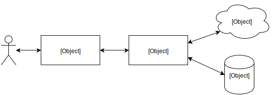
如果我们用Django来创建web应用的话,我们每层需要如下技术.
- client是一个浏览器(i.e. Chrome, Firefox, Safari等等),它将返回 HTML/CSS页面.
- middleware是一个Django应用,它会贯穿我们开发Django内建web服务的始终.
- database将会是基于Python的SQLite3数据库引擎
- search API将会是Bing的搜索API
尽管我们需要处理上图中所有的部分,但这本书大部分的精力都集中在开发中间件(middleware).
2.7 线框
网站线框图为设计网站界面提供很大的帮助.它们可以节省很多时间,它不同于依赖工具的手工绘制.对于Rango,我们希望它的首页如下图所示.
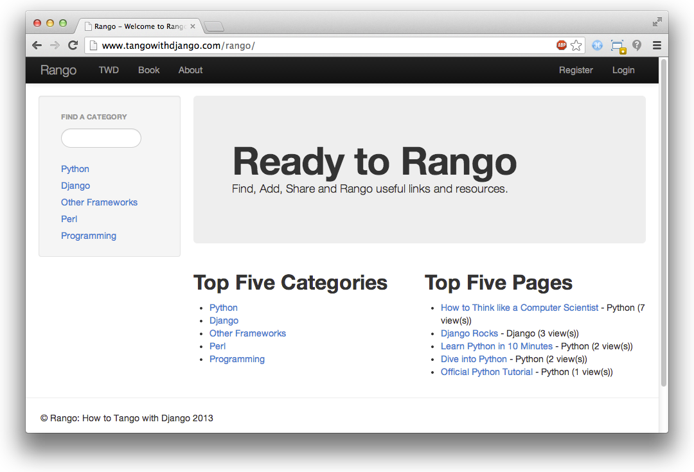
目录页如下图所示:
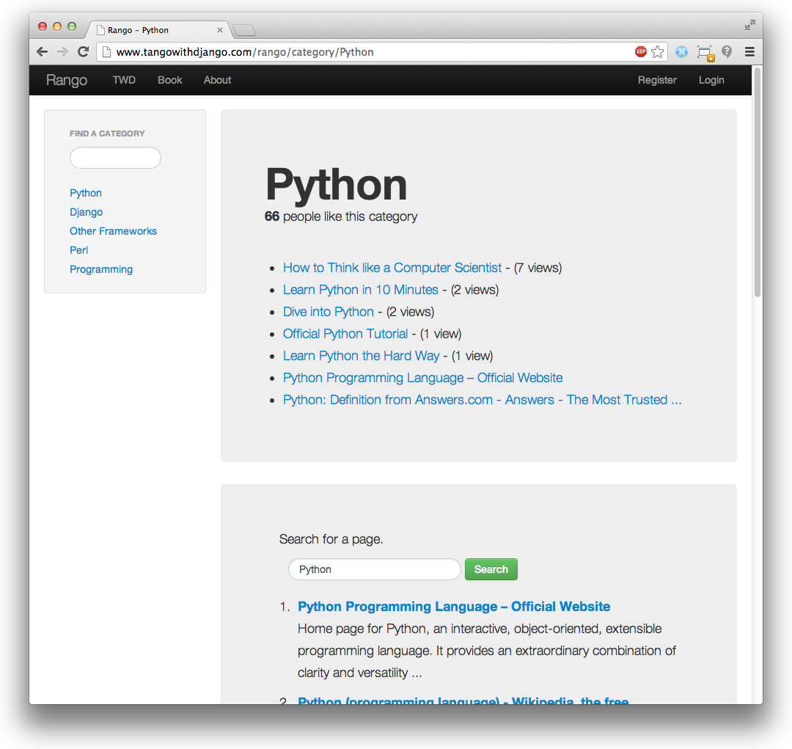
2.8 页面和URL映射
通过规则说明,我们已经确认在不同的时间我们将会给用户呈现两个页面.为了进入不同的页面我们需要对URL进行映射.URL映射就是用户为了进入网页而在浏览器输入的文本.Rango的URL映射如下.
/rango/将会指向主页视图./rango/about/将会指向about页面视图./rango/category/<category_name>/将会指向每个<category_name>的目录页视图,这个目录可能是:- 游戏;
- python小技巧
- 代码或者编译程序
/rango/etc/,为将来的功能实现留出etc
当我们创建应用时,我们可能需要创建一些别的URL映射.但是上面那些使我们首先要建立的.还有要考虑到提供的目录名字不存在时,我们需要把目录名字转换为一个有效的URL字符串.
随着对这本书的深入,我们会逐渐掌握用Django框架来创建网页和用Model-View-Template设计模式.现在我们只是对URL映射和网页交互界面有个大概的印象,我们还需要定义数据模型来为我们的应用提供数据.
2.9 实体-关系图
通过给出的规则,我们知道至少有两个实体:目录和页面.同时一个目录可以容纳许多页面.我们可以通过以下ER图来描述我们的数据模型.

注意一点,一个页面可以在一个或多个目录里.所以我们需要建立多-对-多的关系.为了将问题不那么复杂化,我们做个简单的假设,一个目录可以包含多个页面,但是一个页面只能属于一个目录.这并不能防止了一个页面出现在两个不同目录的情况 - 在不理想的情况下,页面可能进入两次.
写技术笔记是个好的喜欢,尤其是当你知道它会再次出现的时候!通过记下它们,你可以和你的开发团队进行交流确保相同的问题可以可以很快解决.
建表如下,Str表示一个string或者char,Int表示一个integer,URL表示一个URL而FK表示Foreign Key.
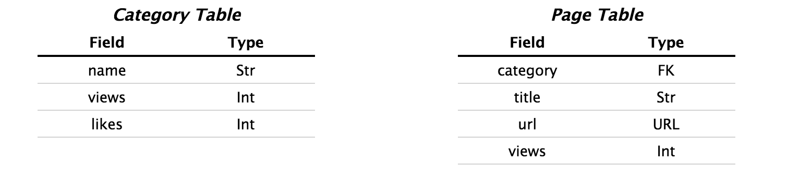
我们同样有一个用户表 - 这里没有展示,将在以后介绍.在接下来的章节里我们可以看到在Django里如何实例化这些数据模型,并且了解如何用Django的ORM去连接数据库.
2.10 总结
这些设计和说明将会对我们构建我们的web应用提供很好的帮助.我们要用到的技术和步骤同样适用于大多数数据驱动的网站.熟悉这些规范和设计对我们有很大的好处.
如果你已经安装了了Python2.7和Django1.7,你对命令行设置你的路径有所了解,那么你可以直接跳过Django基础这一章.否则,让我们一起来看第三章.
2.10.1 和Django官方教程一起学习
我们建议Django官方教程作为这本书每个章节的练习题.你可以在下表中找到这两本书章节之间的对应关系.官方教学的练习将会帮助你深入了解Django框架,而且会提升你的技巧.
| Tango woth Django | Django Tutorial |
|---|---|
| Chapter 3 | Part 1 - Models |
| Chapter 5 | Part 2 - The Admin Interface |
| Chapter 6 | Part 3 - URLs and Views |
| Chapter 7 | Part 4 - Templates |
| Chapter 18 | Part 5 - Testing |
| Chapter 11 | Part 6 - CSS |
3 准备好Tango
让我们一起出发!为了和Django一起探戈,你需要确保你已经在你的电脑上安装了所有需要的东西,而且你需要掌握你的开发环境.本章让你了解你需要什么并且需要掌握哪些知识.
对于本教程,你需要下面两个关键的软件:
- Python 2.7.5+
- Django 1.7
作为编写Django这个web框架的程序语言,你需要了解Python的一些知识.如果你从来没有使用过Python并且希望掌握这门语言,我们强烈推荐你学习以下至少一个教程.
- A quick tutorial - Learn Python in 10 Minutes by Stavros, http://www.korokithakis.net/tutorials/python/.
- The Official Python Tutorial at http://docs.python.org/2/tutorial/.
- A brilliant book: Think Python: How to Think like a Computer Scientist by Allen B. Downey, available online at http://www.greenteapress.com/thinkpython/.
- An amazing online course: Learn to Program, by Jennifer Campbell and Paul Gries at https://www.coursera.org/course/programming1.
3.1 使用终端
学习如何使用你的操作系统提供的命令行交互对设置你的环境来说至关重要.在本教程中,你应当习惯用命令行进行交互.如果你已经熟悉使用命令行那么你可以直接跳到安装软件这一章节.
类UNIX系统都有一个看起来相似的终端.UNIX有许多派生或者衍生的后代,包括苹果的OS X和许多Linux发行版本.所有的这些操作系统都包含一系列命令行界面可以帮助你管理文件和运行程序,他们并不需要图形界面.本节介绍你应当掌握的关键命令.
注意:这个教程针对的是类UNIX系统.虽然Django和Python可以在Windows系统下运行,但是这本书中的大部分命令都是针对类UNIX终端的.在Windows中,可以用与UNIX相近的命令或者使用仿UNIX终端的PowerShell来运行这些命令.
如果进入一个终端里,你会看到如下的形式:
sibu:~leif$
这个叫做提示符,提示你系统正在等待执行键入的命令.这个提示符可能因为你系统的不同而有所区别,但是大致上看起来都这样.在上面的例子中给出了3个有用的信息:
- 你的用户名和电脑名(
leif用户名和sibu电脑名) - 你的当前目录(波浪线,或者
~) - 你用户的权限(美元符,或者
$)
美元符($)一般意味着用户作为一个标准的用户.相反,如果是井字号(#)则表示用户具有root权限.不管什么符号都意味着电脑正在等待你的输入.
打开终端窗口,看一看你的提示符是什么.
当你使用终端的时候,知道你处于系统文件的什么位置是非常重要的.为了知道你位于哪里,你可以键入pwd命令.它会显示出你当前工作目录.例如:
Last login: Mon Sep 23 11:35:44 on ttys003
sibu:~ leif$ pwd
/Users/leif
sibu:~ leif$
你可以看到当前工作目录是:/Users/leif.
同时你可以注意到我当前工作目录为~.这是因为波浪线(~)表示我的主目录.所有类UNIX文件系统的都是根目录作为起始基点的.根目录用/表示.
如果你不在你的主目录里,你可以通过键入如下命令改变目录(cd).
$ cd ~
让我们建一个名叫code的文件夹.可以键入建立文件夹命令(mkdir),如下.
$ mkdir code
进入新建的code文件夹,键入cd code.如果你检查你现在的工作目录,你可以看到你处在~/code/目录中.同样你可以通过你的提示符看出来.看下面的例子,当前工作目录出现在电主机名字sibu后面.
注意:以后不管什么时候提到工作空间(
<workspace>),我们指的是你的code目录
sibu:~ leif$ mkdir code
sibu:~ leif$ cd code
sibu:code leif$
sibu:code leif$ pwd
/Users/leif/code
列出目录中的文件,可以用ls命令.如果你想查看隐藏文件或目录只需要键入ls -a命令,这里a参数指代全部.如果cd回到你的主目录(cd ~)然后键入ls,你就会看到在你的主目录里有个叫code的文件夹.
为了查看你目录里的更多信息,可以输入ls -l.它会展示你文件的许多详细信息包括他是否是目录(通过前面的d可以看出)
sibu:~ leif$ cd ~
sibu:~ leif$ ls -l
drwxr-xr-x 36 leif staff 1224 23 Sep 10:42 code
输出信息同时包含目录权限的信息,谁建立了这个文件夹(leif),它的群组(staff),大小,这个文件修改时间,当然还有它的名字.
通过终端你可以发现可以很方便的修改文件.在你的电脑上可能已经安装了许多出色的编辑器.nano编辑器是一个很简洁的编辑器,它不像vi需要花很多时间来学习.下面将介绍一些十分有用的UNIX命令.
3.1.1 常用命令
所有的类UNIX操作系统都有一系列的针对文件管理的内建命令.下面将列出一些使用频率非常高的命令,我们将会简单介绍它们是干什么的和如何去使用它们.
pwd:在终端打印出当前工作目录.展示出当前所在目录的绝对路径.ls:在终端打印出当前工作目录中文件列表.默认情况下,你不会看到文件大小 - 可以通过ls -lh命令进行查看.cd:后边连接路径,可以允许你改变当前工作目录.例如,cd /home/leif/改变工作目录到/home/leif/.你还可以通过键入两个点(cd ..)转移到上一级目录而不用输入绝对路径.cp:复制文件或者目录.你必须提供源和目标.例如,如果要在同一文件夹里复制input.py,那你可以这样输入cp input.py input_backup.pymv移动文件或者目录.像cp一样,必须提供源和目标.这个命令还可以重命名文件.例如,把numbers.txt重命名为letters.txt只需键入mv numbers.txt letters.txt.把一个文件移动到另一个目录,你可以使用绝对或者相对路径作为目的地址 - 比如mv numbers.txt /home/david/numbers.txt.mkdir:在当前目录创见文件夹.你需要提供一个新文件夹的名字在mkdir命令后面.例如,当前目录是/home/david/,运行mkdir music,你将会得到一个文件夹/home/david/music/.你需要键入cd来进入这个文件夹.rm:remove的简写,这个命令会删除你的文件.你必须提供你要删除文件的名字.如果你输入rm命令,它会提示你是否希望删除这个文件的选项.你也可以用递归删除来删除文件夹.用这个命令一定要小心,要恢复删除的文件几乎不可能.rmdir:删除目录的传统方法.在后面提供你要删除的目录.需要注意的是:这个命令没有提示是否要删除这个目录.sudo:允许你用其他用户权限来运行这个程序.一般,用root(类UNIX或者UNIX衍生系统的超级用户)身份来运行这个程序.
注意:这里只列出了一小部分命令列表.如果想了解更多请查看ubuntu的关于使用终端的文档,或者FOSSwire写的Cheat Sheet.
3.2 安装软件
现在你已经知道怎么和终端打交道了,你可以按着这个教程的要求安装软件了.
3.2.1 安装Python
Python2.7.5已经安到你的电脑上了吗?如果你使用的是linux发行版或者OS X系统,那么你的Python已经安装好了.因为许多系统的功能都是有Python实现的,所以他们本身自带Python解析器!
很不幸,几乎所有的现代操作系统的Python版本都比我们在这个教程里需要的要老.有许多方法可以安装Python,许多方法都非常苦难.我们提供了最常用的方法,并且提供获取更多信息的链接.
警告:这个段落将会详细介绍如何安装Python2.7.5.但是千万不要移除系统默认的Python.这样做可能损坏你的系统.
3.2.1.1 苹果OS X
这个方法最简单,你只需要下载并运行官方的下载器即可.网址在 http://www.python.org/getit/releases/2.7.5/.
警告:在下载前确保
.dmg文件的版本和你的OS X系统的版本相符!
- 下载完
.dmg文件,在目录里双击. - 文件会以磁盘方式挂载,并会出现一个新的Finder窗口.
- 双击
Python.mpkg文件.将会运行Python安装器. - 你必须输入密码确认你要安装这个软件.
- 所有以上都完成了,关闭安装器并弹出Python磁盘.现在可以删除
.dmg文件.
你现在就已经安装了升级过后的Python了,为Django做好准备!是不是灰常简单?
3.2.1.2 Linux发行版
不幸的是,在Linux发行版上下载更新Python有许多不同的方法.更糟糕的是每个发行版的方法都不一样.例如,Fedora安装Python的方法就和Ubuntu不一样.
然而并不是一点方法都没有.一个非常牛B的叫做Pythonbrew工具(或者说是Python环境管理器)可以帮助我们解决这一难题.它提供了一个简单的安装和管理不同版本Python的方法.这意味着你可以不用管系统已经默认安装的Python了.
可从pythonbrew的主页和stackOverflow了解到,安装Python2.7.5需要以下步骤.
- 打开一个终端
- 运行命令
curl -kL http://xrl.us/pythonbrewinstall | bash.你将会下载一个安装器,然后在终端里运行它.pythonbrew将会安装在~/.pythonbrew目录.记住~符号表示你的主目录. - 你需要编辑
~/.bashrc文件.通过编辑器(比如gedit,nano,vi或者emacs)打开,在文件最后加入下面[[ -s $HOME/.pythonbrew/etc/bashrc ]] && source $HOME/.pythonbrew/etc/bashrc - 保存
~/.bashrc文件,关闭终端并重新打开一个新的.这样做你的改变就可以生效了. - 运行
pythonbrew install 2.7.5来安装Python 2.7.5. - 现在你需要切换Python2.7.5来激活Python的安装.只需要键入
pythonbrew switch 2.7.5. - Python 2.7.5就已经安装好了.
注意:以点号开头的文件或者目录同windows里的隐藏文件是一样的.Dot file正常情况下是看不见的,他们通常用作配置文件.如果要查看隐藏的文件只需要键入
ls -a.
3.2.1.3 Windows
Windows并没有默认安装Python.也就是说不必考虑遗留版本的问题,只需下载安装即可.可以从Python官方网站下载64位或者32位的版本.如果你不确定要下载哪一个,你可以通过访问the Microsoft website来确定你的电脑是64位还是32位.
- 当安装器下好以后,打开它.
- 根据提示安装Python
- 完成后关闭安装器,删除下载的文件.
当安装器完成以后,你的Python就能安装好并且能用了.Python2.7.5默认安装在C:\Python27文件夹内.我们建议你使用这个默认的路径.
安装完毕后,打开命令提示符输入python.如果看到Python的提示符,表示安装成功.然而有些时候安装器不能正确的设置Windows的PATH变量.将导致python命令不能被找到.在Windows7里可以按照如下:
- 点击开始按钮,右键点击我的电脑选择属性.
- 点击高级选项卡.
- 电机环境变量按钮.
- 在系统变量列表里,查找名字叫Path的变量,点击并选择编辑按钮
- 在行末添加
;C:\python27;C:\python27\scripts.不要忽略分号 - 还有不要添加空格. - 点击确定保存配置.
- 关闭所有的命令行,重新打开,试试看键入
python.
如果一步步做下来Python应当就能安装成功了.对于Windows XP来说,有一些不同,对于Windows 8的情况也是.
3.2.2 设立PYTHONPATH
当Python安装完毕,我们需要检查一下安装是否成功.为了确定安装成功我们需要检查PYTHONPATH环境变量成功被设定.PYTHONPATH为Python解析器提供了包和模块的位置.如果PYTHONPATH设置错误,我们将不能安装和使用Django!
首先,让我们验证PYTHONPATH变量存在.在类UNIX系统中,键入如下命令.
$ echo $PYTHONPATH
在Windows系统中.
$ echo %PYTHONPATH%
如果成功运行,你将会看到如下相似的输出.在Windows系统中你将会看见一个Windows路径,大多数它们是以C盘作为根目录.
/opt/local/Library/Frameworks/Python.framework/Versions/2.7/lib/python2.7/site-packages:
这个路径就是Python包和模块存放的路径.如果你得到了这个路径,你可以继续接下来的教程了.如果你什么都没有得到,你需要做一些额外的工作去找到这个路径.如果在Windows系统里site-packages一般位于安装Python目录的lib文件夹里.例如,如果你在C:\Python27安装了Python,那么site-packages一般就会在C:\Python27\Lib\site-packages\.
对于类UNIX系统,先打开Python解析器.输入如下的命令.
$ python
Python 2.7.5 (v2.7.5:ab05e7dd2788, May 13 2013, 13:18:45)
[GCC 4.2.1 (Apple Inc. build 5666) (dot 3)] on darwin
Type "help", "copyright", "credits" or "license" for more information.
>>> import site
>>> print site.getsitepackages()[0]
'/Library/Frameworks/Python.framework/Versions/2.7/lib/python2.7/site-packages'
>>> quit()
调用site.getsitepackages()将会返回Python存储包和模块的地址列表.如果调用getsitepackages()函数的时候返回错误,那么需要检查一下Python的版本.只有2.7.5及以上版本才包含这个函数.
print site.getsitepackages()[0]语句运行的结果会返回安装的site-packages目录.得到这个路径,我们需要把它添加进你的设置.在类UNIX系统里,再次编辑.bashrc文件,把下面这句加入文件里.
export PYTHONPATH=$PYTHONPATH:<PATH_TO_SITE-PACKAGES>
把<PATH_TO_SITE-PACKAGES>更换为你的site-packages目录地址.保存文件,退出并重新打开终端.
在Windows机器上,如前面的方法一样,设置一个PYTHONPATH变量并把它的地址设置为C:\Python27\Lib\site-package.
3.2.3 使用Setuptools和Pip
对于任何一个项目来说安装和设置开发环境都极为重要.由于像Django这样的包安装都是分别安装的,这将会导致许多问题和麻烦.比如说,你如何和其他的开发人员分享你的设置?如何在一台新的机器上部署同样的环境?如何把包升级到最新版本?使用包管理工具可以解决大部分安装和设置环境的问题.它可以确保安装的包适合你的Python版本,同时它也可以自动安装其他需要依赖的包文件.
在这本书里我们将使用Pip.Pip是一个对用户更友好的Python包管理工具.因为Pip依赖于Setuptools,所以我们必须保证两个程序都安装在你的电脑上.
一开始我们需要在Python package website下载Setuptools.你可以下载.tar.gz文件.用你喜欢的解压软件解压它.它们应当被解压到setuptools-1.1.6目录里 - 这里1.1.6代表Setuptools版本号.在终端里进入目录执行ez_setup.py脚本,如下.
$ cd setuptools-1.1.6
$ sudo python ez_setup.py
在上面的例子中,我们用sudo来允许在系统范围内的更改.第二个命令将会为你安装Setuptools.如果输出如下就可以验证安装成功.
Finished processing dependencies for setuptools==1.1.6
当然这里的1.1.6会用你下的版本号代替.如果你看到上面的输出,那么就可以接下来安装Pip了.这个步骤非常的简单,在终端中键入如下.
$ sudo easy_install pip
这个命令同样会在系统里下载和安装Pip.如果输出如下则安装成功.
Finished processing dependencies for pip
如果看到上面的输出,你就可以在终端里直接输入pip来启动Pip了.如果没有遇到什么错误的话,你将会看到一个Pip提供的命令列表.如果你看到了这个列表,那么恭喜你!
注意:在Windows主机里,操作都一样.但是在输入命令的时候不用输入
sudo.
3.2.4 安装Django
如果安装Pip成功的话,Django就容易安装了.打开终端让我们来输入.
$ pip install -U django==1.7
如果你使用类UNIX系统的话你需要在命令前加sudo.
$ sudo pip install -U django==1.7
包管理器将会下载Django到正确的位置.以上做完后,Django就安装成功了.注意,如果没有写==1.7,那么你将有可能安装其他版本的Django.
3.2.5 安装Python图像库
在建造Rango这个应用的时候,我们需要处理和上传图片.所以我们需要Pillow这个图形库.打开终端输入如下.
$ pip install pillow
如果需要前面加sudo.
3.2.6 安装其他Python包
值得注意的是,其他包也可以用这种方法很方便的下载下来.The Python Package Index提供了Pip可以安装包的列表.
可以通过下面的命令查看已经安装包的列表.
$ pip list
3.2.7 分享你的包列表
你可以将你的已安装包列表分享给其他的开发者.
$ pip freeze > requirements.txt
如果你用more,less或者cat来检查requirements.txt文件,你将会看见差不多一样的列表.这个requirements.txt文件可以用下面的命令安装.如果你要在另一台电脑上配置环境将变得非常方便.
$ pip install -r requirements.txt
3.3 集成开发环境
尽管不是必须的,但是一个好的集成开发环境(IDE)将会对我们的开发灰常有帮助.像JetBrain系列的PyCharm和PyDev(Eclipse的一个插件)都是比较流行的IDE.Python Wiki会提供一个实时更新的Python IDE列表.
可以试试到底哪个适合你,同时要知道其中一些需要购买认证.理想情况下,你会选择一个集成Django的IDE.PyCharm和PyDev都提供了Django的集成 - 尽管你需要告诉IDE你使用的是哪个版本的Python.
3.3.1 虚拟环境
我们马上就快设置完毕了!在我们继续之前,值得注意的是如果我们就这么安装的话会有很多缺点.加入我们有其他的Python应用,需要另一个版本才能运行?或者你想转到新的版本的Django,但仍然像维持Django1.7项目?
解决的方法就是virtual environment.虚拟环境可以允许我们同时安装不同版本的Python和他们的包.现在,这已经成为一个普遍的方法.
安装的话也非常好安装.
$ pip install virtualenv
$ pip install virtualenvwrapper
第一个包提供了创建虚拟环境的基础.如需更多细节可以参看Jamie Matthews的a non-magical introduction to Pip and Virtualenv for Python Beginners.如果仅仅使用virtualenv将会变得很复杂.安装的第二个包就是使这个过程简化.
如果你使用的是类UNIX系统,那么你需要在命令行中启动这个脚本:
$ source virtualenvwrapper.sh
为了不必每次使用时都输入这个命令可以在profile里设定.
如果你使用的是Windows环境,那么需要下载virtualenvwrapper-win包:
$ pip install virtualenvwrapper-win
现在你可以创见虚拟环境了:
$ mkvirtualenv rango
你可以用lsvirtualenv命令列出创建的虚拟环境,如果你要激活输入如下:
$ workon rango
(rango)$
你的命令提示符会改变而且会显示当前虚拟环境,像上面的rango.现在你可以在环境里安装你想要安装的任何包了,并且他们不会干涉其他的环境.键入pip list去检查是否安装了Django或者Pillow包.你可以用pip来安装他们,但是他们只是存在于虚拟环境里.
接下来我们将要开发应用并且设置一个虚拟环境,参看下一章 开发你的应用.
3.3.2 代码库
当你进行开发时,可以使用SVN或者GIT来进行版本控制.在我们的教程里不会使用版本控制.但是我们提供了crash course on GIT.我们强烈建议你在自己的项目里建立版本控制.他往往能终究你与水火.
3.4 练习
为了更好的设置你的环境,试着完成下列练习.
- 安装Python2.7.5+和Pip
- 练习CLI,创建名字叫
code目录并把我们的项目放进去. - 安装Django和Pillow包
- 设置虚拟环境
- 设置你的GitHub账号
- 下载并设置IDE(比如PyCharm)
- 我们将书中的代码放在了GitHub,参见Tango With Django Book和Rango Application
- 如果你对这本书遇到错误和问题,你可以创建一个request!
- 如果对练习题有问题,你可以检查代码库看看我们是如何完成的.
4 Django基础
让我们开始Django之旅吧!在本章,我们将概述如何使用Django.你可以建立一个新的项目和web应用.在本章的最后,你将能够建立一个Django页面并且运行它.
4.1 测试你的安装
让我们检测一下Python和Django是否是我们教程里需要的版本.
$ python --version
2.7.5
上面的命令将会运行Python解析器,如果有-c选项则可以执行它后面的代码.你可以查看输出以检查Python版本是否是你需要的.如果版本不是2.7.5,你可能需要返回3.2章节去检查一下安装时是否拉下了某些步骤.
在检验了安装的python后,让我们检验一下Django.
$ python -c "import django; print(django.get_version())"
1.7
通过调用Django模块,可以看到下方输出1.7.如果你得到的是其他版本,或者出现ImportError,那么返回3.2章节或者参看Django Documentation on Installing Django.如果你发现你的Django版本不是1.7,那么以后可能会遇到一些问题.所以还是确保Django的版本是1.7吧.
4.2 创建你的Django项目
在你的code目录里创建你的项目.
$ django-admin.py startproject tango_with_django_project
注意:在Windows机器上你需要全路径运行django-admin.py脚本.比如
python c:\python27\scripys\django-admin.py startproject tango_with_django_project
这个命令竟会运行django-admin.py脚本,它将会为你创建一个名叫tango_with_django_project的Django新项目.这个名字随便你取的.
你可能注意到了在你新创建的tang_with_django_project项目里自动创建了两个项目:
- 另一个和
tango_with_django_project同名的目录. - 一个叫
manage.py的Python脚本
在这篇教程里我们把这个tango_with_django_project目录叫做项目设置目录,在这个目录里我们会发现有4个Python脚本.我们稍后会详细介绍下这几个脚本.
__init__.py:这是一个空的脚本,用来告诉Python编译器这个目录是一个Python包.settings.py:用来存储Django项目设置的文件.urls.py:用来存储项目里的URL模式.wsgi.py:用来帮助你运行开发服务,同时可以帮助部署你的生产环境.
注意:这个项目文件是自从1.4版本后才创立的.虽然和项目同名的目录看起来很怪,但这样做还是有道理的,它可以和其他应用进行区分.
在项目里还有一个叫做manage.py的文件.这个文件是我们开发项目时经常使用的文件,它为我们提供了一系列的Django命令.例如,manage.py允许你运行内建的Django服务来测试和运行数据库命令.真的,这个脚本是你最常用的脚本了.
注意:可以参见Admin and Manage scripts来了解更多.
现在可以运行manage.py脚本了.
$ python manage.py runserver
执行上面的命令将会初始化运行一个轻量的服务器.可以在终端里看到输出如下.
$ python manage.py runserver
System check identified no issues (0 silenced).
You have unapplied migrations; your app may not work properly until they are applied.
Run 'python manage.py migrate' to apply them.
October 01, 2014 - 19:49:05
Django version 1.7c2, using settings 'tango_with_django_project.settings'
Starting development server at http://127.0.0.1:8000/
Quit the server with CONTROL-C.
$ python manage.py migrate
Operations to perform:
Apply all migrations: admin, contenttypes, auth, sessions
Running migrations:
Applying contenttypes.0001_initial... OK
Applying auth.0001_initial... OK
Applying admin.0001_initial... OK
Applying sessions.0001_initial... OK
migrate命令会检查你的INSTALLED_APPS设置,同时会创建你的mysite/settings.py文件中相关的app的数据库图表(我们稍后会介绍).你将会看到所有初始化的信息.如果你感兴趣,你可以用相应数据库的命令查看Django创建的数据库,例如dt(PostgreSQL),SHOW TABLES(MySQL)或者 .schema(SQLite).
现在打开浏览器输入 http://127.0.0.1:8000/ .你将会看到下图所示.

在终端里输入CTRL + C就可以关掉服务器.如果你希望服务器开在别的端口,或者你希望其他主机可以访问,你可以在命令后面加入参数.
$ python manage.py runserver <your_machines_ip_address>:5555
执行上面的命令将会把服务转换到TCP的5555端口.你需要把上面的$ python manage.py runserver <your_machines_ip_address>:5555换成你自己主机的IP地址.
在设置端口的时候,你不能设置1024以下的端口,因为它们都是系统的预留端口.
用上面那个命令就可以轻松的向同事们展示你的网页了.当你运行你的web服务时,其他人可以通过键入http://<your_machines_ip_address>:<port>/来进入你的web应用.当然这也要取决于你的网络设置.在联通之前你或许要设置以下防火墙或者代理.如果你不能远程连接你的网站,那么请检查以下你的网络.
注意:
django-admin.py和manage.py提供了许多有用的节省时间的功能.django-admin.py可以创建项目和应用以及一些其他的命令.不带参数的执行脚本可以参看各自的说明.official Django documentation provides a detailed list and explanation of each possible command 有详细的介绍.
如果你正在使用版本控制,那么现在可以提交你的更改到工作空间了.如果你忘记该用什么命令,可以看看crash course on GIT.
4.3 创建Django应用
通过一系列的设置和各种应用就可以组成一个web应用和网站,这就是Django.熟练的使用它是一个很好的软件工程实践.如果你开发了许多的小型应用,理论上讲你可以非常容易的把应用放入其他的Django项目里.不要重复造轮子!
每个Django应用的存在都对应它实现的一种功能.针对不同的功能你需要创建不同的应用.假设我们有一个项目,它包括一个投票app,一个注册app和一些内容相关的app.在其他的项目里,我们希望能重用投票和注册app,并且用他们来发送不同的内容.这里有许多应用可以下载并用到你的项目里.接下来我们将要学习如何创建你自己的应用.
一开始我们需要创建名字叫Rango的应用.在你的Django项目的目录里(例如<workspace>/tango_with_django_project),运行如下命令.
$ python manage.py startapp rango
这个命令在你的项目根目录里创建了一个新的名叫rango的目录 - 这里面包含了5个Python脚本.
__init__.py,和我们前面说过的功能一样.models.py,一个存储你的应用中数据模型的地方 - 在这里描述数据的实体和关系.tests.py,存储你应用的测试代码.views.py,在这里处理用户请求和响应.admin.py,在这里你可以向Django注册你的模型,它会为你创建Django的管理界面.
views.py和models.py在每个应用中都要用到,他们俩是Django设计模式的组成部分,例如Model-View-Template模式.你可以通过the official Django documentation来了解详细的信息.
在你创建模型和视图之前,你必须要告诉Django你的新应用的存在.所以你必须修改你配置目录里的settings.py文件.打开文件找到INSTALLED_APPS元组.在元祖的最后面增加rango.
INSTALLED_APPS = (
'django.contrib.admin',
'django.contrib.auth',
'django.contrib.contenttypes',
'django.contrib.sessions',
'django.contrib.messages',
'django.contrib.staticfiles',
'rango',
)
通过运行服务来检查你的应用是否被添加.如果运行正常,那么你的应用就成功加入.
4.4 创建视图
既然我们已经创建好Rango,让我们创建一个简单的视图.作为我们的第一个视图,我们就简单的把文本传送给客户端 - 我们现在不必关心模型或者模板.
用你喜欢的IDE打开位于rango目录里的views.py文件.删除注释# Create your views here.现在你得到一个空文件.
可以加入如下代码.
from django.http import HttpResponse
def index(request):
return HttpResponse("Rango says hey there world!")
让我们逐行分析.
- 我们第一行首先从
django.http模块导入HttpResponse对象. - 在
views.py文件里每个视图对应一个单独的函数.在这个例子中我们只创建了一个index视图. - 每个视图至少带一个参数 - 一个在
django.http模块的HttpRequest对象. - 每个视图都要返回一个HttpResponse对象.本例中这个HttpResponse对象把一个字符串当做参数传递给客户端.
虽然已经创建了视图,但是如果想让别人看到它,你必须用URL映射这个视图.
4.5 URL映射
在rango目录里,我们需要创建一个叫做urls.py的文件.文件里是可以设置你的应用映射到URL(例如'http://www.tangowithdjango.com/rango/').
from django.conf.urls import patterns, url
from rango import views
urlpatterns = patterns('',
url(r'^$', views.index, name='index'))
这段代码导入Django自带的映射URL机制.导入rango的view模块引入我们先前建立的视图.
为了建立映射,我们用到了tuple.在Django里必须用urlpatterns来命名这个元组.这个urlpatterns元组包含一些django.conf.urls.url()函数的调用,而每个函数里都有一个唯一的映射.在上面的代码里,我们只用了url()一次,所以我们只映射了一个URL.django.conf.urls.url()函数的第一个参数是正则表达式^$,指的是匹配一个空字符串.所有匹配这个模式的URL都会映射到views.index()这个视图.用户的请求信息会包含在HttpRequest对象里作为参数传递给视图.我们给url()函数可选参数name赋值为index.
注意:你或许以为映射一个空URL毫无意义 - 它有什么用?当我们进行URL匹配时,只考虑到了原始URL字符串的一部分.这是因为我们的Django项目会优先处理原始URL字符串(例如
http://www.tangowithdjango.com/rango/).一旦被处理,它将会被删除,留给剩下的部分去做匹配.在本例中,会剩下空字符串 - 所以空字符串会进行匹配!注意:
django.conf.urls.url()函数的name参数是个可选参数.Django提供这个方法可以让你区别不同的映射.有时候连个不同的URL映射表达式会调用相同的视图.name可以让你轻松的区分他们 - 有些时候反响URL匹配会很有用.更多细节查看the Official Django documentation .
你或许已经看到在项目目录里已经存在了一个urls.py文件.为什么创建另一个呢?事实上,你可以吧所有的项目应用的URL都放在这个文件里.但是这是一个坏的习惯,这回增加你的应用的耦合.各自应用的urls.py文件存放各自应用的URL.为了最小耦合,你可以稍后把它们加入到项目目录的urls.py文件里.
这就意味着我们需要设置tango_with_django_project里的urls.py文件,把我们的Rango应用和Django连接.
我们该怎么做呢?很简单.打开项目目录里的urls.py文件.在你的工作目录里,有可能是<workspace>/tango_with_django_project/tango_with_django_project/urls.py像下面一样更新urlpatterns元组.
urlpatterns = patterns('',
# Examples:
# url(r'^$', 'tango_with_django_project_17.views.home', name='home'),
# url(r'^blog/', include('blog.urls')),
url(r'^admin/', include(admin.site.urls)),
url(r'^rango/', include('rango.urls')), # ADD THIS NEW TUPLE!
)
新增的映射将会寻找匹配^rango/的url字符串.如果匹配成功的话将会传递给rango.urls(我们已经设置过了).include()函数是从django.conf.urls导入的.整个URL字符串处理过程如下图所示.在这个过程中,域名首先被提取出来然后留下其他的url字符串(rango/)传递给我们的tango_with_django_project,在这里它会匹配并去掉rango/然后把空字符串传递给rango应用.Rango现在匹配一个空字符串,它会返回我们创造的index()视图.
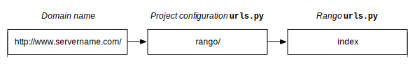
重新启动Django服务然后访问http://127.0.0.1:8000/rango.如果一切顺利,你将会看到Rango says hello world!.就像下图所示.
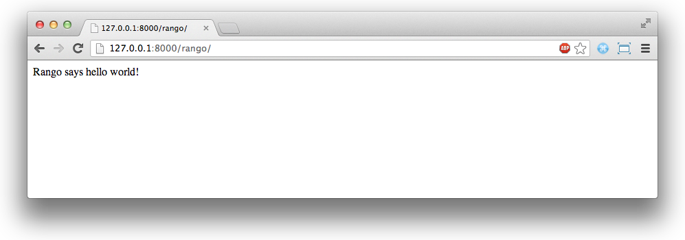
在每个应用中,你都可以创建许多URL映射.初始映射非常简单.下面我们会用URL做出更复杂的映射.
对于理解Django的URL机制非常的重要.如果你仍有什么困惑可以查看official Django documentation on URL,以做更进一步的了解.
注意:URL模式使用正则表达式来进行匹配.在Python中学好正则表达式非常的有用.Python官方文档包含了userful guide on regular expressions, regexcheatsheet.com提供了 neat summary of regular expressions.
4.6 基本流程
本章所学的内容将会总结成一个列表.在这里我们为两个不同列表.
4.6.1 创建新的Django项目
python django-admin.py startproject <name>来创建项目,这里<name>是你希望的项目名.
4.6.2 创建新的Django应用
$ python manage.py startapp <appname>来创建新的应用,这里<appname>是你的应用名.- 通过把新应用名字加入到
settings.py文件的INSTALLED_APPS元组里来告诉Django项目添加了新的应用. - 在项目的
urls.py文件映射应用. - 在应用目录里创建
urls.py文件使URL字符串指向视图. - 在应用的
view.py里,创建的视图要确保返回一个HttpResponse对象.
4.7 练习
恭喜你!你已经创建并运行Rango了.这是里程碑意义的事件.创建视图和映射是迈向开发更复杂可用的web应用的第一步.现在试着练习一下巩固所学.
- 修改程序,确保你知道如何把URL映射到视图.
- 创立一个
about视图,返回Rango says here is the about page. - 把这个视图映射到
/rango/about/.在这一步里,你只需要编辑rango应用里的urls.py - 修改
index视图的HttpResponse,使它返回包含about页面的链接. - 在
about视图里使它包含一个回到主页的链接. - 如果你还没怎么明白,还是去看一下Django Tutorial.
4.7.1 提示
如果感觉练习有困难的话,下面将能帮助你完成练习.
index视图里需要包含about视图的链接.这个很简单 - 加入Rango says: Hello world! <br/> <a href='/rango/about'>About</a>这样的语句就行了.接下来我们会优化这些页面的.- 匹配
about/的正则表达式是r^about/. - 返回主页的链接是
<a href=".//rango/">Index</a>.这个结构和上面的about页面里的一样.
5 模板和静态媒体
在本章里你将会学到模板引擎的知识同时也会学习怎么在你的web页面添加静态媒体.
5.1 使用模板
为了创建一个Django网页,我们需要把许多东西都集中到一起.现在我们有两个视图以及一些连接它们的映射.下面我们将学习如何把模板加入到里面.
设计优秀的网站会重用他们的布局结构.你是否看到过同样header和footer的页面,这些重复布局会提高网站的组织性同时会给人连续感.Django提供了与应用逻辑上可分的模板来为开发者更容易的实现这样的设计目标.在本章,你将会创建一个模板来创建一个HTML页面.这个模板将会传递给Django的视图.在第7章,我们会用模板做更复杂的事情.
5.1.1 设置模板目录
为了建立和启动模板,你需要设置一个储存模板的目录.
在你的Django项目目录里(例如<workspace>/tango_with_django_project/)),创建一个新的目录叫做templates.在这个目录里创建另一个rango目录.所以我们将在<workspace>/tango_with_django_project/templates/rango/目录里存放关于rango应用的模板.
为了告诉Django我们的模板在哪里,我们需要修改项目的settings.py文件.找到TEMPLATE_DIRS并把创建的templates目录路径加入到里面.
TEMPLATE_DIRS = ['<workspace>/tango_with_django_project/']
注意你需要提供templates目录的绝对路径.如果你是一个团队的一员或者工作在不同的电脑上,这在将来可能出现问题.你可以有不同的用户名这意味着你<workspace>目录有不同的路径.如果是硬编码路径的话上面的路径在不同电脑上是不同的.当然,你需要为不同的设置增加不同目录,难道没有什么好的方法了吗?
警告:硬编码路径绝逼带你通往地狱.硬编码在软件工程类是绝对抵制的一种模式,它会让你的项目不利于移植.
5.1.2 动态路径
解决硬编码路径问题的方法是利用Python内建函数来动态的创建teemplates目录的路径.通过这个方法你不必考虑你的Django项目位置就能获取它的绝对路径.这将利于你的项目代码的移植.
在Djang1.7的settings.py文件里包含了一个变量BASE_DIR.这个变量会保存settings.py文件的路径.这里面用了一个特殊的___file__属性,它能获取模块的绝对路径.然后通过调用os.path.dirname()来提供绝对路径的目录.再次调用os.path.dirname()我们回得到上层的目录,所以BASE_DIR内容是<workspace>/tango_with_django_project/.如果你还是很好奇的话你可以输入下面的命令.
print __file__
print os.path.dirname(__file__)
print os.path.dirname(os.path.dirname(__file__))
现在让我们使用它看一看.在setting.py中创建TEMPLATE_PATH变量,用它来储存templates目录.这里我们使用os.path.join()函数.
TEMPLATE_PATH = os.path.join(BASE_DIR, 'templates')
我们用os.path.join()函数来连接BASW_DIR变量和templates,它将返回<workspace>/tango_with_django_project/templates/.我们可以为TEMPLATE_DIRS添加TEMPLATE_PATH,就像下面一样.
TEMPLATE_DIRS = [
# Put strings here, like "/home/html/django_templates" or "C:/www/django/templates".
# Always use forward slashes, even on Windows.
# Don't forget to use absolute paths, not relative paths.
TEMPLATE_PATH,
]
我们可以吧TEMPLATE_PATH放在settings.py模块的开头以方便我们对它的修改.这就是为什么我们创建变量来存储模板路径.
警告:当连接系统路径的时候用
os.path.join()是一个比较好的方法.用这种方法可以保证依据你的操作一同来添加正确的分隔符.在POSIX兼容的操作系统上,斜杠用来分割目录,而在Windows系统里用的是反斜杠.如果你手动为路径添加分隔符,那么你可能会在别的操作系统上操作时印发路径错误.
5.1.3 添加模板
在我们创建模板目录和设置好路径以后,我们需要在template/rango/目录里建立一个叫做index.html的文件,在新文件里加入下面代码:
<!DOCTYPE html>
<html>
<head>
<title>Rango</title>
</head>
<body>
<h1>Rango says...</h1>
hello world! <strong>{{ boldmessage }}</strong><br />
<a href="/rango/about/">About</a><br />
</body>
</html>
这个HTML代码创建一个问候用户的简单HTML页面.你可能注意到了在上面有一段非HTML代码{{boldmessage}}.这是Django模板的变量,他可以在输出时为这个变量赋值.一会我们就会用它.
为了使用这个模板,我们需要重新修改一下我们先前创建的index()视图.这次我们不让他传递简单的信息,而是让他返回我们的模板.
在rango/views.py里,确定文件头部有如下代码.
from django.shortcuts import render
修改index()视图函数如下,注释解释每行作用.
def index(request):
# Construct a dictionary to pass to the template engine as its context.
# Note the key boldmessage is the same as {{ boldmessage }} in the template!
context_dict = {'boldmessage': "I am bold font from the context"}
# Return a rendered response to send to the client.
# We make use of the shortcut function to make our lives easier.
# Note that the first parameter is the template we wish to use.
return render(request, 'rango/index.html', context_dict)
首先我们建立一个在模板中使用的字典,然后我们调取render()函数.这个函数接受用户的request,模板名称和内容字典作为参数.这个render()函数将会把这些参数聚合到一起生成一个完整的HTML页面.然后返回给用户的浏览器.
当模板文件被加载到Django模板系统里时,它模板内容也会被创建.在简单的例子里模板的内容是字典里的模板变量对应的Python变量.在我们早先创建的模板文件,我们创建了一个叫做boldmessage的模板变量.在index(request)视图例子中,字符串I am bold font from the context映射到模板变量boldmessage.所以字符串I am bold font from the context将会替换模板里所有的{{ boldmessage }}.
现在你已经更新了视图,运行Django服务并访问 http://127.0.0.1:8000/rango/ .你讲会看到如下图所示.
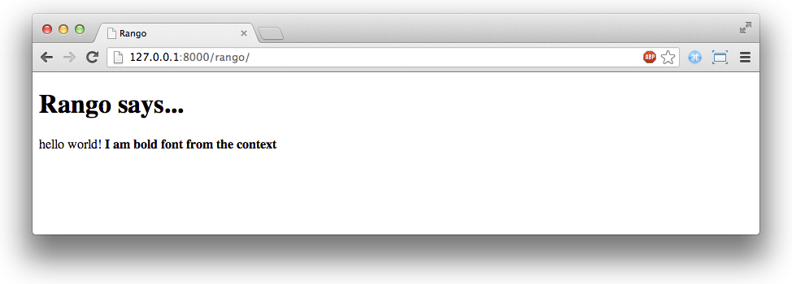
如果你没有看到上图,试着读读错误日志重新检查一下刚才修改的文件.确定所有所有的更改都正确.通常都是在settings.py文件中设置模板路径产生的错误.有时候需要添加print语句来输出BASE_DIR和TEMPLATE_PATH,确保它们俩设置的正确性.
这个例子展示了在视图里如何使用模板.然而我们仅仅接触了一些Django模板方面的功能.在我们的教程里将会接触到更复杂的模板应用.同时你可以参考templates from the official Django documentation.
5.2 提供静态媒体
现在Rango网站确实比较原始,没有样式也没有图片.为了增加样式和引入动态行为我们可以在我们的网站里加入CSS,Javascript和图像这些静态媒体.这些文件和网页有一些不同.这是因为它们不想HTML页面是生成出来的.这章节将会教你如何在Django项目里设置静态媒体.我们将会为我们的模板添加一些静态媒体.
5.2.1 设置静态媒体目录
为了设置静态媒体,你需要设立存储它们的目录.在你的项目目录(例如<workspace>/tango_with_django_project/),创建叫做static的目录.在static里再创建一个images目录.
现在在static/images目录里放置一个图片.如下图所示我们选择一张变色龙的图案来做我们项目的吉祥物.

就像先前`templates目录一样我们需要告诉Django我们创建了static目录.
在settings.py文件,我们需要更新两个变量STATIC_URL和STATICFILES_DIRS元组,像下面一样创建一个储存静态目录(STATIC_PATH)的变量.
STATIC_PATH = os.path.join(BASE_DIR,'static')
STATIC_URL = '/static/' # You may find this is already defined as such.
STATICFILES_DIRS = (
STATIC_PATH,
)
第一个变量STATIC_URL定义了当Django运行时Django应用寻找静态媒体的地址.例如,像我们上面的代码一样吧STATIC_URL设置成/static/,我们就可以通过http://127.0.0.1:8000/static/来访问它了. official documentation on serving up static media 警告我们要注意斜杠的书写.如果不这么设置将会引起一大堆麻烦.
STATIC_URL定义了web服务链接媒体的URL地址,STATICFILES_DIRS允许你定义新的static目录.像TEMPLATE_DIRS元组一样.STATICFILES_DIRS需要static目录的绝对路径.这里,我们重新用5.1章的BASE_DIR变量来创建STATIC_PATH.
完成了这两个设置后,再一次运行你的Django服务.如果我们想要查看我们的Rango图片,访问http://127.0.0.1:8000/static/images/rango.jpg.如果没有出现请查看setings.py文件是否设置正确,并重启服务.如果出现了,试着加入其他类型的文件到static目录并在浏览器上访问他们.
小心:在开发环境中可以你可以用这种方法来提供静态媒体文件,但是在生产环境就不太适合了. official Django documentation on Deploymen提供了在生产环境如何部署静态文件.
5.3 静态媒体文件和模板
现在你已经为你的Django项目设置了静态媒体,你可以在你的模板里加入这些媒体.
下面将展示hi如何加入静态媒体,打开位于<workspace>/templates/rango目录的index.html文件.像下面一样修改HTML源代码.新加入两行用注释标示.
<!DOCTYPE html>
{% load staticfiles %} <!-- New line -->
<html>
<head>
<title>Rango</title>
</head>
<body>
<h1>Rango says...</h1>
hello world! <strong>{{ boldmessage }}</strong><br />
<a href="/rango/about/">About</a><br />
<img src="{% static "images/rango.jpg" %}" alt="Picture of Rango" /> <!-- New line -->
</body>
</html>
首先,我们需要使用{% load static %}标签来使用静态媒体.所以我们才可以用{% static "rango.jpg" %在模板里调用static文件.Django模板标签用{ }来表示.在这个例子里我们用static标签,它将会把STATIC_URL和rango.jpg连接起来,如下所示.
<img src="/static/images/rango.jpg" alt="Picture of Rango" /> <!-- New line -->
如果因为什么原因图片不能加载我们可以用一些文本来代替.这就是alt属性的作用 - 如果图片加载失败就显示alt属性中的文本.
好了,让我们再次运行Django服务访问http://127.0.0.1:8000/rango.幸运的话可以看到下图.
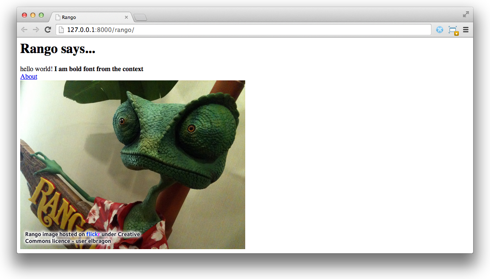
当你希望在模板里使用静态媒体你需要调用{% static %}函数.下面的代码将展示给你如何在你的模板里添加Javascript,CSS和图片.
<!DOCTYPE html>
{% load static %}
<html>
<head>
<title>Rango</title>
<link rel="stylesheet" href="{% static "css/base.css" %}" /> <!-- CSS -->
<script src="{% static "js/jquery.js" %}"></script> <!-- JavaScript -->
</head>
<body>
<h1>Including Static Media</h1>
<img src="{% static "images/rango.jpg" %}" alt="Picture of Rango" /> <!-- Images -->
</body>
</html>
很显然你需要引入的静态文件需要在你的static目录里.如果文件不存在或者引用错误的话,控制台将会输出错误.试试看引入一个不存在的文件将会发生什么.
为了进一步了解静态媒体可查看Django documentation on working with static files in templates.
小心:在你模板的第一行确保文档类型声明(例如
<!DOCTYPE html>).这就是为什么我们需要把{% load static %}放在文档类型声明后面而不是前面.根据HTML/XHTML不同文档类型对象的声明也有稍许不同.很显然Django命令会在模板输出的时候删除,但是删除之后的命令会留下一些空白意味着你的输出将得不到W3C认证服务的验证.
TODO(leifos):注意当你部署项目的时候最好不要这样做,你可以查询https://docs.djangoproject.com/en/1.7/howto/static-files/deployment/
TODO(leifos):DEBUG变量在settings.py中,设置它可以让我们控制是否输出错误信息.当把DEBUG设置成True时对于应用的部署并不安全.当你把DEBUG设置成False,你得需要把settings.py中的ALLOWED_HOSTS变量设置成127.0.0.1以便可以在本地主机上运行.你需要修改项目里的urls.py文件:
from django.conf import settings # New Import
from django.conf.urls.static import static # New Import
if not settings.DEBUG:
urlpatterns += static(settings.STATIC_URL, document_root=settings.STATIC_ROOT)
TODO(leifos):我们将在部署章节详细的介绍.
5.4 静态媒体服务
现在你可以使用静态文件,让我们看看如何上传媒体.许多网站提供了上传图像的功能.这章我们将展示如何为你的Django项目开发一个简单的媒体服务.在开发媒体服务中需要用到的文件上传表格我们将会在第9章里接触到.
那么,我们怎么样才能开发媒体服务呢?第一步是需要在我们Django项目根目录里(比如<workspace>/tango_with_django_project/)创建一个新的目录,名字叫media.这个目录就在templates和static同级目录里.在你创建目录后,需要要修改位于设置目录(例如<workspace>/tango_with_django_project/tango_with_django_project/)里的urls.py文件.修改如下.
# At the top of your urls.py file, add the following line:
from django.conf import settings
# UNDERNEATH your urlpatterns definition, add the following two lines:
if settings.DEBUG:
urlpatterns += patterns(
'django.views.static',
(r'^media/(?P<path>.*)',
'serve',
{'document_root': settings.MEDIA_ROOT}), )
通过导入django.conf的settings模块我们可以得到我们项目里settings.py文件的变量.接下来的条件判断语句判断Django是否处在DEBUG模式.如果DEBUG被设定为True,那么就会在urlpatterns加入URL匹配模式.所有以media/开头的青豆都会传递给django.views.static视图.这个视图将会把上传的媒体传给你.
在修改了urls.py文件后,我们需要修改settings.py文件.我们需要创建MEDIA_URL和MEDIA_ROOT两个变量.
MEDIA_URL = '/media/'
MEDIA_ROOT = os.path.join(BASE_DIR, 'media') # Absolute path to the media directory
第一个变量MEDIA_URL定义了基地址.如果把MEDIA_URL设置为/media/意味着上传URL为http://127.0.0.1:8000/media/.MEDIA_ROOT用来告诉Django你的上传文件保存在电脑的哪个位置.在上边的例子中,我们用5.1章节设置的PROJECT_PATH变量和/media/连接.就变成了绝对路径<workspace>/tango_with_django_project/media/.
小心:和前面提到的一样,Django提供的开发媒体服务对debug非常有帮助.但是它不能用在生产环境中. Django documentation on static files警告这样做"低效率且不安全".如果你需要部署你的Django项目,你需要阅读文档选择更安全的方法解决上传文件的问题.
你可以在media目录里放入一个图片来检查它是否工作.启动Django服务,在浏览器里访问图片.例如如果你在media中加入rango.jpg文件,你需要访问的URL看起来是这样的http://127.0.0.1:8000/media/rango.jpg.你会看到你的图片.如果你没看到,你需要回去检查设置是否错误.
5.5 基本流程
学完这章,你应当学会如何设置和创建模板,在你的视图里使用模板,设置和使用Django来发送静态媒体文件,包括模板里的图片和为了文件上传设置Django静态媒体服务.我们已经学了很多了!
创建模板并在视图里使用是这章的关键.它需要一些步骤,但是当你尝试几次后就非常容易掌握了.
- 首先,创建你希望使用的模板并把它保存在
templates目录里,这个目录需要你写入settings.py文件.你可以在模板里使用Django模板变量(例如{{ bariable_name }}).你可以在视图里更换这些变量. - 在应用的
views.py文件里查找或者创建一个新的视图. - 增加视图逻辑.例如你可以从数据库里获得数据.
- 在视图里,创建一个字典对象可以吧模板内容传递给模板引擎.
- 使用
render()函数来生成返回.确保引用request,然后是模板文件,最后是内容字典! - 如果你还没有修改
urls.py文件或者应用中的urls.py中的映射,你需要修改一下.
在你的页面上获取一个静态媒体文件也是一个你需要掌握的很重要的步骤.
- 把你要添加的静态文件放入
static目录.这个目录是你在settings.py中设置的STATICFILES_DIRS元组. - 在模板中添加静态媒体引用.例如一个HTML网页的图片用
<img />标签. - 记得用
{% load staticfiles %}和{% static "filename" %}命令在模板中设置静态文件.
下一章我们将会学习数据库.我们将学习如何用Django出色的数据库层来帮助我们摆脱繁琐!
5.6 练习
下面两个练习来巩固本章.
- 把about页面也用一个
about.html模板来设置. - 在
about.html模板里,在你的静态媒体里增加图片.
6 模型和数据库
通常来说处理数据库需要我们掌握许多复杂的SQL语句.但是在Django里,对象关系映射(ORM)帮我们处理这一切,包括通过模型创建数据库表.事实上,模型是描述你的数据模型/图表的一个Python对象.与以往通过SQL操作数据库不同,你只用使用Python对象就能操作数据库.在本章,我们将会学习如何设立数据库并为Rango建立模型.
6.1 Rango的需求
首先,让我们看看Rango的需求.下面列出了Rango数据关键的几个需求.
- Rango实际上是一个网页目录 - 一个包含其他我站链接的网站
- 有许多不同网站的目录,每个目录中包含许多链接.我们在第二章假设1对多关系.看下面的ER图.
- 一个目录要有名字,访问数和链接.
- 一个页面要有目录,标题,URL和一些视图.
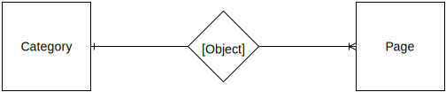
6.2 告诉Django你的数据库
在你创造任何模型之前都要对你的数据库进行设置.在Django1.7,当你创建了一个项目,Django会自动在settings.py里添加一个叫做DATABASES的字典.它包含如下.
DATABASES = {
'default': {
'ENGINE': 'django.db.backends.sqlite3',
'NAME': os.path.join(BASE_DIR, 'db.sqlite3'),
}
}
能看到默认用SQLite3作为后端数据库.SQLite是个轻量级的数据库对我们开发很有用.我们仅仅需要设置DATABASE_PATH里的NAME键值对.其他引擎需要USER,PASSWORD,HOST和PORT等关键字.
注意:对于教程来说使用SQLite引擎还好,但是对于部署你的应用来说可能不是最好的选择,或许应当使用其他更健壮和更大型的数据库引擎.Django同样支持像PostgreSQL和MySQL这样的流行数据库引擎.从 official Django documentation on Database Engines 获取更多细节.你可以查看关于SQLite的网站来选择是否使用SQLite引擎.
6.3 创建模型
让我们为Rango创建两个数据模型.
在rango/models.py里,我们定义两个继承自djnago.db.models.Model的类.这两个类分别定义目录和页面.定义Category和Page如下.
class Category(models.Model):
name = models.CharField(max_length=128, unique=True)
def __unicode__(self): #For Python 2, use __str__ on Python 3
return self.name
class Page(models.Model):
category = models.ForeignKey(Category)
title = models.CharField(max_length=128)
url = models.URLField()
views = models.IntegerField(default=0)
def __unicode__(self): #For Python 2, use __str__ on Python 3
return self.title
当你定义了一个模型,你需要制定可选参数的属性以及相关的类型列表.Django提供了许多内建字段.一些常用的如下.
CharField,存储字符数据的字段(例如字符串).max_length提供了最大长度.URLField,和CharField一样,但是它存储资源的URL.你也可以使用max_length参数.- 'IntegerField',存储整数.
DateField,存储Python的datetime.date.
查看Django documentation on model fields获取完整列表.
每个字段都有一个unique属性.如果设置为True,那么在整个数据库模型里它的字段里的值必须是唯一的.例如,我们上面定义的Category模型.name字段被设置为unique - 所以每一个目录的名字都必须是唯一的.
如果你想把这个字段作为数据库的关键字会非常有用.你可以为每个字段设置一个默认值(default='value'),也可以设置成NULL(null=True).
Django也提供了连接模型/表的简单机制.这个机制封装在3个字段里,如下.
ForeignKey, 创建1对多关系的字段类型.OneToOneField,定义一个严格的1对1关系字段类型.ManyToManyFeild,当以多对多关系字段类型.
从上面我们的例子,Page中category字段是ForeignKey类型.所以我们可以创建一个1对多关系的Category模型/表,这个Category会作为构造函数的一个参数.Django会自动的为每个模型表中创建ID字段.所以你不同为每个模型创建主键 - 它已经为你做好了!
注意:当创建模板的时候,最好创建
__unicode__()方法 - 等价于__strr__()方法.如果你不熟悉这两个方法,它们俩的作用和Java中toString()方法相似.__unicode__()方法为模型实例提供unicode表达式.例如我们的Category模型通过__unicode__()方法返回目录的名字 - 当你开始用Django的管理界面后这将会非常便利. 在你的类里加入__unicode__()方法对debug也非常有用.如果在Category模型中没有__unicode方法将会返回<Category: Category object>.我们只知道是一个目录,但是是哪一个呢?如果我们有__unicode__()方法我们将会返回<Category: python>,这里的python是目录的名字.
6.4 创建和迁移数据库
我们定义了模型,那么Django就能很好的自动创建我们的数据库.在先前的Django版本中我们用如下命令:
$ python manage.py syncdb
而在Django1.7中提供了一个迁移工具帮助我们修改更新在模块中改变的数据库.所以现在情况变得复杂些 - 但是主要的目的是当我们改变模型的时候我们不必删除它既可进行更新.
6.4.1 设置数据库并创建管理员
如果还没有设置数据库那么需要通过migrate命令来设立.
$ python manage.py migrate
Operations to perform:
Apply all migrations: admin, contenttypes, auth, sessions
Running migrations:
Applying contenttypes.0001_initial... OK
Applying auth.0001_initial... OK
Applying admin.0001_initial... OK
Applying sessions.0001_initial... OK
你是否还记得在settings.py文件里设置的INSTALLED_APPS列表,它会初始化创建这些app的图表,例如auth,admin等等.在你的项目根目录里会创建db.sqlite文件.
现在你可以创建一个管理员来管理数据库.
$ python manage.py createsuperuser
管理员账户将会在Django管理界面登陆时使用.按照提示输入用户名,邮箱地址和密码.注意要记住用户名和密码.
6.4.2 创建/上传模型/表
当你更改模型的时候,你需要通过makemigrations进行修改,所以对于rango,我们需要:
$ python manage.py makemigrations rango
Migrations for 'rango':
0001_initial.py:
- Create model Category
- Create model Page
如果你检查rango/migrations文件,你会发现会创建一个叫做0001_initial.py的python脚本.如果想要SQL命令去执行迁移,那么可以用下面的命令python manage.py sqlmigrate <app_name> <migration_no.我们上面的迁移数字是0001,所以我们输入python manage.py sqlmigrate rango 0001,让我们试试看.
现在让我们应用这些迁移(基于创建数据库图表).
$ python manage.py migrate
Operations to perform:
Apply all migrations: admin, rango, contenttypes, auth, sessions
Running migrations:
Applying rango.0001_initial... OK
警告:当你添加已存在的模型,你需要重复运行
python manage.py makemigrations <app_name>命令然后再运行python manage.py migrate.
你可能发现了我们的Category模块缺少一些我们要求的字段.我们将在稍后添加.
6.5 Django模型和Django Shell
在我们把注意力集中到Django管理界面之前,通过Django shell创建Django模型也是值得一试的 - 它对我们debug非常有用.下面我们将展示如何用这种方式来创建Category实例.
为了得到shell我们需要再一次调用Django项目根目录里的manage.py.
$ python manage.py shell
这个实例将会创建一个Python解析器并且载入你的项目的设置.你可以和模型进行交互.下面的命令展示了这一功能.注释里可以看到每个命令的功能.
# Import the Category model from the Rango application
>>> from rango.models import Category
# Show all the current categories
>>> print Category.objects.all()
[] # Returns an empty list (no categories have been defined!)
# Create a new category object, and save it to the database.
>>> c = Category(name="Test")
>>> c.save()
# Now list all the category objects stored once more.
>>> print Category.objects.all()
[<Category: test>] # We now have a category called 'test' saved in the database!
# Quit the Django shell.
>>> quit()
在例子中我们首先导入我们需要操作的模型.然后打印出存在的目录,在这里因为我们的图表是空所以输出也是空.然后创建并储存一个目录,打印.
注意:上面的例子只展示了Django shell一小部分功能.更多的可以看 official Django Tutorial to learn more about interacting with the model和official Django documentation on the list of available commands.
6.6 设置管理界面
Django最突出的一个特性就是它提供内建的网页管理界面,用来浏览和编辑存储在模型的数据,也可以与数据库图表交互.在settings.py文件里,注意到有一个默认安装的django.contib.adminapp,而且你的urls.py里也默认增加了admin/匹配.
开启Django服务:
$ python manage.py runserver
访问http://127.0.0.1:8000/admin/.可以用先前设置管理员账户的用户名和密码来登录Django管理界面.管理界面只包含Groups和Users图表以我们需要让Django包含rango模块.所以打开rango/admin.py输入如下代码:
from django.contrib import admin
from rango.models import Category, Page
admin.site.register(Category)
admin.site.register(Page)
上面代码会为我们在管理界面注册模型.如果我们想要其他模型,可以在admin.stie.register()函数里传递模型作为参数.
完成之后重新访问http://127.0.0.1:8000/admin/,你想回看到如下图案.
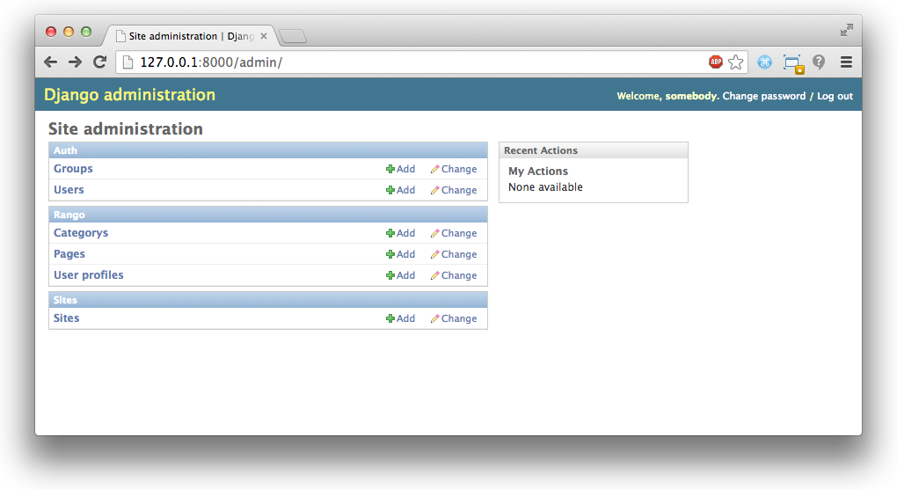
点击Categorys链接.这里我们能看见我们通过Django shell创建的test目录.我们可以非常方便的在这里创建,修改和删除目录和页面.同样你可以在Auth应用里添加User来增加登陆Django管理界面的用户.
注意:注意管理界面的排印错误(category而不是categories).这个问题可以通过在你的模型里添加元类并定义
verbose_name_plural属性来解决.查看 Django’s official documentation on models 获取更多细节.注意:这里的
admin.py文件只提供了一个简单的例子.还有许多炫酷的定制可以使用,比如说改变管理界面模型出现的方式.在本教程,我们只使用了最原始的界面.如果感兴趣请查看 official Django documentation on the admin interface .
6.7 创建Population Script
往数据库里输入数据会非常麻烦.许多开发者会随机的往数据库里输入测试数据.如果你在一个小的开发团队里,每个人都得传点数据.最好是写一个脚本而不是每个人单独的上传数据,这样就可以避免垃圾数据的产生.所以我们需要为你的数据库创建 population script.这个脚本自动的为你的数据库生成测试数据.
我们需要在Django项目的根目录里创建population script(例如<workspace>/tango_with_django_project/).创建populate_rango.py文件代码如下.
import os
os.environ.setdefault('DJANGO_SETTINGS_MODULE', 'tango_with_django_project.settings')
import django
django.setup()
from rango.models import Category, Page
def populate():
python_cat = add_cat('Python')
add_page(cat=python_cat,
title="Official Python Tutorial",
url="http://docs.python.org/2/tutorial/")
add_page(cat=python_cat,
title="How to Think like a Computer Scientist",
url="http://www.greenteapress.com/thinkpython/")
add_page(cat=python_cat,
title="Learn Python in 10 Minutes",
url="http://www.korokithakis.net/tutorials/python/")
django_cat = add_cat("Django")
add_page(cat=django_cat,
title="Official Django Tutorial",
url="https://docs.djangoproject.com/en/1.5/intro/tutorial01/")
add_page(cat=django_cat,
title="Django Rocks",
url="http://www.djangorocks.com/")
add_page(cat=django_cat,
title="How to Tango with Django",
url="http://www.tangowithdjango.com/")
frame_cat = add_cat("Other Frameworks")
add_page(cat=frame_cat,
title="Bottle",
url="http://bottlepy.org/docs/dev/")
add_page(cat=frame_cat,
title="Flask",
url="http://flask.pocoo.org")
# Print out what we have added to the user.
for c in Category.objects.all():
for p in Page.objects.filter(category=c):
print "- {0} - {1}".format(str(c), str(p))
def add_page(cat, title, url, views=0):
p = Page.objects.get_or_create(category=cat, title=title, url=url, views=views)[0]
return p
def add_cat(name):
c = Category.objects.get_or_create(name=name)[0]
return c
# Start execution here!
if __name__ == '__main__':
print "Starting Rango population script..."
populate()
虽然看起来有许多代码,但是非常简单.在文件开头我们定义了许多函数,代码会在底部开始执行 - 寻找if __name__ == '__main__'这一行开始.我们调用了populate()函数.
警告:当导入Django模块时确保已经导入了Django设置,并把环境变量
DJANGO_SETTINGS_MODULE设置为项目设置文件.然后调用django.setup()来导入django设置.如果不这么做就会引发一场.这就是为什么我们需要在导入设置之后才能导入Category和Page.
populate()函数负责调用add_cat()和add_page()函数,而这两个函数将会创建新的目录和页面.populate()创建页面和目录并存到数据库.最后我们在终端里输出页面和目录.
注意:我们使用
get_or_create()函数创建模型实例.我们可以用get_or_creat()函数来检查在数据库里是否存在.如果不存在就创建它.这将减少我们的代码而不是让我们自己检查.get_or_create()方法返回(object,created)元组.如果没有在数据库找到,那么这个object参数就是get_or_create()方法创造的实例.如果这个实体不存在,那么这个方法就返回和这个实体相符的实例.created是一个布尔值;如果get_or_create()创建模型实体的话它会返回true.[0]会返回object元组的第一个位置,这个其他编程语言一样,Python使用zero-based numbering. official Django documentation 可以查看get_or_vreate()方法的详细资料.
当保存退出以后,我们可以在DJango项目根目录用命令$ python populate_rango.py来执行脚本.
$ python populate_rango.py
Starting Rango population script...
- Python - Official Python Tutorial
- Python - How to Think like a Computer Scientist
- Python - Learn Python in 10 Minutes
- Django - Official Django Tutorial
- Django - Django Rocks
- Django - How to Tango with Django
- Other Frameworks - Bottle
- Other Frameworks - Flask
现在我们检查一下是否改变了数据库.重启Django服务,进入管理界面,查看新的目录和页面.如果点击Pages会看到下面.
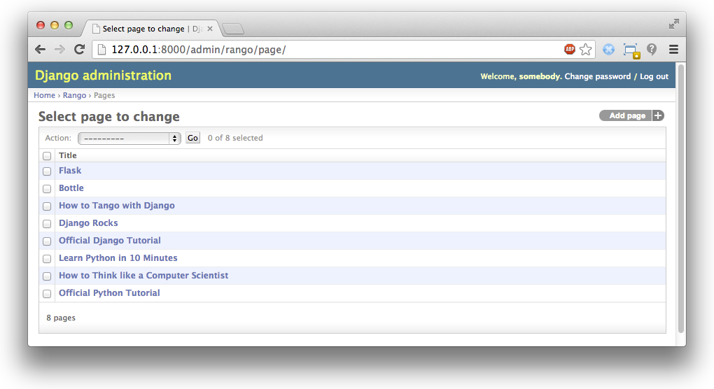
虽然需要花费一些时间来写population script,但是在团队协作中可以分享给每个人.而且在单元测试中会有用处.
6.8 基本流程
现在我们已经掌握处理Django模型的核心功能,是时候总结一下了.下面将分别为你呈现.
6.8.1 设置数据库
当开始新Django项目,需要先告诉Django你想使用的数据库(例如设置settings.py中的DATABASES).你也可以在admin.py文件里注册任何模型.
6.8.2 加入模型
分5步进行.
- 首先,在你的应用里的
models.py文件里创建新的模型. - 修改
admin.py注册你新加的模块. - 然后进行迁移
$ python manage.py sqlmigrate <app_name> - 使用
$ python manage.py migrate应用更改.这将会为你的模型在数据库里建立必要的结构. - 为你的新模型创建/修改population script.
总会有一些时候你不得不删除数据库.在这种情况下你需要运行migrate命令,然后是createsuperuser命令,为每个app执行sqlmigrate命令就可.
6.9 练习
现在已经完成这章,试着做下面的练习来巩固所学.
- 增加目录模型
views和likes属性并设置为0. - 为你的app/模型进行迁移.
- 更新 population script ,把Python目录设置成浏览128次和喜欢64次,Django目录浏览64次和喜欢32次,the Other Framenwork目录浏览32次,喜欢16次.
- 查看part two of official Django tutorial .它将会巩固你所学同时学习更多关于如何定制管理界面.
- 定制管理界面 - 当观看页面模型的时候它的目录,页面名和url.
6.9.1 提示
如果你需要一些帮助的话,下面的提示会帮助你.
- 修改
Category模型,增加views和likes,它们的字段为IntegerFields. - 修改
populate.py脚本里的add_cat函数,加入views和likes参数.一旦你可以获取目录c,你就可以通过c.views来修改浏览次数,likes也一样. - 为了定制管理界面,你需要修改
rango/admin.py文件,创建PageAdmin类,这个类继承自admin.ModelAdmin. - 在
PageAdmin类里,加入list_display = ('title', 'category', 'url'). - 最后注册
PageAdmin类到Django管理界面.需要修改admin.site.register(Page).在Rango的admin.py文件里修改成admin.site.register(Page, PageAdmin).
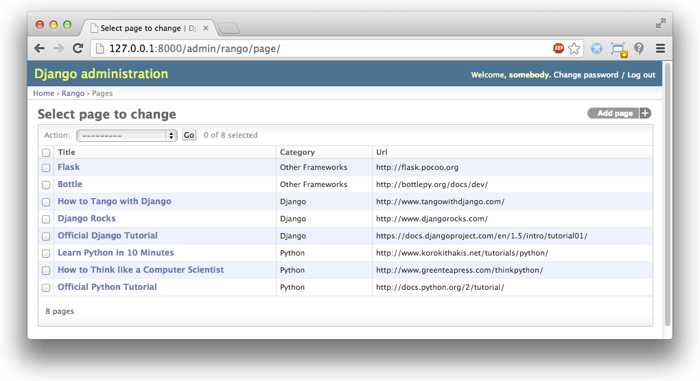
7 模型,模板和试图
现在我们已经建立了模型并且导入了一些数据,现在我们要把这些连一起.我们将会弄清楚如何在视图中访问数据以及如何通过模板展示数据.
7.1 基本流程:数据驱动页面
在Django中创建数据驱动页面必须执行以下5步.
- 首先,在你应用的
views.py文件中导入你要添加的模型. - 在视图里访问模型,导入你需要的数据.
- 把模型的数据传递给模板.
- 设置模板给用户呈现数据.
- 如果还没有映射URL,映射一下吧.
上面的步骤告诉你如何使用Django里的模型,视图和模板.
7.2 展示Rango主页上的目录
我们需要在rango的主页显示5个最多的目录.
7.2.1 导入需要的模型
为了达到目的,我们需要完成上面的步骤.首先,打开rango/view.py并导入rango的models.py文件的Category模块.
# Import the Category model
from rango.models import Category
7.2.2 修改index视图
有了第一步,我们需要修改index()函数.让我们回想一下,这个index()函数负责管理主页的视图.修改如下.
def index(request):
# Query the database for a list of ALL categories currently stored.
# Order the categories by no. likes in descending order.
# Retrieve the top 5 only - or all if less than 5.
# Place the list in our context_dict dictionary which will be passed to the template engine.
category_list = Category.objects.order_by('-likes')[:5]
context_dict = {'categories': category_list}
# Render the response and send it back!
return render(request, 'rango/index.html', context_dict)
这里我们做了第二步和第三步.首先,我们访问Category模型得到5个最多的目录.这里用order_by()方法对喜欢的数量进行降序排序 - 注意带着-.最后我们取前5个目录保存到category_list
当访问数据库结束,我们把这个列表(category_list)传给了字典context_dict.这个字典同时会作为render()的参数返回给模板.
警告:注意Category模型包含
likes字段.增添它的操作在前面章节的练习里,你需要完成它们.
7.2.3 修改index模板
修改完视图后,最后剩下的就是更改rango/index.html模板了.代码如下.
<!DOCTYPE html>
<html>
<head>
<title>Rango</title>
</head>
<body>
<h1>Rango says...hello world!</h1>
{% if categories %}
<ul>
{% for category in categories %}
<li>{{ category.name }}</li>
{% endfor %}
</ul>
{% else %}
<strong>There are no categories present.</strong>
{% endif %}
<a href="/rango/about/">About</a>
</body>
</html>
这里我们用了Django模板语言里的if和for控制语句.在页面的<body>里我们检查categories是否为空(例如,{% if categories %}).
如果不为空,会建立一个无序HTML列表(在<ul>标签里).for循环({% for category in categories %})会依次在<li>标签里打印出每个目录的名字({{ category.name }}).
如果不存在categories,将会输出There are no categories present..
作为模板语言,所有的命令都包含在{%和%}标签里,所有的变量都在{{和}}里.
如果访问 http://127.0.0.1:8000/rango/ ,如下图所示.
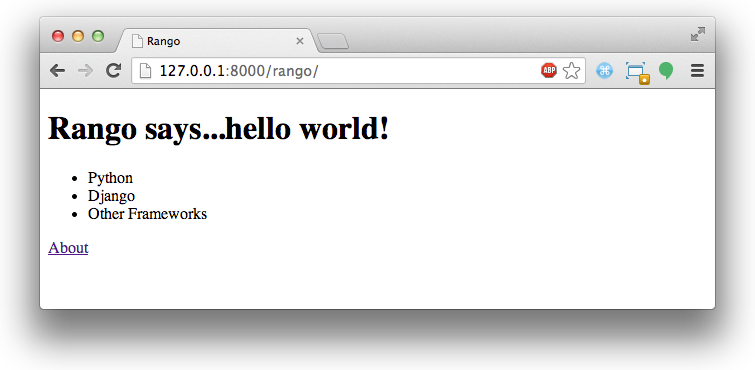
7.3 创建详细页面
通过Rango的详细描述,我们需要列出目录的每个页面.现在我们需要克服许多困难.我们需要创建一个新的视图作为参数.我们同事需要创建URL模式和URL字符串来对应每个目录的名字.
7.3.1 URL设计与映射
让我们着手解决URL问题.有一种方法是为我们的目录在URL中设立唯一的ID,我们可以创建像/rango/category/1/或者/rango/category/2/,这里的数字1和2就是它们的ID.但是这样做对我们来说不太好理解.尽管我们知道数字关联着目录,但我们怎么知道1和2代表哪个目录呢?用户不试一下就不会知道.
另一种方法就是用目录名作为URL./rango/category/Python/将会返回给我们关于Python的目录.这是一个简单的,可读的URL.
注意:对于网页来说,设计一个简洁的URL是只管重要的.更多细节请看 Wikipedia’s article on Clean URLs.
7.3.2 为Category表增加Slug字段
为了建立简洁的url我们需要在Category模型里增加slug字段.首先我们需要从django导入slugify函数,这个函数的作用是把空格用连字符代替,例如"how do i create a slug in django"将会转换成"how-do-i-create-a-slug-in-djang".
警告:虽然你能在URL中用空格,但是它们并不安全.更多细节查看IETF Memo on URLs.
接下来我们将会重写Category模型的save方法,我们将会调用slugify方法并更新slug字段.注意任何时候目录名称更改都会更改slug.像下面一样修改模型.
from django.template.defaultfilters import slugify
class Category(models.Model):
name = models.CharField(max_length=128, unique=True)
views = models.IntegerField(default=0)
likes = models.IntegerField(default=0)
slug = models.SlugField(unique=True)
def save(self, *args, **kwargs):
self.slug = slugify(self.name)
super(Category, self).save(*args, **kwargs)
def __unicode__(self):
return self.name
现在需要运行下面的命令更新模型和数据库.
$ python manage.py makemigrations rango
$ python manage.py migrate
因为我们slug没有设置默认值,而且模型中已经加入进数据,所以migrate命令将会给你两个选项.选择提供默认值选项并输入默认值''.它会马上进行修改.现在重新运行population脚本.因为每个目录都会执行save方法,所以重写的save方法将会被执行修改slug字段.运行Django服务,你讲会在管理界面看到修改的数据.
注意:这里原书会有错误,原因见http://stackoverflow.com/questions/27788456/integrityerror-column-slug-is-not-unique ,修改见 https://github.com/leifos/tango_with_django/issues/19
在管理界面你或许希望在填写目录名的时候自动填充slug字段.按照下面的方法.
from django.contrib import admin
from rango.models import Category, Page
# Add in this class to customized the Admin Interface
class CategoryAdmin(admin.ModelAdmin):
prepopulated_fields = {'slug':('name',)}
# Update the registeration to include this customised interface
admin.site.register(Category, CategoryAdmin)
admin.site.register(Page)
在管理界面尝试增加新的目录.看到了吧!现在我们可以加入slug字段用作我们的url.
7.3.3 目录页面流程
我们设计完URL以后,看看我们接下来的步骤.
- 在
rango/views.py导入Page模型. - 在
rango/views.py中创建category视图 - 这个category视图将会增加一个category_name_url参数来存储目录名.- 我们需要一些函数来帮助我们对
category_name_url进行编码.
- 我们需要一些函数来帮助我们对
- 创建一个新模板,
templates/rango/category.html. - 修改
rango/urls.py里的urlpatterns映射新的category视图.
同样我们需要修改index()视图和index.html模板来提供到目录页面的链接.
7.3.4 目录视图
在rango/views.py中,我们需要导入Page模型.如下.
from rango.models import Page
下面我们将会加入我们的category()视图:
def category(request, category_name_slug):
# Create a context dictionary which we can pass to the template rendering engine.
context_dict = {}
try:
# Can we find a category name slug with the given name?
# If we can't, the .get() method raises a DoesNotExist exception.
# So the .get() method returns one model instance or raises an exception.
category = Category.objects.get(slug=category_name_slug)
context_dict['category_name'] = category.name
# Retrieve all of the associated pages.
# Note that filter returns >= 1 model instance.
pages = Page.objects.filter(category=category)
# Adds our results list to the template context under name pages.
context_dict['pages'] = pages
# We also add the category object from the database to the context dictionary.
# We'll use this in the template to verify that the category exists.
context_dict['category'] = category
except Category.DoesNotExist:
# We get here if we didn't find the specified category.
# Don't do anything - the template displays the "no category" message for us.
pass
# Go render the response and return it to the client.
return render(request, 'rango/category.html', context_dict)
和index()视图一样我们的新视图也要执行同样的基本步骤.我们需要定义一个字典,然后尝试从模型中导出数据,并把数据添加到字典里.我们通过参数category_name_slug的值来决定是哪个目录.如果在Category模型中找到目录,我们就会把context_dict字典传递给相关页面.
7.3.5 目录模板
现在为我们的新视图创建模板.在<workspace>/tango_with_django_project/templates/rango/目录创建category.html.
<!DOCTYPE html>
<html>
<head>
<title>Rango</title>
</head>
<body>
<h1>{{ category_name }}</h1>
{% if category %}
{% if pages %}
<ul>
{% for page in pages %}
<li><a href="{{ page.url }}">{{ page.title }}</a></li>
{% endfor %}
</ul>
{% else %}
<strong>No pages currently in category.</strong>
{% endif %}
{% else %}
The specified category {{ category_name }} does not exist!
{% endif %}
</body>
</html>
上面的HTML代码同样给我们展示了如何把数据通过字典传递给模板.我们用到了category_name变量和category和pages对象.如果category在模板上下文并没有定义,或者在数据库并没有发现这个目录,那么就会提示一个友好的错误信息.相反的话如果存在,我们将会检查pages.如果pages没有被定义或者不存在元素,我们同样也会呈现友好的错误提示.否则的话目录里包含的页面就会写入HTML李彪.对于在pages列表的每个页面我们都会展示它的title和url.
注意:Django模板包含
{% if %}标签 - 是检测对象是否在模板上下文的好方法.尝试在你的代码里使用以减少错误的发生.
7.3.6 参数化的URL映射
现在让我们来看看如何把category_name_url参数值传递给category().我们需要修改rango的urls.py文件和urlpatterns元组.
urlpatterns = patterns('',
url(r'^$', views.index, name='index'),
url(r'^about/$', views.about, name='about'),
url(r'^category/(?P<category_name_slug>[\w\-]+)/$', views.category, name='category'),) # New!
你能看到当正则表达式r'^(?P<category_name_slug>\w+)/$匹配时会调用view.category()函数.我们的正则表达式会匹配URL斜杠前所有的字母数字(例如 a-z, A-Z, 或者 0-9)和连字符(-).然后把这个值作为category_name_slug参数传递给views.category(),这个参数必须在强制的request参数之后.
注意:当你希望参数化URL时,一定要确保你的URL模式会正确匹配参数.为了更进一步的了解,让我们看一看上面的例子.
url(r'^category/(?P<category_name_slug>[\w\-]+)/$', views.category, name='category')我们可以从这里找到在category/和后面的/之间的字符串,并把它作为参数category_name_slug传递给views.category()参数.例如,URLcategory/python-books/将会返回的category_name_slug参数是python-books. 需要知道的十,所有的视图函数必须带至少一个参数.这个参数是request- 它会提供HTTP请求用户的相关信息。当参数化URL时,可以给视图添加已经命名德尔参数.使用上面的例子,我们的category视图是这样的.def category(request, category_name_slug):附加参数的位置不重要,重要的是在URL模式中定义的参数名称.注意如何为我们的视图在URL模式匹配中定义category_name_slug参数.注意:正则表达式虽然开始看起来比较复杂,但是网上有许多资料. This cheat sheet将会解决你的疑问.
7.3.7 修改index模板
虽然我们的视图已经建立了,但是还要做的工作许多.我们的index模板需要修改并提供给用户category列表.我们可以通过slug为index.htnl模板中添加目录页面.
<!DOCTYPE html>
<html>
<head>
<title>Rango</title>
</head>
<body>
<h1>Rango says..hello world!</h1>
{% if categories %}
<ul>
{% for category in categories %}
<!-- Following line changed to add an HTML hyperlink -->
<li><a href="/rango/category/{{ category.slug }}">{{ category.name }}</a></li>
{% endfor %}
</ul>
{% else %}
<strong>There are no categories present.</strong>
{% endif %}
</body>
</html>
这里为每个列表元素(<li>)增加一个HTML超链接(<a>).超链接有一个href属性,我们用{{ category.slug}}来定义目标URL.
7.3.8 Demo
让我们访问rango主页.你将会看到列出所有的目录.这些目录都是可以点击的链接.点击Python将会带你王文Python目录视图,如下图所示.如果你看到了像Official Python Tutorial列表,说明你已经成功了建立视图.试着访问不存在的目录,比如/rango/category/computers,你将会看到页面不存在的信息.
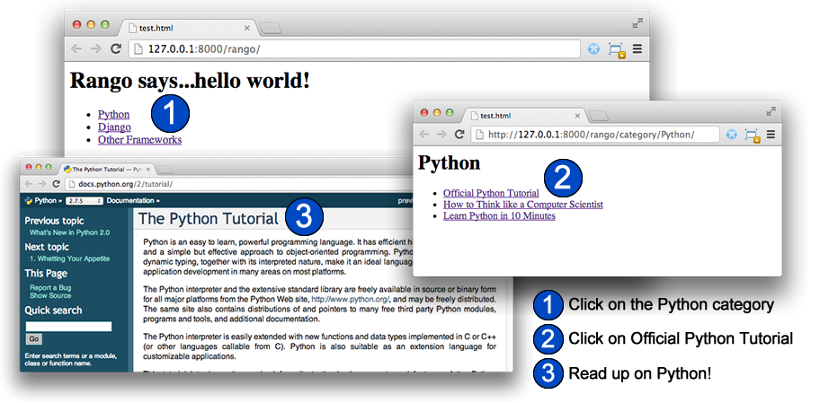
7.4 练习
为了巩固所学请完成下面的练习吧.
- 修改index页面也包含5个最多访问的页面.
- 查看part three of official Django tutorial
7.4.1 提示
修改population脚本,为每个页面增加浏览次数.
8 有趣的表单
到目前为止我们仅仅是通过视图和模板来表现数据.在本章,我们将会学习如何通过web表单来获取数据.Django包含一些表单处理功能,它使在web上收集用户信息变得简单.通过Django’s documentation on forms我们知道表单处理功能包含以下:
- 显示一个HTML表单自动生成的窗体部件(比如一个文本字段或者日期选择器).
- 用一系列规则检查提交数据.
- 验证错误的情况下将会重新显示表单.
- 把提交的表单数据转化成相关的Python数据类型.
使用Django表单功能最大的好处就是它可以节省你的大量时间和HTML方面的麻烦.这部分我们将会注重如何通过表单让用户增加目录和页面.
8.1 基本流程
基本步骤包括创建表单和允许用户通过表单输入数据.
- 在Django应用目录创建
forms.py目录来存储和表单相关的类. - 为每个使用表单的模块创建
ModelForm类. - 定制你的表单.
- 创建或修改表单的视图 - 包括展示表单,存储表单数据,当用户输入错误数据(或者根本没有输入)时显示错误标志.
- 创建或修改你表单的模板.
- 为新视图增加
urlpattern映射(如果你创建了一个新的).
这个流程将会比先前的都复杂些,我们创建的视图也会非常复杂.但是孰能生巧,如果多练几次就非常好掌握了.
8.2 页面和目录表单
首先,我们需要在rango应用目录里黄建叫做forms.py文件.尽管这步我们并不需要,我们可以把表单放在models.py里,但是这将会使我们的代码简单易懂.
8.2.1 创建ModelForm类
在rango的forms.py模块里我们将会创建一些继承自ModelForm的类.实际上,ModelForm是一个帮助函数,它允许你在一个已经存在的模型里创建Django表单.因为我们定义了两个模型(Category和Page),我们将会分别为它们创建ModelForms.
在rango/forms.py添加下面代码:
from django import forms
from rango.models import Page, Category
class CategoryForm(forms.ModelForm):
name = forms.CharField(max_length=128, help_text="Please enter the category name.")
views = forms.IntegerField(widget=forms.HiddenInput(), initial=0)
likes = forms.IntegerField(widget=forms.HiddenInput(), initial=0)
slug = forms.CharField(widget=forms.HiddenInput(), required=False)
# An inline class to provide additional information on the form.
class Meta:
# Provide an association between the ModelForm and a model
model = Category
fields = ('name',)
class PageForm(forms.ModelForm):
title = forms.CharField(max_length=128, help_text="Please enter the title of the page.")
url = forms.URLField(max_length=200, help_text="Please enter the URL of the page.")
views = forms.IntegerField(widget=forms.HiddenInput(), initial=0)
class Meta:
# Provide an association between the ModelForm and a model
model = Page
# What fields do we want to include in our form?
# This way we don't need every field in the model present.
# Some fields may allow NULL values, so we may not want to include them...
# Here, we are hiding the foreign key.
# we can either exclude the category field from the form,
exclude = ('category',)
#or specify the fields to include (i.e. not include the category field)
#fields = ('title', 'url', 'views')
TODO(leifos):值得注意的是Django1.7+需要通过fields指定包含的字段,或者通过exclude指定排除的字段.
Django为我们提供了许多定制表单的方法.在上面的例子中,我们指定了我们想要展示字段的窗口部件.例如在我们的PageForm类中,我们为title字段定义forms.CharField,为url字段定义forms.URLField.两个字段都为用户提供文本输入.注意字段里包含max_length参数 - 它定义字段最大长度.可以返回第6章或者rango的models.py文件查看.
可以看到在每个表单都包含浏览和喜欢的IntegerField字段.我们可以在参数里设置widget=forms.Hiddeninput()来隐藏窗口组件,设置initial=0来设置默认值为0.这是不用用户去自己设置字段为0的一种方法.然而可以在PageForm看到,尽管我们隐藏了字段,但是我们还是得在表单里包含字段.如果fields排除了views,那么表单将不包含字段(尽管已经定义了)而且将不会返回给模型0值.由于模型建立的不同有可能会引起一个错误.如果在模型里我们把这些字段定义为default=0那么我们可以自动的返回默认值 - 从而避免not null错误.在这种情况下就不需要隐藏字段了.在表单里我们也包含了slug字段并设置为widget=forms.HiddenInput()值,这里我们并没给他设置初始值或者默认值,而是设置为不需要(required=False).这是因为我们的模型将会负责填充字段.实际上,当你定义模型和表单时一定要注意表单一定要包含和传递所有的数据.
除了CharField和IntegerField组件还有许多.例如,Django提供了EmailField(e-mail地址入口),ChoiceField(输入按钮)和DateField(日期/时间入口).有许多其他不同种类字段可以使用,他们可以为你检查执行错误(例如是否提供了一个有效的整数?).强烈建议你看一下official Django documentation on widgets来定制自己的组件.
或许继承ModelForm最大的作用就是需要定义我们要给哪个模型提供表单.我们通过Meta类来实现.在Meta类设置model属性为我们需要使用的模型.例如CategoryForm类引用Category模型.这对Django创建我们想要的模型表单至关重要.它还可以帮助我们在存储和展示表单数据时获取错误.
我们也可以用Meat类来定义我们希望包括的表单字段.用fields元组来定义所需包含的字段.
注意:强烈建议查看 official Django documentation on forms来获取更多.
8.2.2 创建和增加目录视图
创建CategoryForm类以后,我们需要创建一个新的视图来展示表单并传递数据.在rango/views.py中增加如下代码.
from rango.forms import CategoryForm
def add_category(request):
# A HTTP POST?
if request.method == 'POST':
form = CategoryForm(request.POST)
# Have we been provided with a valid form?
if form.is_valid():
# Save the new category to the database.
form.save(commit=True)
# Now call the index() view.
# The user will be shown the homepage.
return index(request)
else:
# The supplied form contained errors - just print them to the terminal.
print form.errors
else:
# If the request was not a POST, display the form to enter details.
form = CategoryForm()
# Bad form (or form details), no form supplied...
# Render the form with error messages (if any).
return render(request, 'rango/add_category.html', {'form': form})
新的add_category()视图增加几个表单的关键功能.首先,检查HTTP请求方法是GET还是POST.我们根据不同的方法来进行处理 - 例如展示一个表单(如果是GET)或者处理表单数据(如果是POST) -所有表单都是相同URL.add_category()视图处理以下三种不同情况:
- 为添加目录提供一个新的空白表单;
- 保存用户提交的数据给模型,并转向到Rango主页;
- 如果发生错误,在表单里展示错误信息.
注意:
GET和POST是什么意思?他们是HTTP请求的两个不同类型. 一个HTTPGET用来请求指定的资源.换句话说,不管他是网页,图片还是文件,我们都可以用HTTPGET来获取. 相反的HTTPPOST用来提交客户端网页浏览器的数据.这种请求类型用来提交HTML表单. * 一个HTTPPOST也可能用来在服务器上创建新的资源(例如新的数据库条目),以后可以通过HTTPGET请求.
Django表单处理数据是用过用户浏览器的HTTPPOST请求实现.它不仅可以存储表单数据,而且还能对每个表单字段自动生成错误信息.这就意味着Django将不会存储表单的错误信息以保护数据库的数据完整性.例如如果目录名为空的话将会返回不能为空的错误.
注意到render()中将会调用add_category.html模板,这个模板包含表单和页面.
8.2.3 创建增加目录模板
让我们创建templates/rango/add_category.html文件.
<!DOCTYPE html>
<html>
<head>
<title>Rango</title>
</head>
<body>
<h1>Add a Category</h1>
<form id="category_form" method="post" action="/rango/add_category/">
{% csrf_token %}
{% for hidden in form.hidden_fields %}
{{ hidden }}
{% endfor %}
{% for field in form.visible_fields %}
{{ field.errors }}
{{ field.help_text }}
{{ field }}
{% endfor %}
<input type="submit" name="submit" value="Create Category" />
</form>
</body>
</html>
好吧,这些代码是干什么的?可以看到在<body>标签中我们设置了一个<form>元素.再来看看<form>中的元素,所有表单中的数据将会用POST请求发送给/rango/add_category/(method属性大小写不敏感,所以可以写成POST或是post - 两者功能一样).在表单里我们有两个循环 - 一个控制表单隐藏字段,另一个则是可见字段 - 可见字段的设置是在ModelForm的Meta类中设置fields属性来实现的.这些循环帮助我们生成HTML标记.对于表单的可见字段,我们也设置一个特殊区域来展示错误信息,同时设置帮助文本告诉用户那需要输入什么.
注意:使用隐藏和可见表单字段是因为HTTP是无状态协议.你不可以在两个不同的HTTP请求之间保持状态,因为实现起来相当复杂.为了摆脱这个限制,创建隐藏的HTML表单字段可以使web应用传递给用户HTML表单重要的数据,只有用户提交的时候才会返回数据.
可能你也注意到了代码{% csrf_token %},这是跨站请求伪造令牌,有助于保护我们提交表单的HTTPPOST方法的安全.Django框架要求使用CSRFtoken.如果忘记在你的表单里包含CSRF令牌,有可能会在提交表单时遇到错误.查看 official Django documentation on CSRF tokens 以获取更多信息.
8.2.4 映射增加目录视图
现在我们需要映射add_category()视图.在模板里我们使用/rango/add_category/URL来提交.所以我们需要修改rango/urls.py的urlpattterns.
urlpatterns = patterns('',
url(r'^$', views.index, name='index'),
url(r'^about/$', views.about, name='about'),
url(r'^add_category/$', views.add_category, name='add_category'), # NEW MAPPING!
url(r'^category/(?P<category_name_slug>[\w\-]+)/$', views.category, name='category'),)
在这里顺序并不重要.更多内容需要查看official Django documentation on how Django process a request.我们增加的URL是/rango/add_category/.
8.2.5 修改主页内容
作为最后一步,让我们在首页里加入链接.修改rango/index.html文件,在</body>前添加如下代码.
<a href="/rango/add_category/">Add a New Category</a><br />
8.2.6 Demo
现在试一试!启动Django服务,进入http://127.0.0.1:8000/rango/.用新加的链接跳转到增加目录页面,然后增加页面.下图是增加目录和首页截图.
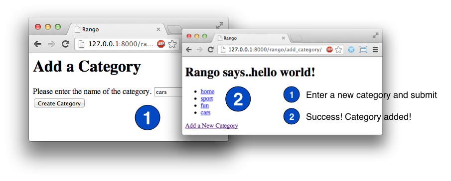
注意:如果你增加许多目录,它们有可能不会出现在首页,这是因为我们紧紧展示5个目录.如果登录管理界面你就能看到所有输入的目录了.#TODO
8.2.7 清理表单
记得我们Page模型有一个url属性设置为URLField类型.在相应的HTML表单,Django希望任何文本输入的URL字段是一个完整的URL.然而,用户能发现输入像http://www.url.com这种形式有些繁琐 - 确实,用户 may not even know what forms a correct URL!
设想有时候用户输入并不是一定正确,我们可以重写ModelForm模块里clean()方法.这个方法会在表单数据存储到模型实例之前被调用,所以它可以让我们验证甚至修改用户输入的数据.在我们上面的例子中,我们可以检查url字段的值是否以http://开头 - 如果不是我们可以在用户前面添加上http://.
class PageForm(forms.ModelForm):
...
def clean(self):
cleaned_data = self.cleaned_data
url = cleaned_data.get('url')
# If url is not empty and doesn't start with 'http://', prepend 'http://'.
if url and not url.startswith('http://'):
url = 'http://' + url
cleaned_data['url'] = url
return cleaned_data
在clean()方法里.
- 表单数据的字典从
ModelForm的cleaned_data属性获取. - 你希望检查的表单字段可以在
cleaned_data字典中获取.使用.get()字典方法获取表单值.如果用户没有表单字段,那么cleaned_data字典就没有这项.在这种情况下.get()会返回None而不是引发异常.浙江会是你的代码更加简洁! - 处理你希望处理的表单字段.如果输入了一个值,检查这个值.如果不是你希望的值,你可以在存储到
cleaned_data字典之前增加一些逻辑来修改这个值. - 必须每次都是以返回
cleaned_data字典来结束clean()方法.如果没有将会得到错误提示.
这个小例子说明如何在表单数据存储之前进行修改.这是非常方便的,尤其是有一些字段需要设定默认值时 - 或者表单中的数据发生了丢失.
注意:重写方法是Django框架提供给我们增加应用额外功能的一种优雅的方法.就像
ModelForm模块中clean()方法一样,Django提供了许多安全的方法可以供你重写.检查 the Official Django Documentation on Models以获取更多信息.
8.3 练习
练习下面题目巩固所学.
- 当在增加目录表单输入空值将会发生什么?
- 增加一个已存在的目录会发生什么?
- 访问不存在的目录会发生什么?
- 当用户访问一个不存在的目录时如何优雅的处理?
- 查看 part four of the official Django Tutorial
8.3.1 创建增加页面视图,模板和URL映射
下一步是要求用户对于给出的目录增加页面.为了时间这个,我们需要重复上面相同的流程 - 创建一个新的试图(add_page()),一个新的模板(rango/add_page.html),URL映射和在目录页面增加一个链接.这里给出一点提示.
from rango.forms import PageForm
def add_page(request, category_name_slug):
try:
cat = Category.objects.get(slug=category_name_slug)
except Category.DoesNotExist:
cat = None
if request.method == 'POST':
form = PageForm(request.POST)
if form.is_valid():
if cat:
page = form.save(commit=False)
page.category = cat
page.views = 0
page.save()
# probably better to use a redirect here.
return category(request, category_name_slug)
else:
print form.errors
else:
form = PageForm()
context_dict = {'form':form, 'category': cat}
return render(request, 'rango/add_page.html', context_dict)
8.3.2 提示
- 修改
category()视图,把category_name_slug加入进视图的context_dict字典. - 修改
category.html添加/rango/category/<category_name_url>/add_page/链接. - 确保只有请求的目录存在时才会出现链接 -页面存在或不存在皆可.例如,在模板用
{% if category %} .... {% else %} A category by this name does not exist {% endif %}. - 在
rangp/urls.py修改URL映射.
9 用户验证
教程的下一部分将教会你Django的用户验证机制.我们将会使用Django标准包django.contrib.auth的auth应用.通过 Django’s official documentation on Authentication,应用包含下面几方面.
- 用户.
- 权限:一系列的二进制标志(例如 yes/no)决定用户可以做或不可以做什么.
- 群组:为不止一个用户提供权限的方法.
- 用户登录的表单和视图工具,还有限制内容.
在用户验证方面Django可以做很多.我们将从基础开始学习.这将非常有利于建立使用它们的信心和它们运行的理念.
9.1 设置验证
在你使用Django的验证之前,你需要确定在你的Rango项目的settings.py文件里已经设置了相关内容.
在settings.py文件里找到INSTALLED_APPS元组,检查django.contrib.auth和django.contrib.contenttypes是否在元组里.
INSTALLED_APPS = (
'django.contrib.admin',
'django.contrib.auth',
'django.contrib.contenttypes',
'django.contrib.sessions',
'django.contrib.messages',
'django.contrib.staticfiles',
'rango',
)
django.contrib.auth为Django提供访问认证系统,django.contrib.contenttypes可以通过认证的应用程序来跟踪安装的数据库模型.
注意:如果你需要在
INSTALLED_APPS元组里添加auth应用,你需要用命令python manage.py migrate来进行更新数据库.
密码默认将会用 PBKDF2 algorithm进行储存,它可以安全的保存你用户的数据.在 official Django documentation on how django stores passwords你可以了解到更多,文档还提供了使用不同的哈希算法来提高安全等级.
如果你希望控制使用哪种哈希算法,你需要在settings.py里加入PASSWORD_HASHERS元组:
PASSWORD_HASHERS = (
'django.contrib.auth.hashers.PBKDF2PasswordHasher',
'django.contrib.auth.hashers.PBKDF2SHA1PasswordHasher',
)
Django将会使用PASSWORD_HASERS里的第一个哈希算法(例如 settings.PASSWORD_HASHERS[0]).如果想要获取更多的安全的哈希算法,可以用pip install bcrypt来安装Bcrypt(查看 https://pypi.python.org/pypi/bcrypt/ ),然后在PASSWORD_HASHERS设置如下:
PASSWORD_HASHERS = (
'django.contrib.auth.hashers.BCryptSHA256PasswordHasher',
'django.contrib.auth.hashers.BCryptPasswordHasher',
'django.contrib.auth.hashers.PBKDF2PasswordHasher',
'django.contrib.auth.hashers.PBKDF2SHA1PasswordHasher',
)
然而在默认情况下你不需要修改PASSWORD_HASHERS,Django默认添加django.contrib.auth.hashers.PBKDF2PasswordHasher.
9.2 用户模型
Django认证系统最重要的部分就是User对象,它位于django.contrib.auth.models.User.一个User对象代表了和Django应用交互的用户. Django documentation on User objects 有详尽的描述.
User模型主要有5个属性.它们是:
- 账户的用户名;
- 账户密码;
- 用户邮箱地址;
- 用户名;
- 用户姓;
模型也有其他一些属性像is_active(决定账户是活动还是非活动状态).查看official Django documentation on the user model,这里有完整的User模型属性列表.
9.3 增加用户属性
如果你希望在User模型里加入其他属性,你需要创建一个和User模型相关的模型.对于我们的Rango应用,我们希望为我们的用户增加两个属性.我们希望包含:
URLField,允许用户写明自己的网站;ImageField,允许用户在它们的档案里添加图片.
可以再Rango的models.py文件里增加模型.让我们加入UserProfile模型:
class UserProfile(models.Model):
# This line is required. Links UserProfile to a User model instance.
user = models.OneToOneField(User)
# The additional attributes we wish to include.
website = models.URLField(blank=True)
picture = models.ImageField(upload_to='profile_images', blank=True)
# Override the __unicode__() method to return out something meaningful!
def __unicode__(self):
return self.user.username
注意我们在User模型里使用一对一关系.因为我们使用了默认User模型,我们需要在models.py文件中导入.
from django.contrib.auth.models import User
在这里我们还可以直接继承User模型来增加这些字段.但是因为其他应用也可能需要存取User模型,所以这里不建议使用继承,而是使用一对一关系来代替.
对于Rango我们已经增加了两个字段来完善用户档案,还提供了一个__unicode__()方法返回实例名称.
对于website和picture两个字段,我们都设置了blank=True.它会使所有的字段都为空,意味着用户不必为每一个都设置字段值.
注意ImageField字段有一个upload_to属性.这个属性值连接着MEDIA_ROOT设置用来提供上传文档图片的路径.例如,MEDIA_ROOT设置为<workspace>/tango_with_django_project/media/,那么upload_to=profile_imges将会使图片保存在<workspace>/tango_with_django_project/media/profile_images/目录.
警告:Django
ImageField使用python图片库(PIL).返回到第3章,我们在安装Django时已经讲过如何安装PIL.如果还没有安装现在就可以安装了.如果你没有安装PIL,那么将会遇到pil模块不能找到的错误!
定义完UserProfile模型,我们需要修改Rango的admin.py文件使管理界面包含UserPrifile模型.在admin.py文件里添加如下.
from rango.models import UserProfile
admin.site.register(UserProfile)
注意:我们在修改模型后需要更新数据库.在终端里运行
$ python manage.py makemigrations rango来为UserProfile模型创建迁移脚本.然后运行$ python manage.py migrate.
9.4 创建用户注册视图和模板
用户认证已经处理完毕,我们现在需要让用户在网站上进行注册.我们将通过创建新视图和模板来达到这个目的.
注意:这里有许多现成的用户注册包可以使用,它们大大的减少创建注册和表单的繁琐程度.然而使用这样的应用对于了解内部机制是非常好的.它将会使你加深对表单,扩展用户模型和上传媒体的理解.
为用户提供注册服务我们需要以下几步:
- 创建
UserForm和UserProfileForm. - 增加创建新用户视图.
- 增加展示
UserForm和UserProfileForm的模板. - 映射URL.
- 在主页放置注册页链接
9.4.1 创建UserForm和UserProfileForm
在rango/forms.py中,我们需要创建两个继承自forms.ModelForm的类.一个是为User模型创建的,一个是为UserProfile创建的.这两个继承自ModelForm的类给我们提供展示HTML表单所需要的表单字段.
在rango/forms.py文件,让我们创建这两个类.
class UserForm(forms.ModelForm):
password = forms.CharField(widget=forms.PasswordInput())
class Meta:
model = User
fields = ('username', 'email', 'password')
class UserProfileForm(forms.ModelForm):
class Meta:
model = UserProfile
fields = ('website', 'picture')
注意到在两个类中我们都加入了Meta类.在Meta类中所有定义都会被当做它的附加属性.每个Meta至少包含一个model字段,它可以和模型之间关联.例如在我们的UserForm类中就关联了User模型.在Django1.7中你可以用fields或者exclude来定义你需要展示的字段.
这里我们仅仅需要展示User模型的username,email和password字段,和UserProfile模型的website和picture字段.当用户注册的时候我们需要连接UserPrifile模型的user字段.
看到了吧UserForm包含一个定义password属性.当User模型实例默认包含password属性时,HTML表单元素将不会隐藏密码.如果用户输入密码,那么这个密码就会可见.所以我们修改password属性作为CharField实例并使用PasswordInput()组建,这时用户输入就会被隐藏.
最后,记得在forms.py模块顶部包含下面引用!
from django import forms
from django.contrib.auth.models import User
from rango.models import Category, Page, UserProfile
9.4.2 创建register()视图
下面我们处理表单和表单输入的数据.在Rango的views.py文件,加入下面视图函数:
from rango.forms import UserForm, UserProfileForm
def register(request):
# A boolean value for telling the template whether the registration was successful.
# Set to False initially. Code changes value to True when registration succeeds.
registered = False
# If it's a HTTP POST, we're interested in processing form data.
if request.method == 'POST':
# Attempt to grab information from the raw form information.
# Note that we make use of both UserForm and UserProfileForm.
user_form = UserForm(data=request.POST)
profile_form = UserProfileForm(data=request.POST)
# If the two forms are valid...
if user_form.is_valid() and profile_form.is_valid():
# Save the user's form data to the database.
user = user_form.save()
# Now we hash the password with the set_password method.
# Once hashed, we can update the user object.
user.set_password(user.password)
user.save()
# Now sort out the UserProfile instance.
# Since we need to set the user attribute ourselves, we set commit=False.
# This delays saving the model until we're ready to avoid integrity problems.
profile = profile_form.save(commit=False)
profile.user = user
# Did the user provide a profile picture?
# If so, we need to get it from the input form and put it in the UserProfile model.
if 'picture' in request.FILES:
profile.picture = request.FILES['picture']
# Now we save the UserProfile model instance.
profile.save()
# Update our variable to tell the template registration was successful.
registered = True
# Invalid form or forms - mistakes or something else?
# Print problems to the terminal.
# They'll also be shown to the user.
else:
print user_form.errors, profile_form.errors
# Not a HTTP POST, so we render our form using two ModelForm instances.
# These forms will be blank, ready for user input.
else:
user_form = UserForm()
profile_form = UserProfileForm()
# Render the template depending on the context.
return render(request,
'rango/register.html',
{'user_form': user_form, 'profile_form': profile_form, 'registered': registered} )
看起来是不是很难啊?可能一开始看起来比较复杂,但其实不然.和我们前面add_category()视图差不多,仅仅添加了两个不同的ModelForm实例 - 一个是User模型的,另一个是UserProfile模型的.如果用户上传图像我们还得需要处理它们.
我们还需要创建两个模型实例之间的连接.创建新的User模型实例后,我们需要用profile.user = user把它关联到UserProfile实例.我们在已经在9.4.1隐藏的UserProfileForm表单里填充了user属性.
9.4.3 创建注册模板
现在我们创建rang/register.html加入如下代码:
<!DOCTYPE html>
<html>
<head>
<title>Rango</title>
</head>
<body>
<h1>Register with Rango</h1>
{% if registered %}
Rango says: <strong>thank you for registering!</strong>
<a href="/rango/">Return to the homepage.</a><br />
{% else %}
Rango says: <strong>register here!</strong><br />
<form id="user_form" method="post" action="/rango/register/"
enctype="multipart/form-data">
{% csrf_token %}
<!-- Display each form. The as_p method wraps each element in a paragraph
(<p>) element. This ensures each element appears on a new line,
making everything look neater. -->
{{ user_form.as_p }}
{{ profile_form.as_p }}
<!-- Provide a button to click to submit the form. -->
<input type="submit" name="submit" value="Register" />
</form>
{% endif %}
</body>
</html>
这个HTML模板使用registered变量来检测注册是否成功.当registered为False时模板会展示注册表单 - 否则,除了标题外它只会展示一条成功信息.
警告:你可能注意到在
<form>元素里的enctype属性.当你希望用户通过表单上传文件时,必须把enctype设置成multipart/form-data.这个属性会让你的浏览器以特定的方式把表单数据返回给服务器.实际上,你的文件会被分成一块块的传输.想了解更多查看 this great Stack Overflow answer.你也应当记得加入CSRF令牌.确保在你的<form>属性里包含{% csrf_token %}.
9.4.4 视图register()的URL映射
现在为我们的新视图加入URL映射.在rango/urls.py文件里修改urlpatterns元组如下:
urlpatterns = patterns('',
url(r'^$', views.index, name='index'),
url(r'^about/$', views.about, name='about'),
url(r'^category/(?P<category_name_slug>\w+)$', views.category, name='category'),
url(r'^add_category/$', views.add_category, name='add_category'),
url(r'^category/(?P<category_name_slug>\w+)/add_page/$', views.add_page, name='add_page'),
url(r'^register/$', views.register, name='register'), # ADD NEW PATTERN!
)
新加入的模式的URLrango/register/指向register()视图.
9.4.5 链接在一起
最后,我们需要在主页index.html模板里加入链接.在添加目录链接后加入下面链接.
<a href="/rango/register/">Register Here</a>
9.4.6 Demo
现在你可以点击Register Here超链接进入到注册页面.现在试试看!启动你的Django服务试着注册一个账户.如果你愿意可以上传一个个人图片.你的注册表单看起来像下面一样.
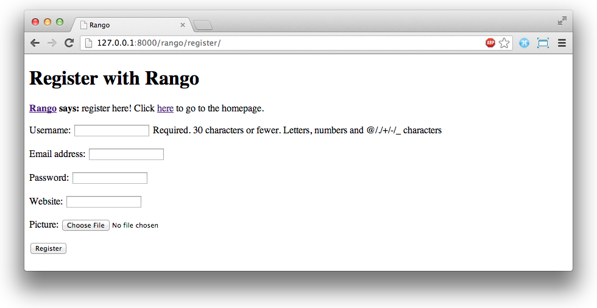
看到thank you for registering!就说明你成功注册了,数据库将会为User和UserProfile建立新的项目.
9.5 增加登录功能
完成了注册功能,我们需要添加登录的功能.我们需要做以下几步:
- 创建登录视图处理用户验证
- 创建登录模板展示登录表单
- 映射url
- 在首页提供登录表单链接
9.5.1 创建login()视图
在rango/views.py创建user_login()函数,代码如下:
def user_login(request):
# If the request is a HTTP POST, try to pull out the relevant information.
if request.method == 'POST':
# Gather the username and password provided by the user.
# This information is obtained from the login form.
# We use request.POST.get('<variable>') as opposed to request.POST['<variable>'],
# because the request.POST.get('<variable>') returns None, if the value does not exist,
# while the request.POST['<variable>'] will raise key error exception
username = request.POST.get('username')
password = request.POST.get('password')
# Use Django's machinery to attempt to see if the username/password
# combination is valid - a User object is returned if it is.
user = authenticate(username=username, password=password)
# If we have a User object, the details are correct.
# If None (Python's way of representing the absence of a value), no user
# with matching credentials was found.
if user:
# Is the account active? It could have been disabled.
if user.is_active:
# If the account is valid and active, we can log the user in.
# We'll send the user back to the homepage.
login(request, user)
return HttpResponseRedirect('/rango/')
else:
# An inactive account was used - no logging in!
return HttpResponse("Your Rango account is disabled.")
else:
# Bad login details were provided. So we can't log the user in.
print "Invalid login details: {0}, {1}".format(username, password)
return HttpResponse("Invalid login details supplied.")
# The request is not a HTTP POST, so display the login form.
# This scenario would most likely be a HTTP GET.
else:
# No context variables to pass to the template system, hence the
# blank dictionary object...
return render(request, 'rango/login.html', {})
这个视图可能看起来相当的复杂.和前面的例子一样,user_login()视图负责处理和传递表单.
首先,如果访问视图的方式是HTTP GET,那么就会展示登录表单.如果是通过HTTP POST,那么它将对表单进行处理.
如果表单被发送,那么用户名和密码将会从表单中抽离出来.它们将会被用作验证用户(使用Django的authenticate()函数).如果用户名/密码在数据库中存在authenticate()就会返回一个User对象 - 反之则会返回None.
如果我们查找一个User对象,我们可以检查账户是处于激活或非激活状态 - 然后会返回浏览器相应的状态.
然而如果发送了无效的表单,是因为没有添加用户名和密码导致返回错误信息(例如用户名/密码丢失).
上面代码最有意思的是用Django内建的机制来实现验证过程.authenticate()函数用来检查用户名和密码是否和账户匹配,而login()函数用来标记用户登录.
你也可能注意到我们使用了HttpResponseRedirect类.看到名字就猜到了,最后代码返回的是一个HttpResponseRedirect类实例,它的参数是一个跳转地址,用来使用户的浏览器跳转到该地址.注意它返回的状态码不是正常状态下的200而是302,它表示一个重定向.参看official Django documentation on Redirection以获取更多信息.
所有的这些函数和类都在Django之中,所以你需要导入它们,在rango/views.py中加入下面.
from django.contrib.auth import authenticate, login
from django.http import HttpResponseRedirect, HttpResponse
9.5.2 创建登录模板
我们已经创建完视图,所以接下来我们需要创建登录模板了.我们知道模板存储在templates/rango/目录,所以我们在这里创建login.html文件,代码如下:
<!DOCTYPE html>
<html>
<head>
<!-- Is anyone getting tired of repeatedly entering the header over and over?? -->
<title>Rango</title>
</head>
<body>
<h1>Login to Rango</h1>
<form id="login_form" method="post" action="/rango/login/">
{% csrf_token %}
Username: <input type="text" name="username" value="" size="50" />
<br />
Password: <input type="password" name="password" value="" size="50" />
<br />
<input type="submit" value="submit" />
</form>
</body>
</html>
确保在inputname属性要和user_login()视图里的名字相同 - 例如,username作为用户名,password作为密码.同时不要忘记{% csrf_token %}!
9.5.3 添加登录视图URL映射
接下来我们需要对user_login()视图映射URL.修改urls.py文件里的urlpatterns元组如下.
urlpatterns = patterns('',
url(r'^$', views.index, name='index'),
url(r'^about/$', views.about, name='about'),
url(r'^category/(?P<category_name_slug>\w+)$', views.category, name='category'),
url(r'^add_category/$', views.add_category, name='add_category'),
url(r'^category/(?P<category_name_slug>\w+)/add_page/$', views.add_page, name='add_page'),
url(r'^register/$', views.register, name='register'),
url(r'^login/$', views.user_login, name='login'),
)
9.5.4 添加链接
最后一步是为我们的登录页提供链接.所以我们需要修改在tmplates/rango目录里的index.html文件.找到先前创建的增加目录链接和注册链接,在后面添加.如果你希望进行分割以下可以在链接前面包含(<br />).
<a href="/rango/login/">Login</a>
在头部替换下面的代码.注意到我们使用了user对象,它是通过上下文传递给Django的模板的.通过它我们可以知道用户是否登录(验证).如果用户登录了我们可以提供给详细信息.
{% if user.is_authenticated %}
<h1>Rango says... hello {{ user.username }}!</h1>
{% else %}
<h1>Rango says... hello world!</h1>
{% endif %}
正如你看到的我们用Django模板语言{% if user.is_authenticated %}来检查用户是否通过验证.如果用户成功登录那么我们传递给模板的上下文变量会包含一个用户变量 - 所以我们可以检查用户是否登录.如果登录用户会得到一个欢迎用户的信息,比如Rango says... hello leifos!.否则的话只会返回Rango says... hello world!通用的欢迎信息.
9.5.5 Demo
看看是否和下面图片一样.
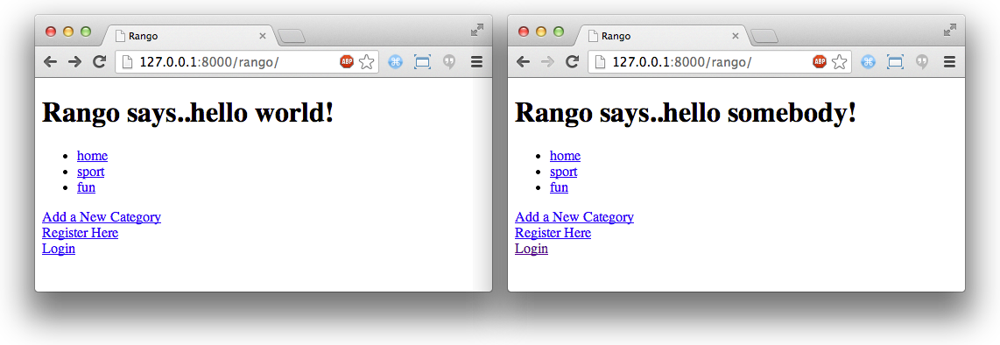
到目前为止,我们已经完成了用户的登录功能!开启Django服务尝试注册新用户.注册成功之后,可以登录看看它给的提示信息.
9.6 限制访问
现在用户可以登录Rango,现在我们需要对一些特殊的部分限制访问,例如只有注册用户才能增加目录和页面.在Django里我们有两种方法实现这个功能:
- 通过检查
request对象和检查用户是否登录. - 用一个方便的装饰器来检查用户是否登录.
第一个是通过user.is_authenticated()方法查看用户是否登录.user对象是通过request对象传递给视图的.下面是简单的例子.
available via the request object passed into a view. The following example demonstrates this approach.
def some_view(request):
if not request.user.is_authenticated():
return HttpResponse("You are logged in.")
else:
return HttpResponse("You are not logged in.")
第二个是使用了python装饰器.装饰器是由一种软件设计模式命名的.它们可以动态的修改一个函数,方法或者类而不用去直接修改它们的源代码.
Django提供了叫做login_required()的装饰器,它可以在视图里要求用户进行登录.如果一个用户没有登录并且尝试访问一个视图,那么这个用户将会重定向到你设定的页面,通常是一个登录页面.
9.6.1 使用装饰器进行限制访问
我们尝试在views.py文件里调用retricted(),代码如下:
@login_required
def restricted(request):
return HttpResponse("Since you're logged in, you can see this text!")
这里我们用了一个装饰器,它位于函数定义前,并且用@符号开头.Python会在执行函数/方法前执行装饰器.在使用装饰器前同样需要导入,像下面一样导入:
from django.contrib.auth.decorators import login_required
同样的还是要在urls.py文件的urlpatterns元组进行修改.我们的元组看起来和下面的例子一样.
urlpatterns = patterns('',
url(r'^$', views.index, name='index'),
url(r'^add_category/$', views.add_category, name='add_category'),
url(r'^register/$', views.register, name='register'),
url(r'^login/$', views.user_login, name='login'),
url(r'^(?P<category_name_slug>\w+)', views.category, name='category'),
url(r'^restricted/', views.restricted, name='restricted'),
)
我们同样需要处理用户未登录时的restricted()视图.我们怎么做呢?最简单的就是重定向用户的浏览器.Django允许我们自定义项目里的settings.py文件.在settings.py文件里设置LOGIN_URL变量为我们希望跳转的URL,例如登录页位于/rango/login/:
LOGIN_URL = '/rango/login/'
这就确保用户在没有登录的情况下直接跳转至/rango/login/.
9.7 注销
确保用户能够优雅的注销需要给用户提供注销的选项.Django的logout()函数将会确保用户注销,以及终止它们的ession,如果用户随后继续访问视图,将会拒绝它们的请求.
在rango/views.py中加入user_logout()函数:
from django.contrib.auth import logout
# Use the login_required() decorator to ensure only those logged in can access the view.
@login_required
def user_logout(request):
# Since we know the user is logged in, we can now just log them out.
logout(request)
# Take the user back to the homepage.
return HttpResponseRedirect('/rango/')
同样我们需要给user_logout()添加URL映射,打开urls.py文件修改urlpaatterns元组:
urlpatterns = patterns('',
url(r'^$', views.index, name='index'),
url(r'^about/$', views.about, name='about'),
url(r'^category/(?P<category_name_slug>\w+)$', views.category, name='category'),
url(r'^add_category/$', views.add_category, name='add_category'),
url(r'^category/(?P<category_name_slug>\w+)/add_page/$', views.add_page, name='add_page'),
url(r'^register/$', views.register, name='register'),
url(r'^login/$', views.user_login, name='login'),
url(r'^restricted/$', views.restricted, name='restricted'),
url(r'^logout/$', views.user_logout, name='logout'),
)
现在我们已经完成了用户注销的功能,我们需要在主页上创建一个链接,当用户点击即可进行注销.但是对于没有登录的用户来说这个链接就毫无意义了.最好是这样当用户没有登录时我们可以提供一个注册的链接.
和前面的章节一样,我们需要修改index.html模板,使用模板上下文中的user对象来决定我们需要现实什么链接.在页面底部找到链接列表用下面的HTML代替它.注意别忘了加入注册页面的链接/rango/restricted/.
{% if user.is_authenticated %}
<a href="/rango/restricted/">Restricted Page</a><br />
<a href="/rango/logout/">Logout</a><br />
{% else %}
<a href="/rango/register/">Register Here</a><br />
<a href="/rango/login/">Login</a><br />
{% endif %}
<a href="/rango/about/">About</a><br/>
<a href="/rango/add_category/">Add a New Category</a><br />
当用户验证登录后,就能看到Restricted Page和Logout链接.如果用户没有登录,就会显示Register Here和Login.About和Add a New Category并不在模板的条件代码里,这两个链接在用户匿名或登录时都可以看见.
9.8 练习
这章主要讲述在Django里如何管理用户验证.在我们的项目里讲述了如何安装Djangodjango.contrib.auth应用.另外,我们也展示了如何在django.contrib.auth.models.User模型里加入用户个人模型的额外字段.我们还详细的列出用户如何注册,登录,注销和访问限制.更多信息请看Django’s official documentation on Authentication.
- 定制你的应用,只有注册用户才能添加/修改目录/页面,非注册用户只能浏览/使用目录/页面.你也可以定制增加/修改页面的链接在只有用户登录时才会展示.
- 当用户输入错误用户名和密码时提供错误通知.
在大多数应用中,你要注册和管理用户时需要请求不同的安全级别 - 例如,确保用户有权限输入邮箱地址,或者发送给用户被忘记的密码.虽然我们可以自己进行开发来实现这些功能但是django-registration-redux应用已经很好的实现了这一功能 - 访问 https://django-registration-redux.readthedocs.org 查看更多细节.模板可以在这里找到:https://github.com/macdhuibh/django-registration-templates
10 使用模板
到目前为止我们已经为我们应用里许多的不用页面创建了Django HTML模板.可能你已经注意到了在模板里有许多重复的HTML代码.
大多数网站将会有大量重复的结构(例如顶部,则边栏,底部等等),在每个模板中重复这些HTML可不是一个好的方法.在Django模板语言中使用它提供的继承功能可以减少代码大量的冗余,而不是做大量的重复复制和粘贴.
基本的模板继承步骤如下:
- 定义应用里每个页面重复出现的部分(例如标题栏,侧边栏,底部,内容窗格)
- 在基础模板里提供页面基本的框架和通用内容(例如在页底的版权声明,以及页面中的标识和标题),然后定义一些代码段,用户可以定义需要的代码段.
- 创建具体的模板 - 它们都继承自基础模板 - 并且制定每个块的内容.
10 .1 重复的HTML和基础模板
很明显我们创建的几个模板都有很多重复的HTML代码.下面我们抽离出每个模板中都重复的部分.
<!DOCTYPE html>
<html>
<head>
<title>Rango</title>
</head>
<body>
<!-- Page specific content goes here -->
</body>
</html>
从现在开始让它做我们的基础模板,并且包存在templates目录的base.html文件(例如 templates/base.html)
注意:应当尽可能多的抽离出重复的内容.虽然在开始的时候会有一些困难,但是一旦做完以后会省下大量的时间.想想吧:你希望看到许多同样代码的拷贝吗?
警告:
<!DOCTYPE html>必须放在页面的第一行!不这样做将意味着你的标记不符合W3C HTML5准则。
10.2 模板块
现在我们已经定义了我们的基础模板,我们可以把它变为我们需要继承的模板.我们需要在模板中加入一个模板标签以便于我们能在基础模板里重写 - 这需要用到blocks.
在基础模板里增加body_block如下.
<!DOCTYPE html>
<html>
<head lang="en">
<meta charset="UTF-8">
<title>Rango</title>
</head>
<body>
{% block body_block %}{% endblock %}
</body>
</html>
用{%和%}标签调用标准的Django模板命令.为了开启一个块,模板命令是block <NAME>,这里<NAME>是你希望创建块的名字.最后需要保证用endblock命令关闭块.
你也可以再块中设置'默认内容',例如:
{% block body_block %}This is body_block's default content.{% endblock %}
当我们创建模板时我们会继承base.html和重写body_block里的内容.你也可以在模板中放置更多的块,例如,你可以分别为页面标题,底部,侧边栏设置块.Django模板系统中的块十分的有用, official Django documentation on templates查看更多内容.
10.2.1 更多的抽象
既然已经理解了Django块,让我们抽象出更多的基础模板.重新打开base.html模板修改如下.
<!DOCTYPE html>
<html>
<head>
<title>Rango - {% block title %}How to Tango with Django!{% endblock %}</title>
</head>
<body>
<div>
{% block body_block %}{% endblock %}
</div>
<hr />
<div>
<ul>
{% if user.is_authenticated %}
<li><a href="/rango/restricted/">Restricted Page</a></li>
<li><a href="/rango/logout/">Logout</a></li>
<li><a href="/rango/add_category/">Add a New Category</a></li>
{% else %}
<li><a href="/rango/register/">Register Here</a></li>
<li><a href="/rango/login/">Login</a></li>
{% endif %}
<li><a href="/rango/about/">About</a></li>
</ul>
</div>
</body>
</html>
我们在模板中引入两个新的特性.
- 第一个是加入新的Django模板块
title.所以我们可以为继承自基础模板的页面定制标题.如果页面没有使用这个块,那么这个标题会默认为Rango - How to Tango with Django!. - 我们也可以把
index.html模板中的链接列表加入到body_block块的后部.这将会为所有继承基础模板的页面展示这些链接.可以在body_block内容和链接之间加入一个水平线(
)以便我们区分这两部分.
注意我们的body_block包含在HTML<div>标签里 - 我们将在24章解释<div>意义.我们的链接同样使用<ul>和<li>标签包含在HTML无序列表里.
10.3 模板继承
我们已经创建了带块的基础模板,现在我们需要修改那些继承基础模板的模板.例如,让我们重构rango/category.html模板.
首先我们需要移除所有重复的HTML代码和模板标签/命令.然后加入代码:
{% extends 'base.html' %}
extends命令携带一个参数,这个参数是要继承的模板(例如 rango/base.html).然后修改category.html模板如下.
注意:提供给
extends命令的参数的默认路径是项目的templates目录.例如,Rango所有模板应当是从rango/base.html扩展而不是base.html.
{% extends 'base.html' %}
{% load staticfiles %}
{% block title %}{{ category_name }}{% endblock %}
{% block body_block %}
<h1>{{ category_name }}</h1>
{% if category %}
{% if pages %}
<ul>
{% for page in pages %}
<li><a href="{{ page.url }}">{{ page.title }}</a></li>
{% endfor %}
</ul>
{% else %}
<strong>No pages currently in category.</strong>
{% endif %}
{% if user.is_authenticated %}
<a href="/rango/category/{{category.slug}}/add_page/">Add a Page</a>
{% endif %}
{% else %}
The specified category {{ category_name }} does not exist!
{% endif %}
{% endblock %}
在category.html模板里使用extends命令来继承base.html.在这里你不需要写一个完整的HTML文档,因为base.html已经提供了一个完整的框架.你只要把增添的内容写到基础模板里,它就会创建一个完整的HTML文档发送给用户浏览器.
注意:模板非常强大,你甚至可以创建你自己的模板标签.在这里我们将演示如何减小模板里重复的HTML结构. 然而,模板可以减小应用视图里的代码.例如,如果你想在你的应用增加一些相同的数据库驱动的内容,你需要调用特定的视图来处理网页中重复的部分.这样在每个视图里就不用重复调用Django ORM函数来收集数据了. 查看更多内容请查看 Django documentation on templates.
10.4 模板里加入URL
到目前为止我们可以直接的在模板里键入页面/视图的URL,例如<a href=".//rango/about/"> About </a>.然而最好的方式是使用url模板标签来查找在urls.py文件中的url.我们需要改写一下.
<li><a href="{% url 'about' %}">About</a></li>
在这里我们要指定应用和about视图.
现在可以修改基础模板的url模板标签:
<div>
<ul>
{% if user.is_authenticated %}
<li><a href="{% url 'restricted' %}">Restricted Page</a></li>
<li><a href="{% url 'logout' %}">Logout</a></li>
<li><a href="{% url 'add_category' %}">Add a New Category</a></li>
{% else %}
<li><a href="{% url 'register' %}">Register Here</a></li>
<li><a href="{% url 'login' %}">Login</a></li>
{% endif %}
<li><a href="{% url 'about' %}">About</a></li>
</ul>
</div>
在我们的index.html模板里有一个带参数的url模式,例如category会带一个category.slug参数.在这里你可以使用模板标签来传递这个category.slug参数,例如在模板里写入{% url ‘category’ category.slug %}:
{% for category in categories %}
<li><a href="{% url 'category' category.slug %}">{{ category.name }}</a></li>
{% endfor %}
TODO(leifos):官方提供的如何使用模板标签,http://django.readthedocs.org/en/latest/intro/tutorial03.html 这个stackoverflow也很有帮助 http://stackoverflow.com/questions/4599423/using-url-in-django-templates
TODO(leifos):指出如何把url放到一个命名空间并引用,见http://django.readthedocs.org/en/latest/intro/tutorial03.html
10.5 练习
完成下面的练习你将会成为Django模板专家.
- 更改所有模板使他们都继承
base.html模板.步骤和上面的例子一样.就和下图一样,所有的模板都会继承base.html.当完成后记得删除index.html模板里的链接.我们不再需要它们了!你也可以移除在about.html模板里的链接. - 在限制页面使用模板.模板取名为
restricted.html,并且保证它也继承base.html模板. - 使用url模板标签代替所有的url.
- 添加一个地址使用户不论在网站的哪个位置都能返回到主页.
警告:记得在每个模板头部加入
{% load static %}以使用静态媒体.如果没有这样做,将会产生一个错误!Django模板模块需要分别单独导入 - 你不可以调用在你扩展的模板里的模块.
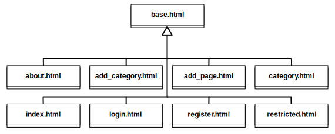
注意:完成上面的练习后,所有Rango的模板都会继承
bashe.html.让我们回过头看看base.html的内容,user对象 - 在Django请求的上下文中 - 将会用来检查当前的Rnago用户是否已经登录(通过使用user.is_authenticated).因为所有的Rango模板都会继承基础模板,所以所有的Rango模板的访问都要依赖于所发送请求的上下文. 因为这个新的依赖,你必须检查每个Rango的Django视图.对于每个视图,确保每个请求对于Django模板引擎都是可用的.通过这个教程,我们通过render()传递请求作为参数来达到这个目的.有时会发生这样的情况,如果你的请求被错误的传送可能出现用户没有登录,但是Django认为已经登录. 这里我们以about视图作为例子来进行检查.开始用硬编码的方式进行,代码如下.注意我们只发送字符串 - 我们没有使用request参数.
def about(request):
return HttpResponse('Rango says: Here is the about page. <a href="/rango/">Index</a>')
为了使用模板我们需要调用render函数传递request对象.这将会使我们的模板引擎可以获取像user这样的对象,它可以允许模板引擎查看用户是否登录.(例如进行验证).
def about(request):
return render(request, 'rango/about.html', {})
记住,render()最后一个参数是一个字典,它可以添加额外的数据传递给Django模板引擎.因为我们没有什么额外的数据传递给模板所以这里为空.查看5.1.3章节复习关于render()的知识.
11 Cokkies和Sessions
在本章中我们将要介绍sessions和cookies,它们两个在现代wen应用中有着至关重要的作用.在上一章,Django框架使用sessions和cookies来处理用户登录和注销功能(都在背后运行).这里我们将要探索cookies的其他用途.
11.1 Cookies,无处不在的Cookies!
如果你已经熟知cookies的概念和它背后的运行机制,那么请直接跳转到11.2,如果没有让我们继续.
当我们请求访问一个网站时,服务器会返回请求页面的内容.另外还有一个或者多个cookies被传送给客户端,它们将会保存在浏览器的cache里.当一个用户在同一个网站服务器请求新的页面时,所有的关于这个页面的cookies也会发送到请求里.服务器会解析请求里的cookies字段并且生成一个特定的响应.
这里我就不翻译了~~都是一些科普了
11.2 Sessions和无状态协议
所有的浏览器和服务器之间的交互都会通过HTTP协议.通过第8章简单的接触我们知道HTTP是无状态协议.这就意味着每次客户端请求(HTTPGET)或者发送(HTTPPOST)资源给服务器都必须新建立一个连接(一个TCP连接).
因为客户端和服务器没有持续的连接,两端的软件不能仅仅通过单独的连接保持会话状态.例如,客户端每次都需要告诉服务器谁在这个主机上登录了这个web应用.这就是用户和服务器之间的会话,这也是session的基本 - a semi-permanent exchange of information.作为一个无状态协议,HTTP需要保持会话状态非常的困难 - 但是很走运我们可以使用几种技术来绕过这个问题.
最常用的一种保持状态的方法就是使用session ID,和cookies一样存储在客户端电脑.session ID可以认为是一种令牌(一大串字符串),它能够唯一标识特定web应用里的会话.和cookies存储许多不同种类的数据不一样(像用户名,名字,密码),它只存储session ID,并且映射到web服务器的一个数据结构.在这个数据结构里,你可以存储任何你需要的信息.这对于用户来说是更安全的存储方法.用这种方法,这些数据不会被一个不安全的客户端和连接所监听.
如果你的浏览器支持cookies,当你访问所有的网站时都会创建一个新的会话.你可以自己查看下,如图所示.在Google Chrome的开发者工具中,你可以查看到web服务器发送给你的cookies.在下图中,你可以观察到选中的sessionidcookie.这个cookie包含一系列的字母和数字,它可以使Django唯一标识一个会话.到现在,所有的session细节都表述完了 - 但是服务器端还没讲.
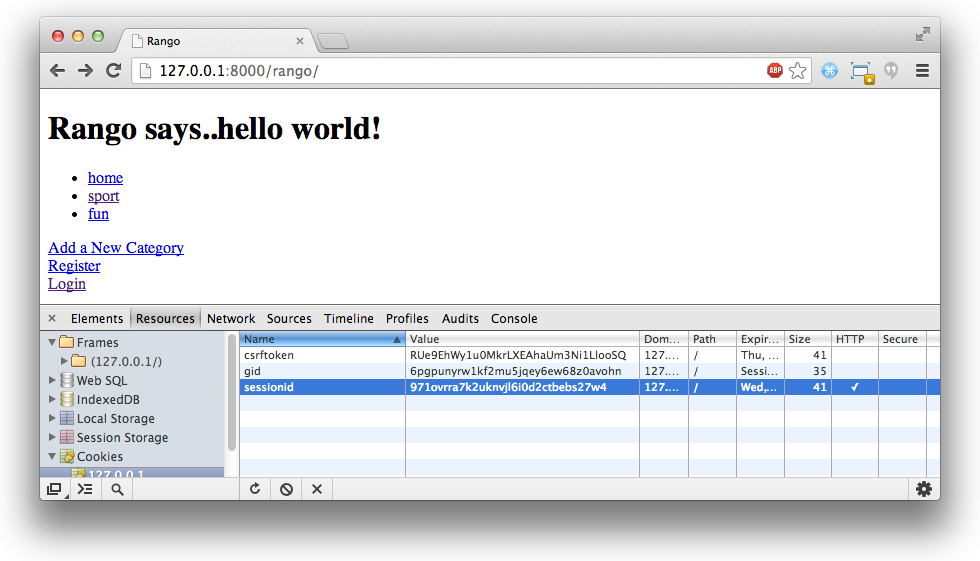
session ID也可以不存储在cookies中.传统的PHP应用会把它们做成一个请求字符串或是URL的一部分来请求资源.如果你偶然间访问像http://www.site.com/index.php?sessid=omgPhPwtfIsThisIdDoingHere332i942394这样的URL,很可能是服务器唯一识别你的标识.很有趣吧!
注意:仔细看上图,注意到
csrftoken令牌了吗?这个cookie帮助我们避免跨站请求.
11.3 在Django里设置Sessions
尽管我们已经设置好并且正确工作,但是如果学会Django的模块提供哪些工作就会更好了.关于sessions方面Django提供了middleware来提供session功能.
为了检查一切都设置妥当,打开Django项目里的settings.py文件.找到MIDDLEWARE_CLASSES元组.你可以在元组中看到django.contrib.sessions.middleware.SessionMiddleware模块 - 如果没有看到现在就加进去.正式这个SessionMiddleware中间件能够创建唯一的sessionidcookies.
SessionMiddleware可以灵活的使用不同的方法来存储session信息.你可以采取很多方法储存 - 存在文件,数据库甚至在cache中.最直接的方法是使用django.contrib.sessions应用把session信息存储到Django模型/数据库中(详细的说是django.contrib.sessions.models.Session模型).使用这种方法,你必须首先确保在Django项目的settings.py文件里django.contrib.sessions保存在INSTALLED_APPS元组里.如果你现在要添加应用,你需要使用迁移命令来更新数据库.
注意:如果你希望使用轻量快捷的方式,你可以把session信息存储在cache中.可以查看 official Django documentation for advice on cached sessions.
11.4 基于cookie的session
我们现在测试我们的浏览器是否支持cookies.现代浏览器都支持cookies,你可以查看你浏览器的cookies信息.如果你的浏览器安全等级设定的非常高,一些特定的cookies会被阻塞.查看浏览器文档获取更多信息,设定使用cookies.
11.4.1 测试Cookie功能
为了测试cookies,你可以使用Django的request对象提供的便捷方法.其中set_test_cookie(),test_cookie_worked()和delete_test_cookie()方法对我们比较有用.在一个视图里,你需要设置一个cookie.在另一个视图你需要检查cookie是否存在.两个不同的视图都要请求cookies,是因为你要查看是否客户端接收了来自服务器的cookie.
我们将会使用前面创建的两个视图,index()和register().如果你实现了用户验证功能,你需要确保你已经进行了注销.我们不会在网页上展示而是在终端里输出Django服务器验证cookies是否正常工作.当我们成功确认cookies确实正常工作,我们会移除代码恢复原状.
在Rango的views.py文件,找到index()视图.在里面添加下面这一行.为了确保这行能够执行,把它放在视图的第一行,不要包含在条件语段里.
request.session.set_test_cookie()
在register()视图顶部加入下面3行代码 - 同样是为了保证它们能被执行.
if request.session.test_cookie_worked():
print ">>>> TEST COOKIE WORKED!"
request.session.delete_test_cookie()
更改完以后运行Django服务并打开Rango首页,http://127.0.0.1:8000/rango/.页面加载完后,前往注册页面.当注册页面加载后,你将会和下图一样在终端里看到>>>> TEST COOKIE WORKED!.
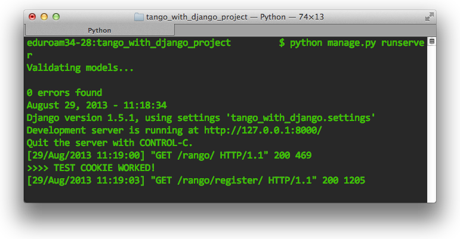
如果没有看到上面的信息,请检查一下你的浏览器安全设置,有可能会阻止浏览器接受cookie.
注意:你可以删除增加的代码 - 我们只是拿它用来验证以下cookies
11.5 客户端Cookies:一个网站技术的例子
现在我们已经知道cookies是如何工作的,让我们实现一个简单的网站访问计数.首先我们需要创建两个cookies:一个用来追踪用户访问Rango网站次数,另一个用来追踪上一次登录的时间.保持追踪用户上一次的访问时间和日期将允许我们每天只能增长一次访问次数.
假设用户访问的Rango页面一般为首页.打开rango/view.py并修改index()视图如下.
def index(request):
category_list = Category.objects.all()
page_list = Page.objects.order_by('-views')[:5]
context_dict = {'categories': category_list, 'pages': page_list}
# Get the number of visits to the site.
# We use the COOKIES.get() function to obtain the visits cookie.
# If the cookie exists, the value returned is casted to an integer.
# If the cookie doesn't exist, we default to zero and cast that.
visits = int(request.COOKIES.get('visits', '1'))
reset_last_visit_time = False
response = render(request, 'rango/index.html', context_dict)
# Does the cookie last_visit exist?
if 'last_visit' in request.COOKIES:
# Yes it does! Get the cookie's value.
last_visit = request.COOKIES['last_visit']
# Cast the value to a Python date/time object.
last_visit_time = datetime.strptime(last_visit[:-7], "%Y-%m-%d %H:%M:%S")
# If it's been more than a day since the last visit...
if (datetime.now() - last_visit_time).days > 0:
visits = visits + 1
# ...and flag that the cookie last visit needs to be updated
reset_last_visit_time = True
else:
# Cookie last_visit doesn't exist, so flag that it should be set.
reset_last_visit_time = True
context_dict['visits'] = visits
#Obtain our Response object early so we can add cookie information.
response = render(request, 'rango/index.html', context_dict)
if reset_last_visit_time:
response.set_cookie('last_visit', datetime.now())
response.set_cookie('visits', visits)
# Return response back to the user, updating any cookies that need changed.
return response
读下来这段代码你将会看到大部分的代码都是在处理当前日期和时间.所以在这里你需要在views.py文件的头部加入Python的datetime模块.
from datatime import datetime
确保引进了datetime模块里的datetime对象.
在代码中我们检查last_visit是否存在.如果存在我们就使用request.COOKIES['cookie_name']语法来获取它的值,这里的request就是request对象的名字,cookie_name就是你希望跟踪的cookie名.注意返回的所有的cookie值都是字符串;不要认为cookie保存的是数字就会返回整型.你需要自己把它们转化成正确的形式.如果这个cookie不存在,你需要使用response对象的set_cookie()方法来创建cookie.这个方法包含两个值,cookie名(字符串)和cookie值.不管你输入的是什么形式 - 它都会自动转化成字符串.
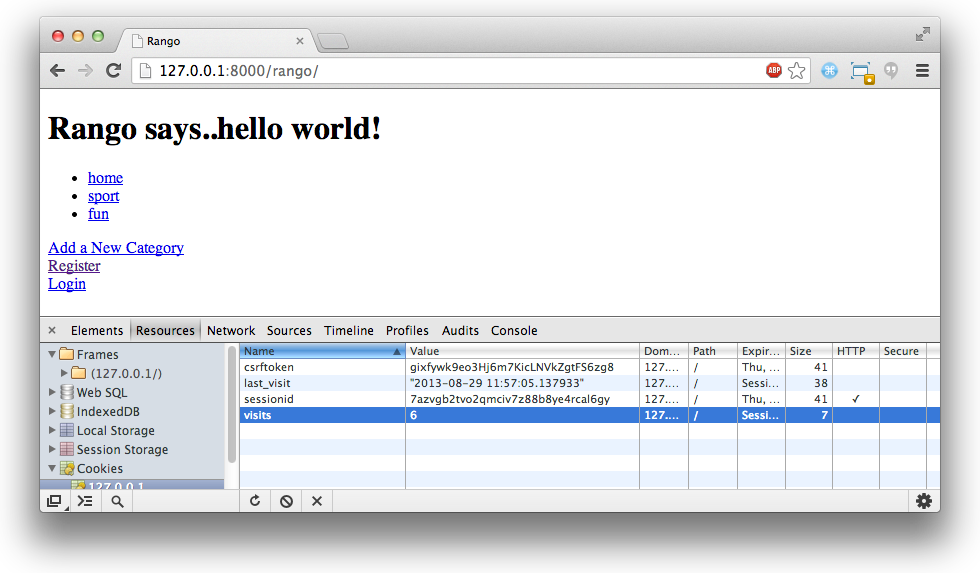
如果你现在打开Rango主页,检查你浏览器中的开发者工具,你将会看到visits和last_visit两个cookie.如上图所示.
注意:你或许注意到了刷新浏览器并不能使
visits增长.为什么?因为上面给出的示例代码只在用户上次访问距今是1天时才增加.当我们测试的时候这个值有点不合理 - 所以为什么我们不缩短以下这个时间呢?修改index()视图,找到下面这一行.
if (datetime.now() - last_visit_time).days > 0:
我们可以把它们更改为秒数级别的比较.在下面的例子,我们检查是否在5秒之外有登录.
if (datetime.now() - last_visit_time).seconds > 5:
这就意味着你只需要等待5秒的时间就能看到visitscookie的增长,而不需要一整天.当你这么玩完以后,就可以把它改回来了.
在不同的时间里使用-操作符可以求出它们的差值是Python提供给我们的非常使用的功能.当时间相减,就会返回一个timedelta对象,就像上面代码它提供给我们days和seconds属性.你可以查看 official Python documentation来获取更多关于对象类型和其他属性的信息.
我们可以修改index.html在里面加入<p> visits: {{ visits }}</p>来现实访问次数.
11.6 Session数据
在前一个例子中我们使用了客户端的cookies.然而,另一种更安全的方法是把session信息存储在服务器端.我们可以使用存储在客户端的session ID cookie作为解锁数据的钥匙.
使用基于cookie的session你需要完成以下几步.
- 确保
settings.py文件的MIDDLEWARE_CLASSES包含django.contrib.sessions.middleware.SessionMiddleware. - 配置session后台.确定
django.contrib.sessions在你settings.py文件的INSTALLED_APPS里.如果没有则添加并且运行数据库迁移命令python manage.py migrate. - 假设使用数据库作为后台,但是你也可以设置成其他(比如cache).参见 official Django Documentation on Sessions for other backend configurations.
现在我们可以调用request.session.get()方法访问服务器端的cookies,使用request.session[]存储它们.注意session ID cookie仍然用来标记客户端机器(严格的说是存在一个浏览器端的cookie),但是所有的数据都存储在服务器端.下面我们修改index()函数使用基于cookie的session:
def index(request):
category_list = Category.objects.order_by('-likes')[:5]
page_list = Page.objects.order_by('-views')[:5]
context_dict = {'categories': category_list, 'pages': page_list}
visits = request.session.get('visits')
if not visits:
visits = 1
reset_last_visit_time = False
last_visit = request.session.get('last_visit')
if last_visit:
last_visit_time = datetime.strptime(last_visit[:-7], "%Y-%m-%d %H:%M:%S")
if (datetime.now() - last_visit_time).seconds > 0:
# ...reassign the value of the cookie to +1 of what it was before...
visits = visits + 1
# ...and update the last visit cookie, too.
reset_last_visit_time = True
else:
# Cookie last_visit doesn't exist, so create it to the current date/time.
reset_last_visit_time = True
if reset_last_visit_time:
request.session['last_visit'] = str(datetime.now())
request.session['visits'] = visits
context_dict['visits'] = visits
response = render(request,'rango/index.html', context_dict)
return response
警告:强烈建议你在启用基于session数据之前删除所有客户端的cookies.你可以在你的浏览器里对它们进行删除,或者是直接清空浏览器的cache - 确保cookies在这个过程中删除.
注意:使用session存储数据的另一个优点是它可以把数据从字符串转化成响应的类型.然而只有像
int,float,long,complex和boolean这样的内置类型才有用.如果你希望存储字典或是其他复杂的类型就不可以啦.在这种情况下你需要 pickling your objects.
11.7 Browser-Length and Persistent Sessions
当你使用cookies时你可以使用Django的session框架来设置browser-lenght sessions或者persistent sessions.这两个名字的解释如下:
- browser-length sessions是当浏览器关闭时截至.
- persistent sessions可以随你的选择而结束.它可以是一个小时甚至是一个月.
默认的browser-length sessions是被关闭的.你可以通过设置Django的settings.py来开启它(增加SESSION_EXPIRE_AT_BROWSER_CLOSE并设置为true).
persistent session默认是开启的,可以设置SESSION_EXPIRE_AT_BROWSER_CLOSE为False进行开启.persistent sessions有一个额外的设置SESSION_COOKIE_AGE,它可以允许你设置cookie的存活时间.这个值是一个整型,代表着cookie能存活的秒数.例如修改为1209600意味着网页的cookies将会在两周后过期.
查看 official Django documentation on cookies 获取更多可用的设置.也可以查看 Eli Bendersky’s blog这篇讲述Django和cookie的文章.
11.8 清除Sessions数据库
Session cookies是不断累积的.所以如果你是使用数据库作为后台你需要定期的清除存储的cookies.可以用python manage.py clearsessions命令来实现.Django文档里建议每天运行一次.参见https://docs.djangoproject.com/en/1.7/topics/http/sessions/#clearing-the-session-store
11.9 基本的注意事项和流程
在Django应用中使用cookies,有一些事情你需要注意:
- 首先,考虑你的web应用需要什么类型的cookies.你保存的信息需要持续存储还是在会话结束后就截至?
- 对你使用cookies储存的信息要格外小心.存储在cookies里的信息同样会呈现在用户的电脑上.这样做的风险非常的大:你不会知道用户的电脑是多么的危险.如果保存一些敏感的信息还是存在服务器端吧.
- 另一个致命的是用户可以设置他的浏览器级别非常的高,这将会阻止你的cookies.一旦你的cookies被阻拦,你的网站功能就会异常.你必须想到这一点 - 你无法空值用户浏览器.
如果你的情况适合客户端cookies,你可以按照如下步骤进行:
- 首先检查你希望的cooki是否存在.可以用检查
request参数实现.request.COOKIES.has_key('<cookie_name>')函数会返回一个布尔值来告诉我们是否有一个叫<cookie_name>的cookie存在. - 如果这个cookie存在,你可以通过
request.COOKIES[]来获取.COOKIES属性是一个字典,你可以把你希望获取的cookie名写入方括号中.记住所有的cookies都返回为字符串.因此你必须把它们转化成正确的类型. - 如果cookie不存在或者你希望更新cookie.你可以使用
response.set_cookie('<cookie_name>', value)函数来实现,这里的两个参数分别是cookie的名字和他们的值.
如果你需要更安全的cookies,那么就需要使用基于cookies的session:
- 确保
settings.py中的MIDDLEWARE_CLASSES包含django.contrib.sessions.middleware.SessionMiddleware. - 设置你的session后台
SESSION_ENGINE.查看 official Django Documentation on Sessions 获取不同后台的不同设置. - 通过
requests.sessions.get()来获取存在的cookie. - 通过
requests.session['<cookie_name>']更改或设置cookie.
11.10 练习
现在你已经完成了这章,下面来做一些简单的练习.
- 检查服务器端cookies.清除浏览器cache和cookies,然后确定
last_visit和visits都被删除.注意你将仍然恩可以看到sessionidcookie.Django使用这个cookie可以去查询数据库,这个数据库储存所有的关于服务端的session. - 更改About页面视图和模板,现实用户访问网站的次数.
11.10.1 提示
为了帮助你完成上面的练习,下面的提示可能帮助你.
你必须把cookie的值传递给模板的上下文,使它传递给页面,代码如下:
# If the visits session varible exists, take it and use it.
# If it doesn't, we haven't visited the site so set the count to zero.
if request.session.get('visits'):
count = request.session.get('visits')
else:
count = 0
# remember to include the visit data
return render(request, 'rango/about.html', {'visits': count})
12 使用Django-Registration-Redux进行用户验证
在Django里有许多的应用提供登录,注册和验证机制.许多的应用都提供这种功能而且几乎不重写url,视图和模板.在这章,我们需要使用django-registration-redux包来提供这些功能.这就意味着我们需要重构我们的代码 - 然而它将会教给我们如何使用外部应用以及如何轻松的在我们Django项目里加入应用.它也会使我们的应用更加简洁.
注意:这章并不是必要的,你可以跳过,但是在随后的章节里我们会假设你已经更新了验证机制.
12.1 设置Django-Registration-Redux
开始我们先安装django-registration-redux:
$ pip install django-registration-redux
安装好后,我们需要告诉Django我们使用这个应用.打开settings.py文件,修改INSTALLED_APPS元组:
INSTALLED_APPS = (
'django.contrib.admin',
'django.contrib.auth',
'django.contrib.contenttypes',
'django.contrib.sessions',
'django.contrib.messages',
'django.contrib.staticfiles',
'rango',
'registration', # add in the registration package
)
同时在settings.py文件你可以加入:
REGISTRATION_OPEN = True # If True, users can register
ACCOUNT_ACTIVATION_DAYS = 7 # One-week activation window; you may, of course, use a different value.
REGISTRATION_AUTO_LOGIN = True # If True, the user will be automatically logged in.
LOGIN_REDIRECT_URL = '/rango/' # The page you want users to arrive at after they successful log in
LOGIN_URL = '/accounts/login/' # The page users are directed to if they are not logged in,
# and are trying to access pages requiring authentication
上面这些设置都带了注释.现在在tango_with_django_project/urls.py里修改urlpatterns以增加注册包的引用:
urlpatterns = patterns('',
url(r'^admin/', include(admin.site.urls)),
url(r'^rango/', include('rango.urls')),
(r'^accounts/', include('registration.backends.simple.urls')),
)
django-registration-redux包提供了许多不同的注册后台供你选择.在registration.backend.simple.urls,它提供了:
- registration -> /accounts/register/
- registration complete -> /accounts/register/complete
- login -> /accounts/login/
- logout -> /accounts/logout/
- password change -> /password/change/
- password reset -> /password/reset/
在registration.backends.default.urls里也提供了两步激活账户的功能:
- 全面激活(使用两步注册) ->
ctivate/complete/ - 激活(如果账户激活失败) ->
ctivate/<activation_key>/ - 激活邮件(通知用户激活邮件已经发送)
- 激活邮件主体(文本文件,包含激活邮件的文本)
- 激活邮件标题(文本文件,包含激活文件的标题)
注意Django Registration Redux只提供功能,没有提供模板.所以我们需要自己写模板来连接每个视图.
12.3 设置模板
在这篇 https://django-registration-redux.readthedocs.org/en/latest/quickstart.html 快速入门里只提供了一般的模板需求,没有清楚的说明每个模板都应当包含什么.
在这里我们可以下载Anders Hofstee的Github项目,https://github.com/macdhuibh/django-registration-templates ,你可以在这里找到详细的模板.我们将使用这个模板作为我们的指导.
首先,我们需要在templates目录新建一个registration目录.这里将存储所有关于 Django Registration Redux应用的页面.
12.3.1 登录模板
在templates/registration创建login.htnl文件,代码如下:
{% extends "rango/base.html" %}
{% block body_block %}
<h1>Login</h1>
<form method="post" action=".">
{% csrf_token %}
{{ form.as_p }}
<input type="submit" value="Log in" />
<input type="hidden" name="next" value="{{ next }}" />
</form>
<p>Not a member? <a href="{% url 'registration_register' %}">Register</a>!</p>
{% endblock %}
注意每个url引用都要用url模板标签来引用.如果你访问 http://127.0.0.1:8000/accounts/ 你就会看到绑定的url列表,每个列表后边都有它的名字.
12.3.2 注册模板
在templates/registration创建registration_form.html文件:
{% extends "rango/base.html" %}
{% block body_block %}
<h1>Register Here</h1>
<form method="post" action=".">
{% csrf_token %}
{{ form.as_p }}
<input type="submit" value="Submit" />
</form>
{% endblock %}
12.3.3 注册完成模板
在templates/registration创建registration_complete.html文件:
{% extends "rango/base.html" %}
{% block body_block %}
<h1>Registration Complete</h1>
<p>You are now registered</p>
{% endblock %}
12.3.4 注销模板
在templates/registration目录创建logout.html文件:
{% extends "rango/base.html" %}
{% block body_block %}
<h1>Logged Out</h1>
<p>You are now logged out.</p>
{% endblock %}
12.3.5 尝试注册
运行Django服务器,访问: http://127.0.0.1:8000/accounts/register/
注意到注册表单包含两个密码字段 - 它可以进行检车.尝试输入不同的密码.
它能够正常的运行,但并不是所有的东西都做好了,我们还需要一些逻辑代码.
12.3.6 重构项目
现在需要修改bashe.html来使用心得注册url/视图:
- 修改注册url为
<a href="./{% url 'registration_register' %}"> - 登录为
<a href="./{% url 'auth_login' %}"> - 注销为
<a href="./{% url 'auth_logout' %};next=/rango/?next=/rango/"> - 修改
settings.py中的LOGIN_URL为/accounts/login/.
注意到注销页面我们包含了?next=/rango/.这就是为什么当我们注销时会重定向到rango主页.如果我们不加入它,我们将会重定向到注销页面(但是这样做不太友好).
下面就是解绑rango应用的register,login,logout的功能,例如删除urls,视图和模板(或者把它们注释掉)
12.3.7 修改注册流程
这时候如果用户进行注册,完成后它会重定向到注册完成页面.这有些笨重,我们可以直接重定向到主页.我们可以通过重写registration.backends.simple.views的RegistrationView来实现这个功能.好了,现在在tango_with_django_project/urls.py文件里引入RegistrationView,增加一个新的注册类,然后更新urlpatterns如下:
from registration.backends.simple.views import RegistrationView
# Create a new class that redirects the user to the index page, if successful at logging
class MyRegistrationView(RegistrationView):
def get_success_url(self,request, user):
return '/rango/'
urlpatterns = patterns('',
url(r'^admin/', include(admin.site.urls)),
url(r'^rango/', include('rango.urls')),
#Add in this url pattern to override the default pattern in accounts.
url(r'^accounts/register/$', MyRegistrationView.as_view(), name='registration_register'),
(r'^accounts/', include('registration.backends.simple.urls')),
)
TODO(leifos):增加一个定制注册表单...
12.4 练习
- 为用户提供修改密码的功能.
13 Bootstrap和Rango
在本章,我们将使用Bootstrap3.2套件来装饰我们的Rango.我们不需要了解Bootstrap工作的细节,但是我们假设你了解一些CSS.如果没有的话,去查看以下CSS章节或者一些Bootstrap教程了解一下基础知识.现在,你需要通过这一章把所有零碎的知识点连接起来.
开始我们先看一下Bootstrap 3.2.0 website - 它提供了实例代码和不同的组件,并且提供怎么加入样式标签的方法.在Bootstrap网站它们提供了许多example layouts可以给我们使用.
为了修改Rango样式我们需要定义dashboard style来满足我们的要求,例如在顶部的菜单栏,侧边栏(用来展示目录)和一个主内容区域.在使用Bootstrap的HTML之前我们还需要做一些工作.下面使我们需要做的:
- 把所有的
../../改成http://getbootstrap.com - 修改
dashboard.css为绝对路径http://getbootstrap.com/examples/dashboard/dashboard.css - 起初顶部导航栏的搜索表单
- 把所有没有必要的内容删除并用
{% block body_block %}{% endblock %}替换. - 设置标题元素为
<title>Rango - {% block title %}How to Tango with Django!{% endblock %}</title> - 把项目的名字改为
Rango - 为顶部导航的主页,登录,注册添加链接.
- 添加侧边块,例如
{% block side_block %}{% endblock %}
13.1 新的基础模板
<!DOCTYPE html>
<html lang="en">
<head>
<meta charset="utf-8">
<meta http-equiv="X-UA-Compatible" content="IE=edge">
<meta name="viewport" content="width=device-width, initial-scale=1">
<meta name="description" content="">
<meta name="author" content="">
<link rel="icon" href="http://getbootstrap.com/favicon.ico">
<title>Rango - {% block title %}How to Tango with Django!{% endblock %}</title>
<link href="http://getbootstrap.com/dist/css/bootstrap.min.css" rel="stylesheet">
<link href="http://getbootstrap.com/examples/dashboard/dashboard.css" rel="stylesheet">
<!--[if lt IE 9]>
<script src="https://oss.maxcdn.com/html5shiv/3.7.2/html5shiv.min.js"></script>
<script src="https://oss.maxcdn.com/respond/1.4.2/respond.min.js"></script>
<![endif]-->
</head>
<body>
<div class="navbar navbar-inverse navbar-fixed-top" role="navigation">
<div class="container-fluid">
<div class="navbar-header">
<button type="button" class="navbar-toggle collapsed" data-toggle="collapse" data-target=".navbar-collapse">
<span class="sr-only">Toggle navigation</span>
<span class="icon-bar"></span>
<span class="icon-bar"></span>
<span class="icon-bar"></span>
</button>
<a class="navbar-brand" href="/rango/">Rango</a>
</div>
<div class="navbar-collapse collapse">
<ul class="nav navbar-nav navbar-right">
<li><a href="{% url 'index' %}">Home</a></li>
{% if user.is_authenticated %}
<li><a href="{% url 'restricted' %}">Restricted Page</a></li>
<li><a href="{% url 'auth_logout' %}?next=/rango/">Logout</a></li>
<li><a href="{% url 'add_category' %}">Add a New Category</a></li>
{% else %}
<li><a href="{% url 'registration_register' %}">Register Here</a></li>
<li><a href="{% url 'auth_login' %}">Login</a></li>
{% endif %}
<li><a href="{% url 'about' %}">About</a></li>
</ul>
</div>
</div>
</div>
<div class="container-fluid">
<div class="row">
<div class="col-sm-3 col-md-2 sidebar">
{% block side_block %}{% endblock %}
</div>
<div class="col-sm-9 col-sm-offset-3 col-md-10 col-md-offset-2 main">
<div>
{% block body_block %}{% endblock %}
</div>
</div>
</div>
</div>
<!-- Bootstrap core JavaScript
================================================== -->
<!-- Placed at the end of the document so the pages load faster -->
<script src="https://ajax.googleapis.com/ajax/libs/jquery/1.11.1/jquery.min.js"></script>
<script src="http://getbootstrap.com/dist/js/bootstrap.min.js"></script>
<!-- IE10 viewport hack for Surface/desktop Windows 8 bug -->
<script src="http://getbootstrap.com/assets/js/ie10-viewport-bug-workaround.js"></script>
</body>
</html>
如果仔细看dashboard的html源代码,会发现许多结构都是通过<div>标签创建的.页面被分为两部分 - 顶部导航栏和主面板,都被<div class="container-fluid">包含.在导航栏区域,我们加入我们网站的链接.在主面板区域有两列专栏,一个是side_block,另一个是body_block.
13.2 快速更改样式
使用上面的html代码更新你的base.html(假设你已经完成了12章的内容,使用了django-registration-redux 包,如果没有你需要更新这些url模板标签).重新加载你的应用.你需要联网才能下载css,js和其他相关文件.你注意到了你的应用看起来变化非常大.试着浏览其他页面看一看.因为它们都继承自基础模板,它们看起来都非常好看.虽然不完美但是非常好.
注意:你应当下载所有关联的文件并存储到静态文件夹.如果这么做以后,在基础模板修改静态文件的引用.
现在我们已经设置好base.html,我们可以快速的使用Bootstrap组建来定制我们的页面.
让我们修改about.html模板,在页面里放置一个页面头(http://getbootstrap.com/components/#page-header) .在例子中,我们需要加入<div>并且使用class="page-header"属性:
{% extends 'base.html' %}
{% load staticfiles %}
{% block title %}About{% endblock %}
{% block body_block %}
<div class="page-header">
<h1>About</h1>
</div>
<div>
<p></strong>.</p>
<img width="90" height="100" src="{% static "images/rango.jpg" %}" alt="Picture of Rango" /> <!-- New line -->
</div>
{% endblock %}
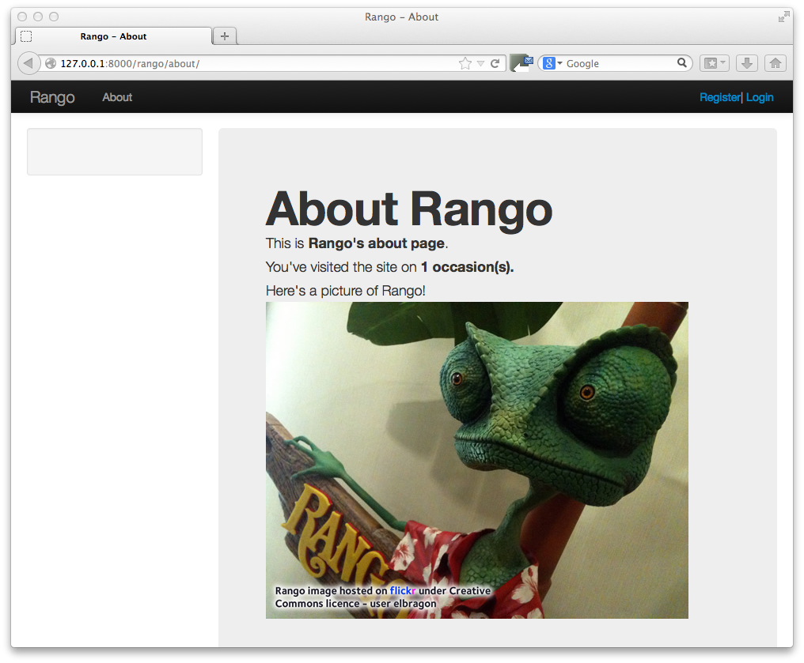
注意到我们的侧边栏是空的,在下一章我们会排列导航栏的链接.但是首先我们需要处理一下首页.
13.2.1 首页
因为我们只封装了标题和页面,例如<div class="page-header">,我们还没有真正利用Bootstrap给我们提供的样式.所以我们采用列流页面并使用它们容纳顶级目录和顶级页面.因为原来的页面有4个列,我们使用两个并把它们的尺寸调大.修改index.html模板:
{% extends 'base.html' %}
{% load staticfiles %}
{% block title %}Index{% endblock %}
{% block body_block %}
{% if user.is_authenticated %}
<div class="page-header">
<h1>Rango says... hello {{ user.username }}!</h1>
{% else %}
<h1>Rango says... hello world!</h1>
{% endif %}
</div>
<div class="row placeholders">
<div class="col-xs-12 col-sm-6 placeholder">
<h4>Categories</h4>
{% if categories %}
<ul>
{% for category in categories %}
<li><a href="{% url 'category' category.slug %}">{{ category.name }}</a></li>
{% endfor %}
</ul>
{% else %}
<strong>There are no categories present.</strong>
{% endif %}
</div>
<div class="col-xs-12 col-sm-6 placeholder">
<h4>Pages</h4>
{% if pages %}
<ul>
{% for page in pages %}
<li><a href="{{page.url}}">{{ page.title }}</a></li>
{% endfor %}
</ul>
{% else %}
<strong>There are no categories present.</strong>
{% endif %}
</div>
</div>
<p> visits: {{ visits }}</p>
{% endblock %}
页面将会变得更漂亮了.但是列表的样式比较恶心.让我们使用Bootstrap的列表组样式 http://getbootstrap.com/components/#list-group .修改<ul>元素为<ul class="list-group">,修改<li>为<li class="list-group-item">然后使用panel样式修改heddings
<div class="panel panel-primary">
<div class="panel-heading">
<h3 class="panel-title">Categories</h3>
</div>
</div>
<div class="panel panel-primary">
<div class="panel-heading">
<h3 class="panel-title">Pages</h3>
</div>
</div>
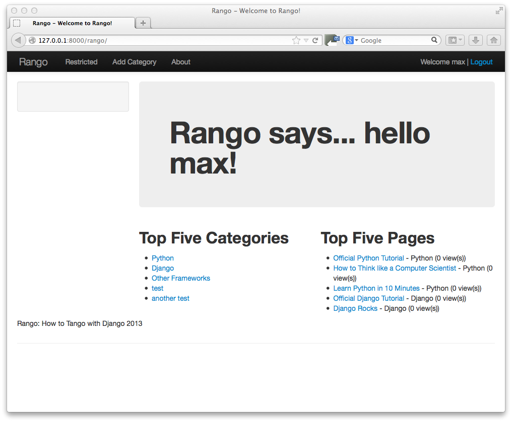
13.3 登录页面
让我们将注意力转移到登录页面.在Bootstrap网站我们已经看到漂亮的登录表单,查看 http://getbootstrap.com/examples/signin/ .如果查看源代码,你会发现我们需要在基础登录表单上加入许多类.修改login.html模板如下:
{% block body_block %}
<link href="http://getbootstrap.com/examples/signin/signin.css" rel="stylesheet">
<form class="form-signin" role="form" method="post" action=".">
{% csrf_token %}
<h2 class="form-signin-heading">Please sign in</h2>
<input class="form-control" placeholder="Username" id="id_username" maxlength="254" name="username" type="text" required autofocus=""/>
<input type="password" class="form-control" placeholder="Password" id="id_password" name="password" type="password" required />
<button class="btn btn-lg btn-primary btn-block" type="submit" value="Submit" />Sign in</button>
</form>
{% endblock %}
这里有很多错误暂时不翻译?~
14 模板标签
14.1 为每个页面提供目录
为每个页面的侧边栏提供目录将会非常的方便快捷.根据以前的经验我们需要做如下:
- 在
base.html模板里我们需要添加一些代码用来展示侧边栏的目录列表. - 在每个视图里,我们需要访问目录对象以获取所有目录,并把它返回到模板上下文字典里.
这么做好像有点繁琐.我们需要不断复制粘贴代码.而且当django-registration-redux包的视图要展示目录时会发生错误.所以我们需要一个不同的方法,用templatetags来请求所需的数据.
14.2 使用模板标签
创建rango/templatetags目录并且创建两个文件,一个是空文件__init__.py,另一个是rango_extras.py并添加代码如下:
from django import template
from rango.models import Category
register = template.Library()
@register.inclusion_tag('rango/cats.html')
def get_category_list():
return {'cats': Category.objects.all()}
这里我们创建了一个get_category_list()方法,并且连接到了rango/cats.html模板.现在我们在模板目录里创建rango/cats.html:
{% if cats %}
<ul class="nav nav-sidebar">
{% for c in cats %}
<li><a href="{% url 'category' c.slug %}">{{ c.name }}</a></li>
{% endfor %}
{% else %}
<li> <strong >There are no category present.</strong></li>
</ul>
{% endif %}
现在在你的base.html使用{% load rango_extras %}调用并用{% get_category_list %}使用它,例如:
<div class="col-sm-3 col-md-2 sidebar">
{% block side_block %}
{% loda rango_extras %}
{% get_category_list %}
{% endblock %}
</div>
注意:每次修改templatetags你需要重启服务.
14.3 参数化模板标签
现在让我们加入自动目录高亮功能.我们需要参数化模板.所以我们需要修改rango_extras.py:
def get_category_list(cat=None):
return {'cats': Category.objects.all(), 'act_cat': cat}
让我们传递我们所在的目录.我们可以修改base.html.
<div class="col-sm-3 col-md-2 sidebar">
{% block side_block %}
{% get_category_list category %}
{% endblock %}
</div>
现在让我们更新cats.html模板:
{% for c in cats %}
{% if c == act_cat %} <li class="active" > {% else %} <li>{% endif %}
<a href="{% url 'category' c.slug %}">{{ c.name }}</a></li>
{% endfor %}
这里检查是否是当前所在的目录页,如果相同就添加高亮(例如act_cat)
重启Django服务并访问页面.我们可以传递category变量.当你浏览一个目录页面,模板会访问catogory变量并且为get_category_list()提供cat值.然后cats.html会选择哪一个目录高亮.
15 增加外部搜索功能
在这个阶段,我们的Rango看起来已经非常好啦 - 大部分的功能都已经实现了,在这章,我们将为我们的Rango提供Bing的搜索的功能而不是仅仅使用目录.首先让我们先设置一个Bing账户来使用它的API,然后把Bing搜索集成进Rango.
15.1 Bing搜索API
Bing搜索API提供了在你的应用中嵌入搜索结果的功能.通过简单的交互,你可以从Bing的服务器返回一个XML或者JSON.这个数据可以通过XML或者JSON解析器进行解析,最后结果传递给你的模板进行调用.
尽管Bing的API可以处理不同内容的请求,我们只需要关注本教程使用的部分 - 就是处理响应的JSON.为了使用Bing搜索的API,你需要注册一个API key.这个key可以给用户每个月5000次请求的权限,对于我们个人用户来说足够用了.
15.1.1 注册一个API key
为了注册一个Bing API key,你必须首先注册一个免费的Microsoft账户.这个账户提供了许多的Microsoft服务.如果你已经有一个Hotmail账户,那么就不用再注册了.你可以在这里 https://account.windowsazure.com 注册和登录帐号.
当你创建完帐号,访问 Windows Azure Marketplace Bing Search API page.在页面的顶部你需要点击Sign In按钮 - 如果你已经你已经进入到Microsoft账户(上面写着Sing Out),就不需要再登录了.
页面右边的列表是每月的事务量.在最顶部是5000/月.点击右边的注册按钮 - 你将会订阅一个免费的服务.阅读完有关条例以后,如果同意条款点击注册按钮继续.接下来将会显示成功注册的页面.
注册成功以后,点击页面顶部的数据链接.在这里你将会看到Windows Azure Marketplace的可用资源列表.在这个列表顶部应当是Bing Search API - 同时右边显示的是你已订阅该资源.点击位于右边的使用.你将会看到如下图所示的页面.
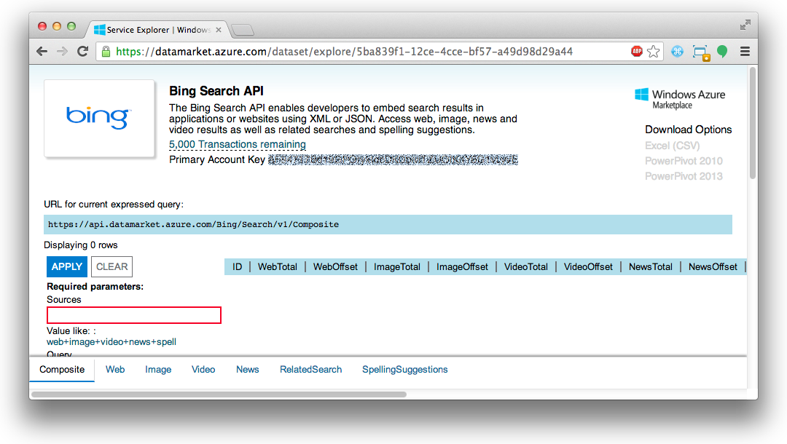
你可以通过左侧的输入栏输入信息来尝试Bing Search API.例如查询栏允许你输入查询语句来发送给API.确保在屏幕的底部选择Web,这样我们就可以只得到网页搜索结果.注意上不的蓝色框中的URL会随着你选择的网页地址而改变.记下这个Web搜索URL.一会我们将会在我们的代码中使用这个URL.下面是使用网页搜错查询rango的例子.
https://api.datamarket.azure.com/Bing/Search/v1/Web?Query=%27rango%27
我们需要得到API key以便在你发送请求时得到Bing服务器的认证.为了获取你的key,点击页面上部的主帐户密钥现实按钮.这样你就会看到你的API key了.一会我们将使用它,先把它记下来 - 还要注意不要泄露这个key!如果别人得到你的key,那么别人就可以使用你的key进行免费的查询了.
注意:这个页面同时现实剩余每月的事务量.
15.2 增加搜索功能
为了增加Rango的搜索功能,我们必须增加一个Bing API查询语句.这个代码将会从一个特定的用户获取请求,并返回一个列表作为结果.所有在API查询阶段的错误都能被很好的处理.拆分这个搜索函数作为添加函数可以有效的分离Django代码和搜索函数代码.
开始,在rango应用目录里添加一个新的Python模块bing_search.py.代码如下.注意查看注释的内容.
import json
import urllib, urllib2
# Add your BING_API_KEY
BING_API_KEY = '<insert_bing_api_key>'
def run_query(search_terms):
# Specify the base
root_url = 'https://api.datamarket.azure.com/Bing/Search/'
source = 'Web'
# Specify how many results we wish to be returned per page.
# Offset specifies where in the results list to start from.
# With results_per_page = 10 and offset = 11, this would start from page 2.
results_per_page = 10
offset = 0
# Wrap quotes around our query terms as required by the Bing API.
# The query we will then use is stored within variable query.
query = "'{0}'".format(search_terms)
query = urllib.quote(query)
# Construct the latter part of our request's URL.
# Sets the format of the response to JSON and sets other properties.
search_url = "{0}{1}?$format=json&$top={2}&$skip={3}&Query={4}".format(
root_url,
source,
results_per_page,
offset,
query)
# Setup authentication with the Bing servers.
# The username MUST be a blank string, and put in your API key!
username = ''
# Create a 'password manager' which handles authentication for us.
password_mgr = urllib2.HTTPPasswordMgrWithDefaultRealm()
password_mgr.add_password(None, search_url, username, BING_API_KEY)
# Create our results list which we'll populate.
results = []
try:
# Prepare for connecting to Bing's servers.
handler = urllib2.HTTPBasicAuthHandler(password_mgr)
opener = urllib2.build_opener(handler)
urllib2.install_opener(opener)
# Connect to the server and read the response generated.
response = urllib2.urlopen(search_url).read()
# Convert the string response to a Python dictionary object.
json_response = json.loads(response)
# Loop through each page returned, populating out results list.
for result in json_response['d']['results']:
results.append({
'title': result['Title'],
'link': result['Url'],
'summary': result['Description']})
# Catch a URLError exception - something went wrong when connecting!
except urllib2.URLError, e:
print "Error when querying the Bing API: ", e
# Return the list of results to the calling function.
return results
上面的代码逻辑可以分为六个部分:
- 首先,定义准备请求Bing的URL地址.
- 然后准备用你的Bing API key进行认证.确保用你的Bing API key替代
<api_key>. - 然后我们用命令
urllib2.urlopen(search_url)连接Bing API.服务器返回的结果会保存在一个字符串里. - 这个字符串会被
jsonPython包解析成一个Python字典对象. - 我们遍历所有返回的结果生成一个
results字典.每个返回结果都带有页面title,URLlink还有一小段summary. - 最后函数返回这个字典.
注意从Bing服务器返回的结果是JSON.这是因为我们在请求中标明了返回JSON - 查看一下我们定义的search_url变量.如果在尝试连接Bing服务器的时候发生了错误,就会通过except代码块中的print语句打印出来.
注意:Bing搜索API还有许多可控参数我们没有涉及到,如果你有兴趣可以查看这里:Bing Search API Migration Guide and FAQ
15.3 安全的保存你的API KEY
如果你把你的代码保存在像Github这样的公共仓库,你必须小心你的API Key了.一个解决办法是创建一个新的keys.py文件,调用里面的BING_API_KEY变量.然后把BING_API_KEY导入到bing_search.py里.修改你的.gitignore文件包含keys.py,最终你的keys.py就不会被添加到项目里了.它只会存储在本地.
15.4 练习
上面我们已经完成了Bing搜索API的功能,试试下面的练习.如果使用一个公共仓库,重构一下代码不要把你的API key泄露,在bing_search.py中加入main()函数来测试一下Bing搜索api(提示:加入下面代码,当你使用python bing_search.py的时候会调用main()函数)
if __name__ == '__main__':
main()
- 主函数将会向用户请求一个查询语句(从命令行),然后通过
run_query方法来请求Bing API,最后会打印处前十个结果. - 打印每个结果的
rank,title和URL
15.5 把搜索放入Rango
为了加入外部搜索我们需要进行以下几步.
- 我们需要创建一个继承自
base.html模板的search.html模板.这个模板将会包含一个HTML<form>来获取用户输入的请求,然后会程序返回的结果. - 然后我们创建一个视图来处理
search.html模板传递给我们的参数,然后调用我们上面定义的run_query()函数.
15.5.1 加入搜索模板
让我们现建立一个search.html模板.代码如下.
{% extends "base.html" %}
{% load staticfiles %}
{% block title %}Search{% endblock %}
{% block body_block %}
<div class="page-header">
<h1>Search with Rango</h1>
</div>
<div class="row">
<div class="panel panel-primary">
<br/>
<form class="form-inline" id="user_form" method="post" action="{% url 'search' %}">
{% csrf_token %}
<!-- Display the search form elements here -->
<input class="form-control" type="text" size="50" name="query" value="" id="query" />
<input class="btn btn-primary" type="submit" name="submit" value="Search" />
<br />
</form>
<div class="panel">
{% if result_list %}
<div class="panel-heading">
<h3 class="panel-title">Results</h3>
<!-- Display search results in an ordered list -->
<div class="panel-body">
<div class="list-group">
{% for result in result_list %}
<div class="list-group-item">
<h4 class="list-group-item-heading"><a href="{{ result.link }}">{{ result.title }}</a></h4>
<p class="list-group-item-text">{{ result.summary }}</p>
</div>
{% endfor %}
</div>
</div>
{% endif %}
</div>
</div>
</div>
{% endblock %}
这段代码完成了两个主要功能:
- 在所有情况下,它都会展现一个搜索框和一个搜索按钮,使用一个HTML
<form>来供用户输入并发送查询语句. - 当
results_list传递给模板上下文时,模板将会展示它包含的所有结果.
我们用Bootstrap来美化我们的html:panels, http://getbootstrap.com/components/#panels ,list groups, http://getbootstrap.com/components/#list-group, and inline forms, http://getbootstrap.com/css/#forms-inline.
一会我们就可以看到我们的视图了,只有当返回结果时results_list才会传递给模板.当我们第一次载入我们的搜索页面时我们还没有得到结果 - 因为用户还没有提交查询!
15.5.2 添加视图
添加完搜索模板后,我们可以添加视图了.在views.py模块里添加下面search()视图.
result_list = []
if request.method == 'POST':
query = request.POST['query'].strip()
if query:
# Run our Bing function to get the results list!
result_list = run_query(query)
return render(request, 'rango/search.html', {'result_list': result_list})
到现在为止,你应当能理解上面代码了.主要是添加了调用我们先前增加的run_query()函数.为了调用它我们需要导入bing_search.py模块.确保运行代码前在views.py模块顶部加入了如下代码.
from rango.bing_search import run_query
同时你也需要确保如下.
- 增加
search()视图和/rango/search/URL的映射,命名为name='search'. - 在
base.html导航栏增加搜索链接.记得使用url模板标签来引用链接.
注意:通过relevant article on Wikipedia,一个Application Programming Interface (API)是指软件之间如何进行交互.在web应用中API是指一系列已经定义结构的HTTP请求和它们所返回的各样请求信息.任何在互联网上有意义的服务都可以提供它们自己的API - 不限于web搜索.更多的API信息请看 Luis Rei provides an excellent tutorial on APIs.
16 练习
到目前为止我们已经为Rango添加了许多功能.我们通过建立这个应用让你熟悉Django框架,而且从中学到了建立自己网站时遇到的各种各样的困难和挑战.但是现在Rango还不够紧凑.在本章,我们将使各个功能更加紧凑,同时改善应用的用户体验并加入一些新的功能.
为了使我们的Rango耦合度更高我们将加入下面的功能.
- 检测目录和页面的点击数,例如:
- 累计目录访问次数
- 累计页面访问次数
- 收集目录喜欢数(查看19章)
- 在目录里继承搜索和展示,例如:
- 在每个目录页搜索页面而不是使搜索页分开.
- 在侧边栏过滤目录(查看19章)
- 当用户搜索时,只刷新搜索结果而不是刷新整个页面(查看19章)
- 为注册用户提供服务,例如:
- 假设你已经使用了django-registration-redux,我们需要设立注册表单来增加额外的信息(例如网站,个人图片)
- 可以让用户查看自己的资料
- 可以让用户修改自己的资料
- 让用户查看其他用户和他们的资料
注意:我们不需要现在完成所有的任务.一些将会在第19章里完成,剩下的一些当做练习由你自己完成.
在我们开始添加功能之前我们将会为每个任务列出一个todo list.把任务划分成小任务将会简化任务的难度,所以让我们一起来各个击破吧.在这章,我们将提供给你上面任务的工作流程.已经学了这么多了,剩下的工作基本上可以独立完成了(除了请求AJAX).在下一章,我们将提供一些代码来展示如何完成这些功能.
16.1 跟踪页面点击
现在Rango提供了一个直接指向外部页面的链接.这对于我们追踪每个页面点击和查看次数很不利.为了累计页面查看次数你需要完成以下步骤.
- 创建一个新的
track_url()视图,并把它映射到/rango/got/URL,命名为name='goto'. track_url视图将会检查HTTPGET请求参数并得到page_id的值.这个HTTPGET请求看起来像/rango/goto/?page_id=1.- 在视图里,选择/获取
page的page_id然后增加它所关联的views字段并且save(). - 然后这个视图会使用Django的
redirect方法,使用户重定向到到要跳转的URL. - 如果HTTP
GET请求没有page_id参数,或者这个参数没有返回一个Page对象,那么直接跳转到用户Rango的主页.
- 在视图里,选择/获取
- 修改
category.html使所有URL都使用/rango/goto/?page_id=XXX这样的形式,记得使用url模板标签(例如<a href=”{% url ‘goto’ %}?pageid={{page.id}}”>)
16.1.1 提示
如果你不确定如何检查HTTPGET请求的page_id参数,下面的代码将会帮助你.
if request.method == 'GET':
if 'page_id' in request.GET:
page_id = request.GET['page_id']
每次都要先检查请求的GET方法,然后访问包含参数的request.GET字典.如果page_id在这个字典中,你可以用request.GET['page_id']提取出来.
注意:你也可以不实用查询语句而是使用URL替代,例如
/rango/goto/<page_id>/.这样你必须创建一个urlpattern来抽取这个page_id.
16.2 在目录页搜索
Rango旨在为用户提供有用的页面链接目录.现在这个搜索功能是基于目录搜索的.如果能继承进目录浏览就好了.让我们假设用户将会首先浏览他们感兴趣的目录.如果找不到他们想要的页面,用户就会搜索.如果用户发现一个合适的页面,就会把它添加到目录里.让我们注意第一个问题,把搜索放入目录页.为了解决这个问题,需要以下几步:
- 移除菜单栏的搜索链接.
- 把搜索表单和结果模板从
search.html放入category.html. - 修改搜索表单使它的action指向目录页,例如:
form class="form-inline" id="user_form" method="post" action="{% url 'category' category.slug %}">. - 修改目录视图获取HTTP
POST请求.视图将会获取模板上下文字典里的所有搜索结果. - 同时仅让注册用户才能够进行搜索.所以在
category.html模板里加入{% if user.authenticated %}进行限制.
16.3 创建和浏览个人档案
如果你使用了django-registration-redux包,你必须收集UserProfile数据.你不需要跳转到用户的rango主页而是跳转到一个新的表单,去收集用户的个人网站和url信息.为了增加UserProfile注册功能:
- 创建一个
profile_registration.html模板来展示UserProfileForm. - 创建
register_profile()视图来获取个人信息 - 映射视图到url,例如
rango/add_profile/. - 在
MyRegistrationView中修改get_sucess_url指向rango/add_profile.
另一个有用的功能是让用户修改个人信息.以下几步添加这个功能.
- 首先,床架一个名字叫
profile.html模板.在这个模板里添加用户个人信息相关的字段(例如,用户名,邮箱,网站和图片). - 创建
profile()视图.这个视图将会获取用户个人信息模板里的数据. - 映射
profile()视图到/rango/profile/ - 在基础模板里增加个人档案的链接到菜单栏,在右边增加用户相关的链接.这个链接只提供给已登录的用户(例如
{% if user.is_authenticated %}).
为了让用户浏览用户们信息,你可以创建用户页面,列出所有用户的列表.如果点击一个用户页面,你将会看到它们的个人信息(但是用户只能更改它们自己的信息).
17 代码和提示
如果你能够根据我们上一章的提示完成练习就太好了,如果不能的话这章将会给你一些提示和代码来帮助你完成.
17.1 跟踪页面点击
目前Rango直接提供了外部页面的链接.对于要统计每个页面点击和浏览次数很不利.为了计算通过Rango浏览一个页面的次数你需要完成下面几个步骤.
17.1.1 创建URL跟踪视图
在/rango/views.py里创建一个叫做track_url()的新视图,它将会获取HTTPGET请求的参数(例如rango/goto/?page_id=1)并且修改浏览页面的次数.
from django.shortcuts import redirect
def track_url(request):
page_id = None
url = '/rango/'
if request.method == 'GET':
if 'page_id' in request.GET:
page_id = request.GET['page_id']
try:
page = Page.objects.get(id=page_id)
page.views = page.views + 1
page.save()
url = page.url
except:
pass
return redirect(url)
确保在views.py文件里引入了redirect()函数.
from django.shortcuts import redirect
17.1.2 映射URL
在/rango/urls.py里为urlpatterns元组增加下列代码.
url(r'^goto/$', views.track_url, name='goto'),
17.1.3 修改目录模板
修改category.html模板的链接,使用户点击时访问rango/goto/?page_id=XXX而不是直接访问链接
{% for page in pages %}
<li>
<a href="{% url 'goto' %}?page_id={{page.id}}">{{ page.title }}</a>
{% if page.views > 1 %}
({{ page.views }} views)
{% elif page.views == 1 %}
({{ page.views }} view)
{% endif %}
</li>
{% endfor %}
在这里我们可以看到在模板里我们添加了一些控制语句来展示view,views或者什么也不展示,这依赖于page.views的值.
17.1.4 修改目录视图
因为我们我们需要追踪点击数,你需要修改category()视图使页面按照浏览次数排序,例如:
pages = Page.objects.filter(category=category).order_by('-views')
现在可以点击以下链接,然后回到目录页检查一下是否正常工作.不要忘记刷新或者点击其他目录来查看页面的更改.
17.2 在目录页搜索
我们首先需要移除先前添加的搜索功能然后只让用户在目录页面进行搜索.这意味着我们需要删除现在的搜索页面和搜索视图.我们需要完成下面的步骤.
17.2.1 移除搜索
把search.html代码放入category.html中.确定action指向category()视图.
<form class="form-inline" id="user_form" method="post" action="{% url 'category' category.slug %}">
{% csrf_token %}
<!-- Display the search form elements here -->
<input class="form-control" type="text" size="50" name="query" value="{{query}}" id="query" />
<input class="btn btn-primary" type="submit" name="submit" value="Search" />
</form>
在底部添加<div>来存放搜索结果.
<div class="panel">
{% if result_list %}
<div class="panel-heading">
<h3 class="panel-title">Results</h3>
<!-- Display search results in an ordered list -->
<div class="panel-body">
<div class="list-group">
{% for result in result_list %}
<div class="list-group-item">
<h4 class="list-group-item-heading"><a href="{{ result.link }}">{{ result.title }}</a></h4>
<p class="list-group-item-text">{{ result.summary }}</p>
</div>
{% endfor %}
</div>
</div>
{% endif %}
</div>
17.2.3 修改目录视图
修改category视图来活的HTTPPOST请求(例如当用户提交一个搜索)并且把结果列表存入上下文中.下面的代码实现这个功能.
def category(request, category_name_slug):
context_dict = {}
context_dict['result_list'] = None
context_dict['query'] = None
if request.method == 'POST':
query = request.POST['query'].strip()
if query:
# Run our Bing function to get the results list!
result_list = run_query(query)
context_dict['result_list'] = result_list
context_dict['query'] = query
try:
category = Category.objects.get(slug=category_name_slug)
context_dict['category_name'] = category.name
pages = Page.objects.filter(category=category).order_by('-views')
context_dict['pages'] = pages
context_dict['category'] = category
except Category.DoesNotExist:
pass
if not context_dict['query']:
context_dict['query'] = category.name
return render(request, 'rango/category.html', context_dict)
注意到在我们传递的context_dict字典里我们包含了resut_list和query,如果没有请求,我们将提供一个默认的请求,例如目录名.然后请求框会现实这个变量.
18 JQuery和Django
JQuery是集成了Javascript一些实用功能的库.几行JQuery可以代替几百行的javascript代码.JQuery提供了一整套操作HTML元素的函数.在本章,我们将会:
- 如何在Django应用里使用JQuery
- 向你阐释如何与JQuery代码交互
- 提供一些小例子
18.1 在你的Django项目/应用里使用JQuery
在你的基础模板里加入下面:
{% load staticfiles %}
<script src="{% static "js/jquery-1.11.1.js" %}"></script>
<script src="{% static "js/rango-jquery.js" %}"></script>
这里我们假设你已经下载了JQuery库,但是你也可以直接引用它们:
<script src="https://ajax.googleapis.com/ajax/libs/jquery/1.11.1/jquery.min.js"></script>
确定你已经设置了静态文件(参看第4章)
在静态文件夹创建js目录,然后把JQuery文件(jquery.js)放入这里,同时创建一个叫做rango-jquery.js的文件,我们将会在这里写入javascript代码.在rango-jquery.js里添加下面:
$(document).ready(function() {
// JQuery code to be added in here.
});
这段javascript代码会首先选择一个文档对象(使用$(document)),然后调用ready().一旦文档准备好(例如,整个页面加载完毕),这个function(){}匿名函数包含的内容会被执行.这是非常常用的方法,它会移植等到文档全部载入完毕再执行JQuery函数.否则的话,代码就会尝试执行,但是这时候HTML文档或许还没有下载完毕(查看http://api.jquery.com/ready/)
18.1.1 代码风格
和传统的javascript侧重过程变成不一样,JQuery要求使用侧重功能的编程风格.对于所有的JQuery命令,它们遵循相同的形式:选择和行为.选择一个元素和早做一个元素.所以最好记住它.这里提供了许多不同的选择操作符和不同的动作.在下一部分我们将会使用一些JQuery函数来早做HTML元素.
18.2 点击弹出框的例子
在这个例子中,我们想要展示使用Javascript和JQuery完成相同的功能,以对比它们的不同之处.
在你的about.html模板,加入下面代码:
<button onClick="alert('You clicked the button using Javascript.');">
Click Me - I run Javascript
</button>
我们在按钮onClick事件中加入alert()函数.加载about页面,试一试.
现在容我们用JQuery加入另一个按钮:
<button id="about-btn"> Click Me - I'm Javascript on Speed</button>
<p>This is a example</p>
<p>This is another example</p>
现在这个按钮还没有关联javascript代码.下面我们将会在rango-jquery.js增加如下代码:
$(document).ready( function() {
$("#about-btn").click( function(event) {
alert("You clicked the button using JQuery!");
});
});
加载页面尝试一下.如果顺利的话点击两个按钮都将会弹出会话.
这个JQuery/Javascript代码,首先会选择文档对象,当页面加载完毕以后,会执行里面的代码,例如$("#about-btn").click(),它将会选择页面中id等于about-btn的元素,然后会设置点击事件启用alert()函数.
看了上面的例子你或许会想JQuery太笨重了,做同样的事需要更多的代码.对于简单的像alert()这样的函数或许是真的,但是如果面对复杂的功能它更适用,它会使JQuery/Javascript代码保存在不同的文件(完全的!!).这是因为只是在运行的时候设置事件出发而不是静态的写在代码里.这样我们就成功的分离了JQuery/javascript和HTML代码.
注意:CSS,JAVASCRIPT和HTML,你也需要保持它们分离!
18.3 选择器
在JQuery里有许多不同的方式来选择元素.从上面的例子展示了如何使用#来在HTML文档里找到id元素.查找类时,你可以使用.,例如:
$(".ouch").click( function(event) {
alert("You clicked me! ouch!");
});
所有含有class="ouch"的元素将被选择,然后设置一个点击事件触发alert()函数.注意所有的元素都将会设置相同的函数.
HTML标签也可以通过选择器进行选择:
$("p").hover( function() {
$(this).css('color', 'red');
},
function() {
$(this).css('color', 'blue');
});
这里我们选择了HTML里所有的p元素,并关联了两个函数,一个是浮动状态另一个是非浮动状态.可以看到使用了另一个叫做this的选择器,它会选择先前选过的元素然后分别设置为红色或蓝色.注意,JQueryhover()函数里包含两个函数(查看 http://api.jquery.com/hover/ ),click()需要传递事件(查看 http://api.jquery.com/click/ ).
试着在rango-jquery.js里加入上面代码,确保它们包含在$(document).ready()函数里.试想一下如果把$(this)改成$(p)会怎么样?
浮动是一个鼠标事件简单的例子,获取更多信息请看: http://api.jquery.com/category/events/mouse-events/ .
18.4 操作DOM实例
在上面的例子中我们使用hover函数来设置浮动事件的触发,然后使用css函数来改变元素的颜色.这个css是操作DOM的一个例子,然而标准JQuery库提供了许多其他方法来操作DOM.例如我们使用addClass函数为元素添加类:
$("#about-btn").addClass('btn btn-primary')
它将会选择id为#about-btn的元素并且设置btn和btn-primary类.加入上面的代码后,它会改变按钮为Bootstrap样式(如果你使用了Bootstrap套件).
我们还可以选择特定元素.例如,让我们在about.html加入一个div:
<div id="msg">Hello</div>
然后在rango-jquery.js中加入下面代码:
$("#about-btn").click( function(event) {
msgstr = $("#msg").html()
msgstr = msgstr + "o"
$("#msg").html(msgstr)
});
当点击了id为#about-btn的按钮,我们首先得到在其中id为msg的元素并且添加一个"o".然后通过再次调用html函数改变html里的元素,但是这次的作用是用msgstr代替html里的元素.
在这章里我们简单的介绍了如何在Django应用里使用JQuery.现在你应当已经知道了如何使用JQuery,并且都收验证了JQuery提供的几个功能(查看 http://jquery.com ).在下一章,我们将会使用JQuery来帮助我们实现AJAX功能.
19 使用AJAX
AJAX是一种混合技术,它可以减少页面加载的数量.代替了以往的加载全部页面,AJAX可以使一部分页面或者数据进行重载.如果你从来没有使用过AJAX或者你想在使用之前多多了解一下,可以查看这个网站: https://developer.mozilla.org/en-US/docs/AJAX
为了简化AJAX请求,我们使用JQuery库.注意,如果你使用了Twitter CSS Bootstrap套件,那么他已经加入了JQuery.否则的话,下载JQuery最近的版本然后加入到你的应用里(查看..).
19.1 AJAX基本功能
为了使我们无缝的和Rango进行交互,让我们用AJAX加入一些特性,例如:
- 增加"Like Button"让注册用户可以"like"一个特殊的目录
- 增加一个行内的目录建议 - 这样当用户键入的时候就能很快的找到目录
- 增加"Add Button"使用户快速的方便的为目录添加页面
创建rango-ajax.js文件并放入到js目录.然后在你的基础模板里:
<script src="{% static "js/jquery.js" %}"></script>
<script src="{% static "js/rango-ajax.js" %}"></script>
这里我们假设你已经下载了JQuery库,但是如果没有的话可以直接引用:
<script src="https://ajax.googleapis.com/ajax/libs/jquery/1.11.1/jquery.min.js"></script>
现在我们已经完成加入JQuery的准备工作.
19.2 增加"Like Button"
对于注册用户可以标记"like"一个目录是很友好的.接下来,我们将让用户"like"目录,但是我们将不会跟踪用户已经"like"的目录,我们相信用户不会重复点击喜欢按钮.
19.2.1 工作流程
为了让用户"like"特定的目录需要以下步骤:
- 在
cateegory.html模板:- 增加"like"按钮并且使用
id="like". - 增加一个模板标签来展示喜欢的数量:
{{% category.likes %}} - 添加一个
div并使用id="like_count",例如:<div id="like_count">{{ category.likes }} </div> - 设置完后模板会获取喜欢并且展示喜欢的目录
- 注意,因为
category()视图会传递一个目录对象的引用,我们可以使用{{ category.likes }}来获取用户喜欢数
- 增加"like"按钮并且使用
- 创建
like_category视图,它将会检测请求并取出category_id参数,并且增加喜欢目录的数目.- 不要往家增加url映射;例如 把
like_category视图映射到rango/like_category/.GET请求将会是rango/like_category/?category_id=XXX样式. - 和以往返回HTML页面不同,这个视图将返回新的喜欢目录总数.
- 不要往家增加url映射;例如 把
- 现在在
rango-ajax.js文件中加入JQuery代码来发送AJAXGET请求.- 如果请求成功, 修改
#like_count元素并隐藏喜欢按钮.
- 如果请求成功, 修改
19.2.2 修改目录模板
我们需要添加id="like"的"Like"按钮,并且创建一个<div>来展示喜欢数量{{% category.likes %}}.
<p>
<strong id="like_count">{{ category.likes }}</strong> people like this category
{% if user.is_authenticated %}
<button id="likes" data-catid="{{category.id}}" class="btn btn-primary" type="button">
<span class="glyphicon glyphicon-thumbs-up"></span>
Like
</button>
{% endif %}
</p>
19.2.3 创建喜欢目录视图
在rango/views.py里创建like_category视图,它会检测请求并抽取出category_id然后增加喜欢目录的数量.
from django.contrib.auth.decorators import login_required
@login_required
def like_category(request):
cat_id = None
if request.method == 'GET':
cat_id = request.GET['category_id']
likes = 0
if cat_id:
cat = Category.objects.get(id=int(cat_id))
if cat:
likes = cat.likes + 1
cat.likes = likes
cat.save()
return HttpResponse(likes)
这里只有注册用户才有权限标记喜欢的目录.这是视图假设通过GET方式传递进一个category_id变量,这样我们可以知道要更改哪个目录.在这个视图里,如果我们需要的话可以跟踪和记录特定用户喜欢的目录 - 但是在这里我们为了保持AJAX简单就不这样做了.
不要忘记在rango/urls.py里增加URL映射.修改urlpatterns如下:
url(r'^like_category/$', views.like_category, name='like_category'),
19.2.4 设置AJAX请求
现在需要在rango-ajax.js里添加一些JQuery代码来完成AJAXGET请求.增加代码如下:
$('#likes').click(function(){
var catid;
catid = $(this).attr("data-catid");
$.get('/rango/like_category/', {category_id: catid}, function(data){
$('#like_count').html(data);
$('#likes').hide();
});
});
这段JQuery/Javascript代码将会处理id为#likes的元素,例如按钮.当点击过后,它将会从按钮元素里抽取出category的id,并把category_id写入一个AJAXGET请求中,这个请求的地址是/rango/like_category/.如果请求成功的话,这个id为like_count的HTML元素将会更新为返回的内容,而id为likes的按钮将会被隐藏.
这背后运行的机理有些复杂.基本上,当一个按钮被点击后就会生成一个AJAX请求,它将会映射到相应的url,传递给like_category视图,最后视图将会更改目录并返回新的喜欢数目.当AJAX请求得到响应它就会修改部分页面,例如文本和按钮.#like按钮将会被隐藏.
19.3 增加行内目录提示
如果我们提供给用户快速寻找目录的方法那就再好不过了,而不是让用户浏览尝尝的列表.我们可以创建一个提示组建使用户输入一个字母或单词的一部分,然后会返回一个提示目录列表,这样用户就可以选择它们了.随着用户的输入服务器返回的目录将会更加接近用户所需要的.
19.3.1 工作流程
你需要以下步骤.
- 创建一个带参函数
get_category_list(max_results=0, starts_with=''),如果max_result=0的话它会返回所有以starts_with开头的目录,否则的话它会返回最多max_results个目录.- 这个函数将会返回一个目录对象的列表,连同它们已经编码过后的
url属性.
- 这个函数将会返回一个目录对象的列表,连同它们已经编码过后的
- 创建一个叫做
suggest_category的视图,它将会检测请求并抽取目录查询语句.- 假设
GET请求已经生成并尝试得到查询属性. - 如果查询语句非空,询问目录模型获取获取8个最前面的以查询字符串为首的目录.
- 这个目录对象列表将会通过模板整合进HTML的一部分.
- 假设
- 我们不用再新建一个
suggestions.html模板了,我们可以重用cats.html.它可以展示同样类型的数据.(目录) - 让客户端请求这个数据,你需要创建一个URL映射:让我们命名为
category_suggest好了
映射视图和模板后,你需要修改base.html模板并添加一些javascript代码以便展示用户输入的目录.
- 在
base.html模板里修改侧边栏,添加进一个id="cats"的<div>以便呈现目录.JQuery/AJAX将会修改这个元素.- 在这个
<div>上面添加一个输入框使用户可以输入目录的字母,例如:<input class="input-medium search-query" type="text" name="suggestion" value="" id="suggestion" />
- 在这个
- 当这些元素都添加修改完毕,你需要添加一些JQuery代码来修改用户输入所呈现的目录列表.
- 在
input里关联一个id为"suggestion"的按键事件 $('#suggestion').keyup(function(){ ... })- 当按键结束抬起时调用一个ajax来请求更新目录列表
- 然后使用JQuery
.get()函数,例如$(this).get( ... ) - 如果调用成功,用返回的数据替换
id="cats"的<div>. - 这里你可以使用JQuery的
.html()函数,例如$('#cats').html( data )
- 在
19.3.2 参数化获取目录列表函数
在这个函数的帮助下,我们使用一个过滤器来查找以提供的字符串开头的目录.我们将使用istartwith来进行过滤,它可以确保输入的大小写无关.如果想使用大小写相关那就久使用startswith来替代.
def get_category_list(max_results=0, starts_with=''):
cat_list = []
if starts_with:
cat_list = Category.objects.filter(name__istartswith=starts_with)
if max_results > 0:
if len(cat_list) > max_results:
cat_list = cat_list[:max_results]
return cat_list
19.3.4 映射视图到URL
在rango/urls.py的urlpatterns元组增加以下:
url(r'^suggest_category/$', views.suggest_category, name='suggest_category'),
19.3.5 修改基础模板
在基础模板的侧边栏加入<div>如下:
<ul class="nav nav-list">
<li class="nav-header">Find a Category</li>
<form>
<label></label>
<li><input class="search-query span10" type="text" name="suggestion" value="" id="suggestion" /></li>
</form>
</ul>
<div id="cats">
</div>
这里我们加入了一个id="suggestion"的输入框和一个id="cats"的div(这个div用来展示返回结果).我们这里不需要加入按钮,因为我们添加了一个按键抬起的事件,触发它可以传送提示请求.
19.3.6 增加AJAX请求提示
在js/rango-ajax.js增加如下:
$('#suggestion').keyup(function(){
var query;
query = $(this).val();
$.get('/rango/suggest_category/', {suggestion: query}, function(data){
$('#cats').html(data);
});
});
这里我们绑定了一个id="suggestion"的输入框来捕捉按键抬起事件.当它获取输入框的内容后会把让放入query变量.然后会调用一个AJAXGET请求,这个请求里包含query参数.如果请求成功,这个id="cats"的HTML元素(div)会更新目录列表.
19.4 练习
为了让注册用户快速简单的添加一个页面到目录里,在每个搜索结果旁边添加"Add"按钮.
- 修改
category.html模板:- 在每个搜索结果后面加入一个小按钮(如果用户已经验证),同时加入标题和url信息,以便JQuery能够抽取出来.
- 在目录的每个页面都用
id="page"的<div>包含,这样当页面增加的时候会更新. - 如果你喜欢的话移除增加按钮的链接.
- 增加一个
auto_add_page视图,它会接收GET请求的参数(title,utl,catid)并且添加到目录. - 映射视图到url
url(r'^auto_add_page/$', views.auto_add_page, name='auto_add_page') - 使用JQuery绑定按钮事件 - 当添加过后隐藏按钮.同时也修改目录页的那些页面.
19.4.1 提示
HTML模板代码:
{% if user.is_authenticated %}
<button data-catid="{{category.id}}" data-title="{{ result.title }}" data-url="{{ result.link }}" class="rango-add btn btn-mini btn-info" type="button">Add</button>
{% endif %}
JQuery代码:
注意这里我们需要绑定所有rango-add类按钮的事件.
视图代码:
@login_required
def auto_add_page(request):
cat_id = None
url = None
title = None
context_dict = {}
if request.method == 'GET':
cat_id = request.GET['category_id']
url = request.GET['url']
title = request.GET['title']
if cat_id:
category = Category.objects.get(id=int(cat_id))
p = Page.objects.get_or_create(category=category, title=title, url=url)
pages = Page.objects.filter(category=category).order_by('-views')
# Adds our results list to the template context under name pages.
context_dict['pages'] = pages
return render(request, 'rango/page_list.html', context_dict)